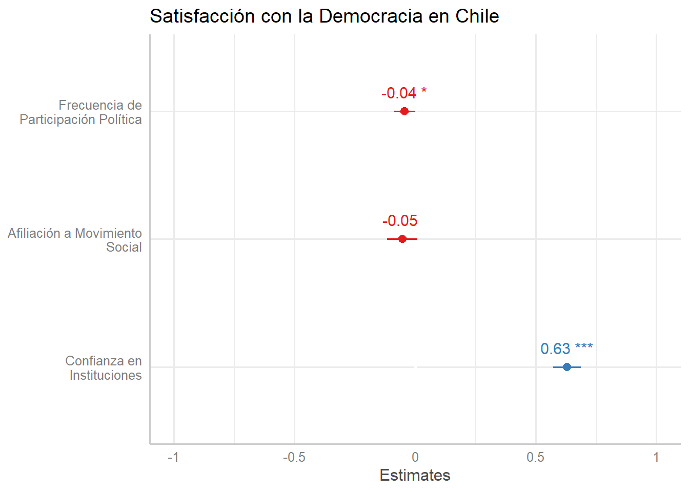

El objetivo de este trabajo es relacionar la satisfacción con la democracia con una serie de variables independientes tales como: afiliación con los movimientos sociales, participación política y confianza en las instituciones. El objetivo de este trabajo es relacionar la satisfacción de la democracia con una serie de variables claves. Ordenamos por interés y por evidencia aquellas que consideramos más apropiadas para comprender la democracia en el Chile contemporáneo: afiliación a los movimientos sociales, en primer lugar, confianza en las instituciones. La pregunta que guía esta investigación es la siguiente: ¿Cómo es la relación entre la satisfacción con la democracia en Chile, durante el 2019, y la participación política, la participación en movimientos sociales y la confianza en las instituciones, considerando éstos como predictores de la primera? A partir de la base de datos del Estudio Longitudinal Social de Chile del 2019, liberada a principios del año 2021, construimos una serie de índices que nos permiten profundizar en la relación estadística entre estas variables. Presentamos que la sociedad chilena está más conforme con su democracia en tanto confían más en las instituciones de una república, como también hemos descubierto una relación negativa entre la satisfacción con la democracia y una participación política y su filiación a movimientos sociales.
Chile vive, actualmente, una crisis social, económica, sanitaria y política, iniciadas, primero por el Estallido Social del 18 de octubre de 2019 (en adelante, 18O), y luego por la pandemia, que actualmente padecemos. Dentro de este escenario, está en curso un proceso constituyente, iniciado a raíz del 18O y que fue canalizado, institucionalmente, por el poder político. En este contexto, se hace necesario atender a los grados de satisfacción con la democracia que muestra la población chilena, por ser una de las categorías que más influyen en la legitimación de la misma (Cereceda-Marambio and Torres-Solís 2017; noauthor_latinobarometro_nodate?; Sanhueza, Sánchez, and Chinga 2015), y así poder distinguir cómo la confianza en las instituciones, la participación política y la filiación con algún movimiento social, impactaron en 2019 a la satisfacción democrática y, por tanto a la legitimidad de la democracia y el poder, con el fin de comprender de mejor forma los motivos que incitaron el Estallido del 18O. En función de este objetivo, explicaremos los principales conceptos a abordar en este estudio y los antecedentes de investigaciones anteriores respecto a la problemática que intentamos abordar. La legitimidad democrática (sinónimo de satisfacción democrática en este caso), se entiende como la validez que le da la ciudadanía al sistema político, democrático e institucional. Según Arroyo (1996), la legitimidad democrática es una expresión de los movimientos sociales. Por otro lado, López Hidalgo (2018) consideran la legitimidad como la aceptación social de los sistemas políticos. Uno de los indicadores para medir dicha legitimidad, es la satisfacción con la democracia, esta estima el desempeño del régimen democrático en el corto plazo Sanhueza, Sánchez, and Chinga (2015). Por otro lado, en Cereceda-Marambio and Torres-Solís (2017), se aborda nuestra variable dependiente considerando el quehacer político, crecimiento económico, los valores de la igualdad y la percepción de los derechos políticos civiles. Sanhueza, Sánchez, and Chinga (2015), por su parte, relacionan la satisfacción con la creencia en la democracia como el mejor sistema posible, una relación poco explorada. Gibert, Zmerli, and Newton (2008) llevaron a cabo un estudio que relaciona la satisfacción con la democracia con la confianza social, política y en las instituciones, así como la relación de estas tres variables con el “asociacionismo,” o sea, la participación en organizaciones y asociaciones voluntarias. Del Campo, Guemes, and RODRIGO (2017) estudiaron el impacto, en la satisfacción, del descontento con el Estado donde concluyeron que la confianza en el gobierno y la percepción de equidad social es lo que, principalmente, influye en la satisfacción democrática. La legitimidad del sistema político, expresada tanto a partir del apoyo a la democracia como por su nivel de satisfacción; puede estar influida por la participación ciudadana en política. En este ámbito, (noauthor_idh_nodate?) señala que las personas que no asisten a votar son demócratas insatisfechos, además, la autora agrega que la legitimidad se mide en relación a las percepciones que tienen los ciudadanos según el apoyo al régimen.Sumado a esto, Chihu Amparán and López Gallegos (2007) agregan que el hecho de no sentirse representados en el principal cargo de gobierno los lleva a estar insatisfechos con el modo en que funciona el mismo. La definición de participación política, en lo referente al análisis, adhiere cualquier actividad, electoral, voluntaria o involuntaria, que influya en las decisiones, agentes, capacidades y movimientos dentro del espectro del campo político representativo. La confianza en las instituciones, es expresada como el grado de satisfacción que tiene la ciudadanía con el actuar de las instituciones. Según Gibert, Zmerli, and Newton (2008) la confianza en las instituciones es el apoyo “difuso” al sistema político, que se expresa en favor de la democracia o el apoyo a los resultados de un gobierno y autoridades específicas. Existen factores que influyen en la confianza de las instituciones, según Morales Quiroga (2008) un factor importante es el deterioro de la calidad de la democracia, ya que, determina la participación e identificación que tendrá la ciudadanía en las instituciones. Por otro lado, Quiroga (2020) aporta con el nivel de acercamiento con los partidos políticos, debido a que de éstos depende la identificación con el gobierno y así mismo su confianza en éste. De lo mencionado anteriormente, se podría apreciar una relación positiva entre confianza en las instituciones y satisfacción de la democracia, ya que, a mayor confianza en las instituciones, podría haber mayor satisfacción con la democracia y con el funcionamiento de los órganos que la componen y la posibilitan. La categoría filiación con movimiento social estima la cercanía y representación de las personas con el movimiento social. Éste se entenderá como una iniciativa colectiva y autorreflexiva, que se enfoca en las acciones expresivas de las y los integrantes de la colectividad, donde las identidades y el movimiento surgen debido a la acción colectiva conscientemente coordinada; sus miembros, de manera consciente, desarrollan ataques y defensas, aislando, diferenciando y marcando fronteras y se organizan creando lazos y redes solidarias (Chihu Amparán and López Gallegos 2007). Se ha decidido emplear esta variable, fuera de participación política, ya que los movimientos sociales no expresan, únicamente, conflictos políticos, sino que además expresan, fundamentalmente, conflictos sociales (Chihu Amparán and López Gallegos 2007). En el caso del 18O, se destacan tres tipos de conflictos: por una mejor calidad de vida, cambiar los modos de vida y búsqueda de mayor legitimidad y eficacia de las instituciones estatales (noauthor_idh_nodate?).
En base a los antecedentes presentados y la problematización a resolver en el presente estudio, mencionaremos las hipótesis y objetivos que guiarán nuestro trabajo, orientado a mostrar la relación estadística entre los cuatro conceptos presentados anteriormente, revelando la naturaleza e intensidad presente en la correlación entre éstos y la influencia simultánea de las tres independientes en la satisfacción con la democracia.
Correlacionar y analizar la Satisfacción con la democracia en relación con la Participación política, la Participación en movimientos sociales y la Confianza en instituciones, tanto de forma bivariada como multivariada, en base a los datos recogidos por el Estudio Longitudinal Social de Chile (noauthor_elsoc_nodate?).
La base de datos utilizada corresponde al Estudio Longitudinal Social de Chile (ELSOC) del año 2019, elaborada por el Centro de Estudios de Conflicto y Cohesión Social (COES). La encuesta considera un total de 3417 personas encuestadas, y se levanta con el fin de “evaluar la manera cómo piensan, sienten y se comportan los chilenos en torno a un conjunto de temas referidos al conflicto y la cohesión social en Chile” (noauthor_elsoc_nodate?).
dim(elsoc_2019)## [1] 3417 374Las variables de interés extraídas para el análisis corresponden a: Satisfacción con la democracia, las relativas al módulo de Frecuencia de la participación política, al Grado de acuerdo con la filiación a determinado movimiento social y el Grado de confianza en las instituciones chilenas. A continuación se especifican las preguntas de cada variable y sus categorías de respuesta junto con su valor numérico:
Satisfacción con la democracia en Chile ● Categorías: nada satisfecho/a (1), poco satisfecho (2), algo satisfecho/a (3), bastante satisfecho/a (4), muy satisfecho/a (5), no sabe (-888), no responde (-999).
find_var(data = elsoc_2019,"democracia") # Yfreqc01 <- freq(elsoc_2019$c01)
freqc01## Frequencies
##
## Freq % Valid % Valid Cum. % Total % Total Cum.
## ----------- ------ --------- -------------- --------- --------------
## -999 20 0.59 0.59 0.59 0.59
## -888 78 2.28 2.87 2.28 2.87
## 1 1786 52.27 55.14 52.27 55.14
## 2 916 26.81 81.94 26.81 81.94
## 3 463 13.55 95.49 13.55 95.49
## 4 109 3.19 98.68 3.19 98.68
## 5 45 1.32 100.00 1.32 100.00
## <NA> 0 0.00 100.00
## Total 3417 100.00 100.00 100.00 100.00Índice de Frecuencia de participación política ● Dimensiones: firma carta o petición apoyando causa, asiste a marcha o manifestación pacífica, participa en huelga, usa redes sociales para opinar en temas públicos, participa en cacerolazos. ● Categorías: nunca (1), casi nunca (2), a veces (3), frecuentemente (4), muy frecuentemente (5), no sabe (-888), no responde (-999).
find_var(data = elsoc_2019,"politica") # X freq(elsoc_2019$c08_01)## Frequencies
##
## Freq % Valid % Valid Cum. % Total % Total Cum.
## ----------- ------ --------- -------------- --------- --------------
## -999 3 0.088 0.088 0.088 0.088
## 1 2617 76.588 76.675 76.588 76.675
## 2 339 9.921 86.596 9.921 86.596
## 3 341 9.980 96.576 9.980 96.576
## 4 96 2.809 99.385 2.809 99.385
## 5 21 0.615 100.000 0.615 100.000
## <NA> 0 0.000 100.000
## Total 3417 100.000 100.000 100.000 100.000freq(elsoc_2019$c08_02)## Frequencies
##
## Freq % Valid % Valid Cum. % Total % Total Cum.
## ----------- ------ --------- -------------- --------- --------------
## -999 1 0.029 0.029 0.029 0.029
## -888 1 0.029 0.059 0.029 0.059
## 1 2541 74.363 74.422 74.363 74.422
## 2 241 7.053 81.475 7.053 81.475
## 3 386 11.296 92.771 11.296 92.771
## 4 173 5.063 97.834 5.063 97.834
## 5 74 2.166 100.000 2.166 100.000
## <NA> 0 0.000 100.000
## Total 3417 100.000 100.000 100.000 100.000freq(elsoc_2019$c08_03)## Frequencies
##
## Freq % Valid % Valid Cum. % Total % Total Cum.
## ----------- ------ --------- -------------- --------- --------------
## -999 1 0.029 0.029 0.029 0.029
## -888 2 0.059 0.088 0.059 0.088
## 1 3069 89.816 89.903 89.816 89.903
## 2 135 3.951 93.854 3.951 93.854
## 3 134 3.922 97.776 3.922 97.776
## 4 54 1.580 99.356 1.580 99.356
## 5 22 0.644 100.000 0.644 100.000
## <NA> 0 0.000 100.000
## Total 3417 100.000 100.000 100.000 100.000freq(elsoc_2019$c08_04)## Frequencies
##
## Freq % Valid % Valid Cum. % Total % Total Cum.
## ----------- ------ --------- -------------- --------- --------------
## 1 2130 62.34 62.34 62.34 62.34
## 2 250 7.32 69.65 7.32 69.65
## 3 509 14.90 84.55 14.90 84.55
## 4 321 9.39 93.94 9.39 93.94
## 5 207 6.06 100.00 6.06 100.00
## <NA> 0 0.00 100.00
## Total 3417 100.00 100.00 100.00 100.00freq(elsoc_2019$c08_05)## Frequencies
##
## Freq % Valid % Valid Cum. % Total % Total Cum.
## ----------- ------ --------- -------------- --------- --------------
## -999 1 0.029 0.029 0.029 0.029
## -888 1 0.029 0.059 0.029 0.059
## 1 2371 69.388 69.447 69.388 69.447
## 2 207 6.058 75.505 6.058 75.505
## 3 462 13.521 89.025 13.521 89.025
## 4 232 6.790 95.815 6.790 95.815
## 5 143 4.185 100.000 4.185 100.000
## <NA> 0 0.000 100.000
## Total 3417 100.000 100.000 100.000 100.000Índice de filiación con movimiento social ● Dimensiones: siento un compromiso con este movimiento, me identifico con este movimiento, estoy de acuerdo con las acciones de este movimiento, pensar acerca del futuro de este movimiento me hace sentir esperanzado, las acciones y protestas de este movimiento pueden generar cambio social, los participantes me ven como un miembro más, la gente en general y quienes pertenecen al movimiento tienen posiciones similares. ● Categorías: totalmente en desacuerdo (1), en desacuerdo (2), ni de acuerdo ni en desacuerdo (3), de acuerdo (4), totalmente de acuerdo (5), no sabe (-888), no responde (-999).
find_var(data = elsoc_2019,"movimiento") # X1freq (elsoc_2019)## Frequencies
## elsoc_2019$ola
## Label: Ola de Encuesta
## Type: Numeric
##
## Freq % Valid % Valid Cum. % Total % Total Cum.
## ----------- ------ --------- -------------- --------- --------------
## 4 3417 100.00 100.00 100.00 100.00
## <NA> 0 0.00 100.00
## Total 3417 100.00 100.00 100.00 100.00
##
## elsoc_2019$version
## Label: Version de Base de Datos
## Type: Numeric
##
## Freq % Valid % Valid Cum. % Total % Total Cum.
## ------------ ------ --------- -------------- --------- --------------
## 201921 3417 100.00 100.00 100.00 100.00
## <NA> 0 0.00 100.00
## Total 3417 100.00 100.00 100.00 100.00
##
## elsoc_2019$muestra
## Label: Muestra de Participantes en Encuesta
## Type: Numeric
##
## Freq % Valid % Valid Cum. % Total % Total Cum.
## ----------- ------ --------- -------------- --------- --------------
## 1 2153 63.01 63.01 63.01 63.01
## 2 1264 36.99 100.00 36.99 100.00
## <NA> 0 0.00 100.00
## Total 3417 100.00 100.00 100.00 100.00
##
## elsoc_2019$cuestion_mig
## Label: Cuestionario (Grupo) de Migrantes aplicado
## Type: Numeric
##
## Freq % Valid % Valid Cum. % Total % Total Cum.
## ----------- ------ --------- -------------- --------- --------------
## 1 1100 32.19 32.19 32.19 32.19
## 2 1053 30.82 63.01 30.82 63.01
## 3 1264 36.99 100.00 36.99 100.00
## <NA> 0 0.00 100.00
## Total 3417 100.00 100.00 100.00 100.00
##
## elsoc_2019$r13_nredes
## Label: Tamannio red de conocidos
## Type: Numeric
##
## Freq % Valid % Valid Cum. % Total % Total Cum.
## ----------- ------ --------- -------------- --------- --------------
## 0 20 0.59 0.59 0.59 0.59
## 1 1215 35.56 36.14 35.56 36.14
## 2 834 24.41 60.55 24.41 60.55
## 3 601 17.59 78.14 17.59 78.14
## 4 250 7.32 85.46 7.32 85.46
## 5 497 14.54 100.00 14.54 100.00
## <NA> 0 0.00 100.00
## Total 3417 100.00 100.00 100.00 100.00
##
## elsoc_2019$r13_sexo_01
## Label: Confidente 1: Sexo
## Type: Numeric
##
## Freq % Valid % Valid Cum. % Total % Total Cum.
## ----------- ------ --------- -------------- --------- --------------
## -999 20 0.59 0.59 0.59 0.59
## -888 6 0.18 0.76 0.18 0.76
## 1 1300 38.05 38.81 38.05 38.81
## 2 2091 61.19 100.00 61.19 100.00
## <NA> 0 0.00 100.00
## Total 3417 100.00 100.00 100.00 100.00
##
## elsoc_2019$r13_relacion_01
## Label: Confidente 1: Tipo de relacion
## Type: Numeric
##
## Freq % Valid % Valid Cum. % Total % Total Cum.
## ----------- ------ --------- -------------- --------- --------------
## -999 21 0.61 0.61 0.61 0.61
## -888 7 0.20 0.82 0.20 0.82
## 1 606 17.73 18.55 17.73 18.55
## 2 431 12.61 31.17 12.61 31.17
## 3 1007 29.47 60.64 29.47 60.64
## 4 991 29.00 89.64 29.00 89.64
## 5 354 10.36 100.00 10.36 100.00
## <NA> 0 0.00 100.00
## Total 3417 100.00 100.00 100.00 100.00
##
## elsoc_2019$r13_tiempo_01
## Label: Confidente 1: Tiempo de conocimiento
## Type: Numeric
##
## Freq % Valid % Valid Cum. % Total % Total Cum.
## ----------- ------ --------- -------------- --------- --------------
## -999 16 0.74 0.74 0.47 0.47
## -888 4 0.19 0.93 0.12 0.59
## 1 44 2.04 2.97 1.29 1.87
## 2 98 4.55 7.52 2.87 4.74
## 3 147 6.83 14.35 4.30 9.04
## 4 265 12.31 26.66 7.76 16.80
## 5 1579 73.34 100.00 46.21 63.01
## <NA> 1264 36.99 100.00
## Total 3417 100.00 100.00 100.00 100.00
##
## elsoc_2019$r13_barrio_01
## Label: Confidente 1: Mismo vecindario
## Type: Numeric
##
## Freq % Valid % Valid Cum. % Total % Total Cum.
## ----------- ------ --------- -------------- --------- --------------
## -999 15 0.70 0.70 0.44 0.44
## -888 4 0.19 0.88 0.12 0.56
## 1 1123 52.16 53.04 32.87 33.42
## 2 1011 46.96 100.00 29.59 63.01
## <NA> 1264 36.99 100.00
## Total 3417 100.00 100.00 100.00 100.00
##
## elsoc_2019$r13_educ_01
## Label: Confidente 1: Educacion
## Type: Numeric
##
## Freq % Valid % Valid Cum. % Total % Total Cum.
## ----------- ------ --------- -------------- --------- --------------
## -999 24 0.70 0.70 0.70 0.70
## -888 183 5.36 6.06 5.36 6.06
## 1 521 15.25 21.31 15.25 21.31
## 2 314 9.19 30.49 9.19 30.49
## 3 1193 34.91 65.41 34.91 65.41
## 4 433 12.67 78.08 12.67 78.08
## 5 749 21.92 100.00 21.92 100.00
## <NA> 0 0.00 100.00
## Total 3417 100.00 100.00 100.00 100.00
##
## elsoc_2019$r13_relig_01
## Label: Confidente 1: Religion
## Type: Numeric
##
## Freq % Valid % Valid Cum. % Total % Total Cum.
## ----------- ------ --------- -------------- --------- --------------
## -999 26 0.76 0.76 0.76 0.76
## -888 159 4.65 5.41 4.65 5.41
## 1 1993 58.33 63.74 58.33 63.74
## 2 583 17.06 80.80 17.06 80.80
## 3 410 12.00 92.80 12.00 92.80
## 4 121 3.54 96.34 3.54 96.34
## 5 125 3.66 100.00 3.66 100.00
## <NA> 0 0.00 100.00
## Total 3417 100.00 100.00 100.00 100.00
##
## elsoc_2019$r13_ideol_01
## Label: Confidente 1: Ideologia
## Type: Numeric
##
## Freq % Valid % Valid Cum. % Total % Total Cum.
## ----------- ------ --------- -------------- --------- --------------
## -999 49 1.43 1.43 1.43 1.43
## -888 340 9.95 11.38 9.95 11.38
## 1 266 7.78 19.17 7.78 19.17
## 2 108 3.16 22.33 3.16 22.33
## 3 203 5.94 28.27 5.94 28.27
## 4 183 5.36 33.63 5.36 33.63
## 5 382 11.18 44.81 11.18 44.81
## 6 1886 55.19 100.00 55.19 100.00
## <NA> 0 0.00 100.00
## Total 3417 100.00 100.00 100.00 100.00
##
## elsoc_2019$r13_confia_01
## Label: Confidente 1: Confianza relacion
## Type: Numeric
##
## Freq % Valid % Valid Cum. % Total % Total Cum.
## ----------- ------ --------- -------------- --------- --------------
## -999 18 0.836 0.836 0.527 0.527
## -888 3 0.139 0.975 0.088 0.615
## 1 112 5.202 6.177 3.278 3.892
## 2 471 21.876 28.054 13.784 17.676
## 3 1549 71.946 100.000 45.332 63.008
## <NA> 1264 36.992 100.000
## Total 3417 100.000 100.000 100.000 100.000
##
## elsoc_2019$r13_sexo_02
## Label: Confidente 2: Sexo
## Type: Numeric
##
## Freq % Valid % Valid Cum. % Total % Total Cum.
## ----------- ------ --------- -------------- --------- --------------
## -999 1 0.046 0.046 0.029 0.029
## 1 848 38.863 38.909 24.817 24.846
## 2 1333 61.091 100.000 39.011 63.857
## <NA> 1235 36.143 100.000
## Total 3417 100.000 100.000 100.000 100.000
##
## elsoc_2019$r13_relacion_02
## Label: Confidente 2: Tipo de relacion
## Type: Numeric
##
## Freq % Valid % Valid Cum. % Total % Total Cum.
## ----------- ------ --------- -------------- --------- --------------
## -888 1 0.046 0.046 0.029 0.029
## 1 223 10.220 10.266 6.526 6.555
## 2 290 13.291 23.556 8.487 15.042
## 3 683 31.302 54.858 19.988 35.031
## 4 711 32.585 87.443 20.808 55.838
## 5 274 12.557 100.000 8.019 63.857
## <NA> 1235 36.143 100.000
## Total 3417 100.000 100.000 100.000 100.000
##
## elsoc_2019$r13_tiempo_02
## Label: Confidente 2: Tiempo de conocimiento
## Type: Numeric
##
## Freq % Valid % Valid Cum. % Total % Total Cum.
## ----------- ------ --------- -------------- --------- --------------
## -999 2 0.147 0.147 0.059 0.059
## -888 1 0.074 0.221 0.029 0.088
## 1 34 2.500 2.721 0.995 1.083
## 2 67 4.926 7.647 1.961 3.044
## 3 105 7.721 15.368 3.073 6.116
## 4 177 13.015 28.382 5.180 11.296
## 5 974 71.618 100.000 28.505 39.801
## <NA> 2057 60.199 100.000
## Total 3417 100.000 100.000 100.000 100.000
##
## elsoc_2019$r13_barrio_02
## Label: Confidente 2: Mismo vecindario
## Type: Numeric
##
## Freq % Valid % Valid Cum. % Total % Total Cum.
## ----------- ------ --------- -------------- --------- --------------
## -888 2 0.147 0.147 0.059 0.059
## 1 656 48.235 48.382 19.198 19.257
## 2 702 51.618 100.000 20.544 39.801
## <NA> 2057 60.199 100.000
## Total 3417 100.000 100.000 100.000 100.000
##
## elsoc_2019$r13_educ_02
## Label: Confidente 2: Educacion
## Type: Numeric
##
## Freq % Valid % Valid Cum. % Total % Total Cum.
## ----------- ------ --------- -------------- --------- --------------
## -999 4 0.18 0.18 0.12 0.12
## -888 115 5.27 5.45 3.37 3.48
## 1 281 12.88 18.33 8.22 11.71
## 2 167 7.65 25.99 4.89 16.59
## 3 771 35.33 61.32 22.56 39.16
## 4 288 13.20 74.52 8.43 47.59
## 5 556 25.48 100.00 16.27 63.86
## <NA> 1235 36.14 100.00
## Total 3417 100.00 100.00 100.00 100.00
##
## elsoc_2019$r13_relig_02
## Label: Confidente 2: Religion
## Type: Numeric
##
## Freq % Valid % Valid Cum. % Total % Total Cum.
## ----------- ------ --------- -------------- --------- --------------
## -999 3 0.137 0.137 0.088 0.088
## -888 97 4.445 4.583 2.839 2.927
## 1 1241 56.874 61.457 36.318 39.245
## 2 367 16.819 78.277 10.740 49.985
## 3 282 12.924 91.201 8.253 58.238
## 4 96 4.400 95.600 2.809 61.048
## 5 96 4.400 100.000 2.809 63.857
## <NA> 1235 36.143 100.000
## Total 3417 100.000 100.000 100.000 100.000
##
## elsoc_2019$r13_ideol_02
## Label: Confidente 2: Ideologia
## Type: Numeric
##
## Freq % Valid % Valid Cum. % Total % Total Cum.
## ----------- ------ --------- -------------- --------- --------------
## -999 17 0.78 0.78 0.50 0.50
## -888 254 11.64 12.42 7.43 7.93
## 1 206 9.44 21.86 6.03 13.96
## 2 93 4.26 26.12 2.72 16.68
## 3 134 6.14 32.26 3.92 20.60
## 4 141 6.46 38.73 4.13 24.73
## 5 281 12.88 51.60 8.22 32.95
## 6 1056 48.40 100.00 30.90 63.86
## <NA> 1235 36.14 100.00
## Total 3417 100.00 100.00 100.00 100.00
##
## elsoc_2019$r13_confia_02
## Label: Confidente 2: Confianza relacion
## Type: Numeric
##
## Freq % Valid % Valid Cum. % Total % Total Cum.
## ----------- ------ --------- -------------- --------- --------------
## -999 1 0.074 0.074 0.029 0.029
## 1 79 5.809 5.882 2.312 2.341
## 2 333 24.485 30.368 9.745 12.087
## 3 947 69.632 100.000 27.714 39.801
## <NA> 2057 60.199 100.000
## Total 3417 100.000 100.000 100.000 100.000
##
## elsoc_2019$r13_sexo_03
## Label: Confidente 3: Sexo
## Type: Numeric
##
## Freq % Valid % Valid Cum. % Total % Total Cum.
## ----------- ------ --------- -------------- --------- --------------
## -999 1 0.074 0.074 0.029 0.029
## -888 1 0.074 0.148 0.029 0.059
## 1 534 39.614 39.763 15.628 15.686
## 2 812 60.237 100.000 23.764 39.450
## <NA> 2069 60.550 100.000
## Total 3417 100.000 100.000 100.000 100.000
##
## elsoc_2019$r13_relacion_03
## Label: Confidente 3: Tipo de relacion
## Type: Numeric
##
## Freq % Valid % Valid Cum. % Total % Total Cum.
## ----------- ------ --------- -------------- --------- --------------
## 1 118 8.75 8.75 3.45 3.45
## 2 181 13.43 22.18 5.30 8.75
## 3 430 31.90 54.08 12.58 21.33
## 4 432 32.05 86.13 12.64 33.98
## 5 187 13.87 100.00 5.47 39.45
## <NA> 2069 60.55 100.00
## Total 3417 100.00 100.00 100.00 100.00
##
## elsoc_2019$r13_tiempo_03
## Label: Confidente 3: Tiempo de conocimiento
## Type: Numeric
##
## Freq % Valid % Valid Cum. % Total % Total Cum.
## ----------- ------ --------- -------------- --------- --------------
## 1 21 2.43 2.43 0.61 0.61
## 2 44 5.10 7.53 1.29 1.90
## 3 63 7.30 14.83 1.84 3.75
## 4 115 13.33 28.16 3.37 7.11
## 5 620 71.84 100.00 18.14 25.26
## <NA> 2554 74.74 100.00
## Total 3417 100.00 100.00 100.00 100.00
##
## elsoc_2019$r13_barrio_03
## Label: Confidente 3: Mismo vecindario
## Type: Numeric
##
## Freq % Valid % Valid Cum. % Total % Total Cum.
## ----------- ------ --------- -------------- --------- --------------
## -888 1 0.116 0.116 0.029 0.029
## 1 390 45.191 45.307 11.414 11.443
## 2 472 54.693 100.000 13.813 25.256
## <NA> 2554 74.744 100.000
## Total 3417 100.000 100.000 100.000 100.000
##
## elsoc_2019$r13_educ_03
## Label: Confidente 3: Educacion
## Type: Numeric
##
## Freq % Valid % Valid Cum. % Total % Total Cum.
## ----------- ------ --------- -------------- --------- --------------
## -999 6 0.45 0.45 0.18 0.18
## -888 58 4.30 4.75 1.70 1.87
## 1 177 13.13 17.88 5.18 7.05
## 2 92 6.82 24.70 2.69 9.75
## 3 434 32.20 56.90 12.70 22.45
## 4 201 14.91 71.81 5.88 28.33
## 5 380 28.19 100.00 11.12 39.45
## <NA> 2069 60.55 100.00
## Total 3417 100.00 100.00 100.00 100.00
##
## elsoc_2019$r13_relig_03
## Label: Confidente 3: Religion
## Type: Numeric
##
## Freq % Valid % Valid Cum. % Total % Total Cum.
## ----------- ------ --------- -------------- --------- --------------
## -888 49 3.64 3.64 1.43 1.43
## 1 764 56.68 60.31 22.36 23.79
## 2 225 16.69 77.00 6.58 30.38
## 3 155 11.50 88.50 4.54 34.91
## 4 101 7.49 95.99 2.96 37.87
## 5 54 4.01 100.00 1.58 39.45
## <NA> 2069 60.55 100.00
## Total 3417 100.00 100.00 100.00 100.00
##
## elsoc_2019$r13_ideol_03
## Label: Confidente 3: Ideologia
## Type: Numeric
##
## Freq % Valid % Valid Cum. % Total % Total Cum.
## ----------- ------ --------- -------------- --------- --------------
## -999 6 0.45 0.45 0.18 0.18
## -888 133 9.87 10.31 3.89 4.07
## 1 141 10.46 20.77 4.13 8.19
## 2 61 4.53 25.30 1.79 9.98
## 3 86 6.38 31.68 2.52 12.50
## 4 109 8.09 39.76 3.19 15.69
## 5 204 15.13 54.90 5.97 21.66
## 6 608 45.10 100.00 17.79 39.45
## <NA> 2069 60.55 100.00
## Total 3417 100.00 100.00 100.00 100.00
##
## elsoc_2019$r13_confia_03
## Label: Confidente 3: Confianza relacion
## Type: Numeric
##
## Freq % Valid % Valid Cum. % Total % Total Cum.
## ----------- ------ --------- -------------- --------- --------------
## -888 1 0.116 0.116 0.029 0.029
## 1 64 7.416 7.532 1.873 1.902
## 2 215 24.913 32.445 6.292 8.194
## 3 583 67.555 100.000 17.062 25.256
## <NA> 2554 74.744 100.000
## Total 3417 100.000 100.000 100.000 100.000
##
## elsoc_2019$r13_sexo_04
## Label: Confidente 4: Sexo
## Type: Numeric
##
## Freq % Valid % Valid Cum. % Total % Total Cum.
## ----------- ------ --------- -------------- --------- --------------
## 1 304 40.70 40.70 8.90 8.90
## 2 443 59.30 100.00 12.96 21.86
## <NA> 2670 78.14 100.00
## Total 3417 100.00 100.00 100.00 100.00
##
## elsoc_2019$r13_relacion_04
## Label: Confidente 4: Tipo de relacion
## Type: Numeric
##
## Freq % Valid % Valid Cum. % Total % Total Cum.
## ----------- ------ --------- -------------- --------- --------------
## 1 70 9.37 9.37 2.05 2.05
## 2 89 11.91 21.29 2.60 4.65
## 3 237 31.73 53.01 6.94 11.59
## 4 234 31.33 84.34 6.85 18.44
## 5 117 15.66 100.00 3.42 21.86
## <NA> 2670 78.14 100.00
## Total 3417 100.00 100.00 100.00 100.00
##
## elsoc_2019$r13_tiempo_04
## Label: Confidente 4: Tiempo de conocimiento
## Type: Numeric
##
## Freq % Valid % Valid Cum. % Total % Total Cum.
## ----------- ------ --------- -------------- --------- --------------
## 1 19 3.94 3.94 0.56 0.56
## 2 22 4.56 8.51 0.64 1.20
## 3 58 12.03 20.54 1.70 2.90
## 4 62 12.86 33.40 1.81 4.71
## 5 321 66.60 100.00 9.39 14.11
## <NA> 2935 85.89 100.00
## Total 3417 100.00 100.00 100.00 100.00
##
## elsoc_2019$r13_barrio_04
## Label: Confidente 4: Mismo vecindario
## Type: Numeric
##
## Freq % Valid % Valid Cum. % Total % Total Cum.
## ----------- ------ --------- -------------- --------- --------------
## -888 1 0.207 0.207 0.029 0.029
## 1 197 40.871 41.079 5.765 5.795
## 2 284 58.921 100.000 8.311 14.106
## <NA> 2935 85.894 100.000
## Total 3417 100.000 100.000 100.000 100.000
##
## elsoc_2019$r13_educ_04
## Label: Confidente 4: Educacion
## Type: Numeric
##
## Freq % Valid % Valid Cum. % Total % Total Cum.
## ----------- ------ --------- -------------- --------- --------------
## -999 4 0.54 0.54 0.12 0.12
## -888 39 5.22 5.76 1.14 1.26
## 1 75 10.04 15.80 2.19 3.45
## 2 50 6.69 22.49 1.46 4.92
## 3 237 31.73 54.22 6.94 11.85
## 4 107 14.32 68.54 3.13 14.98
## 5 235 31.46 100.00 6.88 21.86
## <NA> 2670 78.14 100.00
## Total 3417 100.00 100.00 100.00 100.00
##
## elsoc_2019$r13_relig_04
## Label: Confidente 4: Religion
## Type: Numeric
##
## Freq % Valid % Valid Cum. % Total % Total Cum.
## ----------- ------ --------- -------------- --------- --------------
## -888 36 4.82 4.82 1.05 1.05
## 1 432 57.83 62.65 12.64 13.70
## 2 118 15.80 78.45 3.45 17.15
## 3 85 11.38 89.83 2.49 19.64
## 4 44 5.89 95.72 1.29 20.92
## 5 32 4.28 100.00 0.94 21.86
## <NA> 2670 78.14 100.00
## Total 3417 100.00 100.00 100.00 100.00
##
## elsoc_2019$r13_ideol_04
## Label: Confidente 4: Ideologia
## Type: Numeric
##
## Freq % Valid % Valid Cum. % Total % Total Cum.
## ----------- ------ --------- -------------- --------- --------------
## -999 2 0.268 0.268 0.059 0.059
## -888 70 9.371 9.639 2.049 2.107
## 1 87 11.647 21.285 2.546 4.653
## 2 47 6.292 27.577 1.375 6.029
## 3 63 8.434 36.011 1.844 7.872
## 4 54 7.229 43.240 1.580 9.453
## 5 117 15.663 58.902 3.424 12.877
## 6 307 41.098 100.000 8.984 21.861
## <NA> 2670 78.139 100.000
## Total 3417 100.000 100.000 100.000 100.000
##
## elsoc_2019$r13_confia_04
## Label: Confidente 4: Confianza relacion
## Type: Numeric
##
## Freq % Valid % Valid Cum. % Total % Total Cum.
## ----------- ------ --------- -------------- --------- --------------
## -999 1 0.207 0.207 0.029 0.029
## 1 43 8.921 9.129 1.258 1.288
## 2 114 23.651 32.780 3.336 4.624
## 3 324 67.220 100.000 9.482 14.106
## <NA> 2935 85.894 100.000
## Total 3417 100.000 100.000 100.000 100.000
##
## elsoc_2019$r13_sexo_05
## Label: Confidente 5: Sexo
## Type: Numeric
##
## Freq % Valid % Valid Cum. % Total % Total Cum.
## ----------- ------ --------- -------------- --------- --------------
## 1 205 41.25 41.25 6.00 6.00
## 2 292 58.75 100.00 8.55 14.54
## <NA> 2920 85.46 100.00
## Total 3417 100.00 100.00 100.00 100.00
##
## elsoc_2019$r13_relacion_05
## Label: Confidente 5: Tipo de relacion
## Type: Numeric
##
## Freq % Valid % Valid Cum. % Total % Total Cum.
## ----------- ------ --------- -------------- --------- --------------
## 1 34 6.84 6.84 1.00 1.00
## 2 54 10.87 17.71 1.58 2.58
## 3 154 30.99 48.69 4.51 7.08
## 4 179 36.02 84.71 5.24 12.32
## 5 76 15.29 100.00 2.22 14.54
## <NA> 2920 85.46 100.00
## Total 3417 100.00 100.00 100.00 100.00
##
## elsoc_2019$r13_tiempo_05
## Label: Confidente 5: Tiempo de conocimiento
## Type: Numeric
##
## Freq % Valid % Valid Cum. % Total % Total Cum.
## ----------- ------ --------- -------------- --------- --------------
## 1 8 2.43 2.43 0.23 0.23
## 2 22 6.69 9.12 0.64 0.88
## 3 31 9.42 18.54 0.91 1.79
## 4 51 15.50 34.04 1.49 3.28
## 5 217 65.96 100.00 6.35 9.63
## <NA> 3088 90.37 100.00
## Total 3417 100.00 100.00 100.00 100.00
##
## elsoc_2019$r13_barrio_05
## Label: Confidente 5: Mismo vecindario
## Type: Numeric
##
## Freq % Valid % Valid Cum. % Total % Total Cum.
## ----------- ------ --------- -------------- --------- --------------
## 1 142 43.16 43.16 4.16 4.16
## 2 187 56.84 100.00 5.47 9.63
## <NA> 3088 90.37 100.00
## Total 3417 100.00 100.00 100.00 100.00
##
## elsoc_2019$r13_educ_05
## Label: Confidente 5: Educacion
## Type: Numeric
##
## Freq % Valid % Valid Cum. % Total % Total Cum.
## ----------- ------ --------- -------------- --------- --------------
## -999 2 0.402 0.402 0.059 0.059
## -888 26 5.231 5.634 0.761 0.819
## 1 44 8.853 14.487 1.288 2.107
## 2 35 7.042 21.529 1.024 3.131
## 3 174 35.010 56.539 5.092 8.224
## 4 66 13.280 69.819 1.932 10.155
## 5 150 30.181 100.000 4.390 14.545
## <NA> 2920 85.455 100.000
## Total 3417 100.000 100.000 100.000 100.000
##
## elsoc_2019$r13_relig_05
## Label: Confidente 5: Religion
## Type: Numeric
##
## Freq % Valid % Valid Cum. % Total % Total Cum.
## ----------- ------ --------- -------------- --------- --------------
## -888 24 4.83 4.83 0.70 0.70
## 1 280 56.34 61.17 8.19 8.90
## 2 78 15.69 76.86 2.28 11.18
## 3 57 11.47 88.33 1.67 12.85
## 4 38 7.65 95.98 1.11 13.96
## 5 20 4.02 100.00 0.59 14.54
## <NA> 2920 85.46 100.00
## Total 3417 100.00 100.00 100.00 100.00
##
## elsoc_2019$r13_ideol_05
## Label: Confidente 5: Ideologia
## Type: Numeric
##
## Freq % Valid % Valid Cum. % Total % Total Cum.
## ----------- ------ --------- -------------- --------- --------------
## -999 1 0.201 0.201 0.029 0.029
## -888 52 10.463 10.664 1.522 1.551
## 1 45 9.054 19.718 1.317 2.868
## 2 33 6.640 26.358 0.966 3.834
## 3 35 7.042 33.400 1.024 4.858
## 4 37 7.445 40.845 1.083 5.941
## 5 78 15.694 56.539 2.283 8.224
## 6 216 43.461 100.000 6.321 14.545
## <NA> 2920 85.455 100.000
## Total 3417 100.000 100.000 100.000 100.000
##
## elsoc_2019$r13_confia_05
## Label: Confidente 5: Confianza relacion
## Type: Numeric
##
## Freq % Valid % Valid Cum. % Total % Total Cum.
## ----------- ------ --------- -------------- --------- --------------
## 1 32 9.73 9.73 0.94 0.94
## 2 85 25.84 35.56 2.49 3.42
## 3 212 64.44 100.00 6.20 9.63
## <NA> 3088 90.37 100.00
## Total 3417 100.00 100.00 100.00 100.00
##
## elsoc_2019$r14
## Label: Confidentes se conocen entre si
## Type: Numeric
##
## Freq % Valid % Valid Cum. % Total % Total Cum.
## ----------- ------ --------- -------------- --------- --------------
## -999 127 3.72 3.72 3.72 3.72
## -888 77 2.25 5.97 2.25 5.97
## 1 2689 78.69 84.66 78.69 84.66
## 2 295 8.63 93.30 8.63 93.30
## 3 229 6.70 100.00 6.70 100.00
## <NA> 0 0.00 100.00
## Total 3417 100.00 100.00 100.00 100.00
##
## elsoc_2019$r15
## Label: Cantidad de amigos cercanos
## Type: Numeric
##
## Freq % Valid % Valid Cum. % Total % Total Cum.
## ----------- ------ --------- -------------- --------- --------------
## -999 8 0.234 0.234 0.234 0.234
## -888 2 0.059 0.293 0.059 0.293
## 1 609 17.823 18.115 17.823 18.115
## 2 978 28.622 46.737 28.622 46.737
## 3 1069 31.285 78.022 31.285 78.022
## 4 422 12.350 90.372 12.350 90.372
## 5 329 9.628 100.000 9.628 100.000
## <NA> 0 0.000 100.000
## Total 3417 100.000 100.000 100.000 100.000
##
## elsoc_2019$r05_01
## Label: Grado de contacto: Conocidos migrantes [PER-HAI-VEN]
## Type: Numeric
##
## Freq % Valid % Valid Cum. % Total % Total Cum.
## ----------- ------ --------- -------------- --------- --------------
## -999 7 0.20 0.20 0.20 0.20
## -888 6 0.18 0.38 0.18 0.38
## 1 2553 74.71 75.10 74.71 75.10
## 2 488 14.28 89.38 14.28 89.38
## 3 192 5.62 95.00 5.62 95.00
## 4 111 3.25 98.24 3.25 98.24
## 5 60 1.76 100.00 1.76 100.00
## <NA> 0 0.00 100.00
## Total 3417 100.00 100.00 100.00 100.00
##
## elsoc_2019$r05_02
## Label: Grado de contacto: Amigos migrantes [PER-HAI-VEN]
## Type: Numeric
##
## Freq % Valid % Valid Cum. % Total % Total Cum.
## ----------- ------ --------- -------------- --------- --------------
## -999 7 0.20 0.20 0.20 0.20
## -888 40 1.17 1.38 1.17 1.38
## 1 2852 83.47 84.84 83.47 84.84
## 2 374 10.95 95.79 10.95 95.79
## 3 100 2.93 98.71 2.93 98.71
## 4 26 0.76 99.47 0.76 99.47
## 5 18 0.53 100.00 0.53 100.00
## <NA> 0 0.00 100.00
## Total 3417 100.00 100.00 100.00 100.00
##
## elsoc_2019$r06
## Label: Frecuencia de contacto con [PER-HAI-VEN]
## Type: Numeric
##
## Freq % Valid % Valid Cum. % Total % Total Cum.
## ----------- ------ --------- -------------- --------- --------------
## -999 3 0.088 0.088 0.088 0.088
## -888 1 0.029 0.117 0.029 0.117
## 1 1850 54.141 54.258 54.141 54.258
## 2 582 17.032 71.291 17.032 71.291
## 3 601 17.589 88.879 17.589 88.879
## 4 224 6.555 95.435 6.555 95.435
## 5 156 4.565 100.000 4.565 100.000
## <NA> 0 0.000 100.000
## Total 3417 100.000 100.000 100.000 100.000
##
## elsoc_2019$r07
## Label: Contacto positivo con [PER-HAI-VEN]
## Type: Numeric
##
## Freq % Valid % Valid Cum. % Total % Total Cum.
## ----------- ------ --------- -------------- --------- --------------
## -999 1 0.064 0.064 0.029 0.029
## -888 11 0.704 0.768 0.322 0.351
## 1 33 2.111 2.879 0.966 1.317
## 2 155 9.917 12.796 4.536 5.853
## 3 365 23.353 36.148 10.682 16.535
## 4 747 47.793 83.941 21.861 38.396
## 5 251 16.059 100.000 7.346 45.742
## <NA> 1854 54.258 100.000
## Total 3417 100.000 100.000 100.000 100.000
##
## elsoc_2019$r08
## Label: Frecuencia de contacto negativo con [PER-HAI-VEN]
## Type: Numeric
##
## Freq % Valid % Valid Cum. % Total % Total Cum.
## ----------- ------ --------- -------------- --------- --------------
## -999 1 0.064 0.064 0.029 0.029
## -888 1 0.064 0.128 0.029 0.059
## 1 1313 84.005 84.133 38.426 38.484
## 2 154 9.853 93.986 4.507 42.991
## 3 73 4.671 98.656 2.136 45.127
## 4 20 1.280 99.936 0.585 45.713
## 5 1 0.064 100.000 0.029 45.742
## <NA> 1854 54.258 100.000
## Total 3417 100.000 100.000 100.000 100.000
##
## elsoc_2019$r09
## Label: Grado de simpatia por [PER-HAI-VEN] que viven en Chile
## Type: Numeric
##
## Freq % Valid % Valid Cum. % Total % Total Cum.
## ----------- ------ --------- -------------- --------- --------------
## -999 31 0.91 0.91 0.91 0.91
## -888 214 6.26 7.17 6.26 7.17
## 1 366 10.71 17.88 10.71 17.88
## 2 464 13.58 31.46 13.58 31.46
## 3 1084 31.72 63.18 31.72 63.18
## 4 976 28.56 91.75 28.56 91.75
## 5 282 8.25 100.00 8.25 100.00
## <NA> 0 0.00 100.00
## Total 3417 100.00 100.00 100.00 100.00
##
## elsoc_2019$r10
## Label: Grado de similitud entre chilenos y [PER-HAI-VEN]
## Type: Numeric
##
## Freq % Valid % Valid Cum. % Total % Total Cum.
## ----------- ------ --------- -------------- --------- --------------
## -999 5 0.15 0.15 0.15 0.15
## -888 156 4.57 4.71 4.57 4.71
## 1 1045 30.58 35.29 30.58 35.29
## 2 815 23.85 59.15 23.85 59.15
## 3 797 23.32 82.47 23.32 82.47
## 4 454 13.29 95.76 13.29 95.76
## 5 145 4.24 100.00 4.24 100.00
## <NA> 0 0.00 100.00
## Total 3417 100.00 100.00 100.00 100.00
##
## elsoc_2019$r11
## Label: Ansiedad por interaccion con [PER-HAI-VEN]
## Type: Numeric
##
## Freq % Valid % Valid Cum. % Total % Total Cum.
## ----------- ------ --------- -------------- --------- --------------
## -999 2 0.059 0.059 0.059 0.059
## -888 32 0.936 0.995 0.936 0.995
## 1 107 3.131 4.126 3.131 4.126
## 2 649 18.993 23.120 18.993 23.120
## 3 1043 30.524 53.644 30.524 53.644
## 4 1406 41.147 94.791 41.147 94.791
## 5 178 5.209 100.000 5.209 100.000
## <NA> 0 0.000 100.000
## Total 3417 100.000 100.000 100.000 100.000
##
## elsoc_2019$r16
## Label: Grado de confianza en [PER-HAI-VEN]
## Type: Numeric
##
## Freq % Valid % Valid Cum. % Total % Total Cum.
## ----------- ------ --------- -------------- --------- --------------
## -999 11 0.32 0.32 0.32 0.32
## -888 211 6.18 6.50 6.18 6.50
## 1 630 18.44 24.93 18.44 24.93
## 2 730 21.36 46.30 21.36 46.30
## 3 1185 34.68 80.98 34.68 80.98
## 4 570 16.68 97.66 16.68 97.66
## 5 80 2.34 100.00 2.34 100.00
## <NA> 0 0.00 100.00
## Total 3417 100.00 100.00 100.00 100.00
##
## elsoc_2019$r17
## Label: Cantidad de amigos chilenos que tienen amigos [PER-HAI-VEN]
## Type: Numeric
##
## Freq % Valid % Valid Cum. % Total % Total Cum.
## ----------- ------ --------- -------------- --------- --------------
## -999 13 0.38 0.38 0.38 0.38
## -888 290 8.49 8.87 8.49 8.87
## 1 1925 56.34 65.20 56.34 65.20
## 2 675 19.75 84.96 19.75 84.96
## 3 379 11.09 96.05 11.09 96.05
## 4 113 3.31 99.36 3.31 99.36
## 5 22 0.64 100.00 0.64 100.00
## <NA> 0 0.00 100.00
## Total 3417 100.00 100.00 100.00 100.00
##
## elsoc_2019$r12_01
## Label: Grado de acuerdo: Mi familia valora a mis amigos [PER-HAI-VEN]
## Type: Numeric
##
## Freq % Valid % Valid Cum. % Total % Total Cum.
## ----------- ------ --------- -------------- --------- --------------
## -999 181 5.30 5.30 5.30 5.30
## -888 230 6.73 12.03 6.73 12.03
## 1 148 4.33 16.36 4.33 16.36
## 2 225 6.58 22.94 6.58 22.94
## 3 1376 40.27 63.21 40.27 63.21
## 4 1080 31.61 94.82 31.61 94.82
## 5 177 5.18 100.00 5.18 100.00
## <NA> 0 0.00 100.00
## Total 3417 100.00 100.00 100.00 100.00
##
## elsoc_2019$r12_02
## Label: Grado de acuerdo: Mis amigos valoran a mis amigos [PER-HAI-VEN]
## Type: Numeric
##
## Freq % Valid % Valid Cum. % Total % Total Cum.
## ----------- ------ --------- -------------- --------- --------------
## -999 188 5.50 5.50 5.50 5.50
## -888 260 7.61 13.11 7.61 13.11
## 1 128 3.75 16.86 3.75 16.86
## 2 229 6.70 23.56 6.70 23.56
## 3 1373 40.18 63.74 40.18 63.74
## 4 1068 31.26 95.00 31.26 95.00
## 5 171 5.00 100.00 5.00 100.00
## <NA> 0 0.00 100.00
## Total 3417 100.00 100.00 100.00 100.00
##
## elsoc_2019$r12_03
## Label: Grado de acuerdo: Chile pierde su identidad con llegada de [PER-HAI-VEN]
## Type: Numeric
##
## Freq % Valid % Valid Cum. % Total % Total Cum.
## ----------- ------ --------- -------------- --------- --------------
## -999 17 0.50 0.50 0.50 0.50
## -888 32 0.94 1.43 0.94 1.43
## 1 364 10.65 12.09 10.65 12.09
## 2 1266 37.05 49.14 37.05 49.14
## 3 521 15.25 64.38 15.25 64.38
## 4 958 28.04 92.42 28.04 92.42
## 5 259 7.58 100.00 7.58 100.00
## <NA> 0 0.00 100.00
## Total 3417 100.00 100.00 100.00 100.00
##
## elsoc_2019$r12_04
## Label: Grado de acuerdo: Con llegada de [PER-HAI-VEN] aumenta el desempleo
## Type: Numeric
##
## Freq % Valid % Valid Cum. % Total % Total Cum.
## ----------- ------ --------- -------------- --------- --------------
## -999 3 0.088 0.088 0.088 0.088
## -888 25 0.732 0.819 0.732 0.819
## 1 251 7.346 8.165 7.346 8.165
## 2 963 28.183 36.348 28.183 36.348
## 3 417 12.204 48.551 12.204 48.551
## 4 1344 39.333 87.884 39.333 87.884
## 5 414 12.116 100.000 12.116 100.000
## <NA> 0 0.000 100.000
## Total 3417 100.000 100.000 100.000 100.000
##
## elsoc_2019$r12_05
## Label: Grado de acuerdo: [PER-HAI-VEN] mantengan sus costumbres
## Type: Numeric
##
## Freq % Valid % Valid Cum. % Total % Total Cum.
## ----------- ------ --------- -------------- --------- --------------
## -999 5 0.15 0.15 0.15 0.15
## -888 15 0.44 0.59 0.44 0.59
## 1 44 1.29 1.87 1.29 1.87
## 2 283 8.28 10.16 8.28 10.16
## 3 352 10.30 20.46 10.30 20.46
## 4 2135 62.48 82.94 62.48 82.94
## 5 583 17.06 100.00 17.06 100.00
## <NA> 0 0.00 100.00
## Total 3417 100.00 100.00 100.00 100.00
##
## elsoc_2019$r12_06
## Label: Grado de acuerdo: [PER-HAI-VEN] adopten costumbres chilenas
## Type: Numeric
##
## Freq % Valid % Valid Cum. % Total % Total Cum.
## ----------- ------ --------- -------------- --------- --------------
## -999 6 0.18 0.18 0.18 0.18
## -888 13 0.38 0.56 0.38 0.56
## 1 27 0.79 1.35 0.79 1.35
## 2 220 6.44 7.78 6.44 7.78
## 3 428 12.53 20.31 12.53 20.31
## 4 2223 65.06 85.37 65.06 85.37
## 5 500 14.63 100.00 14.63 100.00
## <NA> 0 0.00 100.00
## Total 3417 100.00 100.00 100.00 100.00
##
## elsoc_2019$r12_07
## Label: Grado de acuerdo: [PER-HAI-VEN] tengan amigos chilenos
## Type: Numeric
##
## Freq % Valid % Valid Cum. % Total % Total Cum.
## ----------- ------ --------- -------------- --------- --------------
## -999 7 0.20 0.20 0.20 0.20
## -888 19 0.56 0.76 0.56 0.76
## 1 22 0.64 1.40 0.64 1.40
## 2 57 1.67 3.07 1.67 3.07
## 3 311 9.10 12.17 9.10 12.17
## 4 2220 64.97 77.14 64.97 77.14
## 5 781 22.86 100.00 22.86 100.00
## <NA> 0 0.00 100.00
## Total 3417 100.00 100.00 100.00 100.00
##
## elsoc_2019$r18_01
## Label: Grado de acuerdo: Fomentar migracion de [PER-HAI-VEN] calificados
## Type: Numeric
##
## Freq % Valid % Valid Cum. % Total % Total Cum.
## ----------- ------ --------- -------------- --------- --------------
## -999 3 0.088 0.088 0.088 0.088
## -888 35 1.024 1.112 1.024 1.112
## 1 209 6.116 7.229 6.116 7.229
## 2 762 22.300 29.529 22.300 29.529
## 3 605 17.706 47.234 17.706 47.234
## 4 1481 43.342 90.577 43.342 90.577
## 5 322 9.423 100.000 9.423 100.000
## <NA> 0 0.000 100.000
## Total 3417 100.000 100.000 100.000 100.000
##
## elsoc_2019$r18_02
## Label: Grado de acuerdo: Migrantes [PER-HAI-VEN] acceso a salud igualitario
## Type: Numeric
##
## Freq % Valid % Valid Cum. % Total % Total Cum.
## ----------- ------ --------- -------------- --------- --------------
## -999 3 0.088 0.088 0.088 0.088
## -888 10 0.293 0.380 0.293 0.380
## 1 32 0.936 1.317 0.936 1.317
## 2 196 5.736 7.053 5.736 7.053
## 3 162 4.741 11.794 4.741 11.794
## 4 2252 65.906 77.700 65.906 77.700
## 5 762 22.300 100.000 22.300 100.000
## <NA> 0 0.000 100.000
## Total 3417 100.000 100.000 100.000 100.000
##
## elsoc_2019$t01
## Label: Cuanto confia usted en sus vecinos
## Type: Numeric
##
## Freq % Valid % Valid Cum. % Total % Total Cum.
## ----------- ------ --------- -------------- --------- --------------
## -888 17 0.50 0.50 0.50 0.50
## 1 356 10.42 10.92 10.42 10.92
## 2 623 18.23 29.15 18.23 29.15
## 3 831 24.32 53.47 24.32 53.47
## 4 1131 33.10 86.57 33.10 86.57
## 5 459 13.43 100.00 13.43 100.00
## <NA> 0 0.00 100.00
## Total 3417 100.00 100.00 100.00 100.00
##
## elsoc_2019$t02_01
## Label: Grado de acuerdo: Este es el barrio ideal para mi
## Type: Numeric
##
## Freq % Valid % Valid Cum. % Total % Total Cum.
## ----------- ------ --------- -------------- --------- --------------
## -888 4 0.12 0.12 0.12 0.12
## 1 123 3.60 3.72 3.60 3.72
## 2 440 12.88 16.59 12.88 16.59
## 3 354 10.36 26.95 10.36 26.95
## 4 1866 54.61 81.56 54.61 81.56
## 5 630 18.44 100.00 18.44 100.00
## <NA> 0 0.00 100.00
## Total 3417 100.00 100.00 100.00 100.00
##
## elsoc_2019$t02_02
## Label: Grado de acuerdo: Me siento integrado/a en este barrio
## Type: Numeric
##
## Freq % Valid % Valid Cum. % Total % Total Cum.
## ----------- ------ --------- -------------- --------- --------------
## -888 2 0.059 0.059 0.059 0.059
## 1 111 3.248 3.307 3.248 3.307
## 2 378 11.062 14.369 11.062 14.369
## 3 363 10.623 24.993 10.623 24.993
## 4 1933 56.570 81.563 56.570 81.563
## 5 630 18.437 100.000 18.437 100.000
## <NA> 0 0.000 100.000
## Total 3417 100.000 100.000 100.000 100.000
##
## elsoc_2019$t02_03
## Label: Grado de acuerdo: Me identifico con la gente de este barrio
## Type: Numeric
##
## Freq % Valid % Valid Cum. % Total % Total Cum.
## ----------- ------ --------- -------------- --------- --------------
## -888 6 0.18 0.18 0.18 0.18
## 1 131 3.83 4.01 3.83 4.01
## 2 484 14.16 18.17 14.16 18.17
## 3 481 14.08 32.25 14.08 32.25
## 4 1770 51.80 84.05 51.80 84.05
## 5 545 15.95 100.00 15.95 100.00
## <NA> 0 0.00 100.00
## Total 3417 100.00 100.00 100.00 100.00
##
## elsoc_2019$t02_04
## Label: Grado de acuerdo: Este barrio es parte de mi
## Type: Numeric
##
## Freq % Valid % Valid Cum. % Total % Total Cum.
## ----------- ------ --------- -------------- --------- --------------
## -888 4 0.12 0.12 0.12 0.12
## 1 113 3.31 3.42 3.31 3.42
## 2 427 12.50 15.92 12.50 15.92
## 3 381 11.15 27.07 11.15 27.07
## 4 1875 54.87 81.94 54.87 81.94
## 5 617 18.06 100.00 18.06 100.00
## <NA> 0 0.00 100.00
## Total 3417 100.00 100.00 100.00 100.00
##
## elsoc_2019$t03_01
## Label: Grado de acuerdo: En este barrio es facil hacer amigos
## Type: Numeric
##
## Freq % Valid % Valid Cum. % Total % Total Cum.
## ----------- ------ --------- -------------- --------- --------------
## -999 1 0.029 0.029 0.029 0.029
## -888 19 0.556 0.585 0.556 0.585
## 1 134 3.922 4.507 3.922 4.507
## 2 684 20.018 24.524 20.018 24.524
## 3 626 18.320 42.845 18.320 42.845
## 4 1639 47.966 90.811 47.966 90.811
## 5 314 9.189 100.000 9.189 100.000
## <NA> 0 0.000 100.000
## Total 3417 100.000 100.000 100.000 100.000
##
## elsoc_2019$t03_02
## Label: Grado de acuerdo: La gente en este barrio es sociable
## Type: Numeric
##
## Freq % Valid % Valid Cum. % Total % Total Cum.
## ----------- ------ --------- -------------- --------- --------------
## -888 9 0.26 0.26 0.26 0.26
## 1 74 2.17 2.43 2.17 2.43
## 2 445 13.02 15.45 13.02 15.45
## 3 570 16.68 32.13 16.68 32.13
## 4 1933 56.57 88.70 56.57 88.70
## 5 386 11.30 100.00 11.30 100.00
## <NA> 0 0.00 100.00
## Total 3417 100.00 100.00 100.00 100.00
##
## elsoc_2019$t03_03
## Label: Grado de acuerdo: La gente en este barrio es cordial
## Type: Numeric
##
## Freq % Valid % Valid Cum. % Total % Total Cum.
## ----------- ------ --------- -------------- --------- --------------
## -888 9 0.26 0.26 0.26 0.26
## 1 59 1.73 1.99 1.73 1.99
## 2 345 10.10 12.09 10.10 12.09
## 3 537 15.72 27.80 15.72 27.80
## 4 2082 60.93 88.73 60.93 88.73
## 5 385 11.27 100.00 11.27 100.00
## <NA> 0 0.00 100.00
## Total 3417 100.00 100.00 100.00 100.00
##
## elsoc_2019$t03_04
## Label: Grado de acuerdo: La gente en este barrio es colaboradora
## Type: Numeric
##
## Freq % Valid % Valid Cum. % Total % Total Cum.
## ----------- ------ --------- -------------- --------- --------------
## -888 48 1.40 1.40 1.40 1.40
## 1 76 2.22 3.63 2.22 3.63
## 2 460 13.46 17.09 13.46 17.09
## 3 630 18.44 35.53 18.44 35.53
## 4 1795 52.53 88.06 52.53 88.06
## 5 408 11.94 100.00 11.94 100.00
## <NA> 0 0.00 100.00
## Total 3417 100.00 100.00 100.00 100.00
##
## elsoc_2019$t04_02
## Label: Grado de acuerdo: Encarecimiento de bienes y servicios en el barrio
## Type: Numeric
##
## Freq % Valid % Valid Cum. % Total % Total Cum.
## ----------- ------ --------- -------------- --------- --------------
## -999 2 0.059 0.059 0.059 0.059
## -888 33 0.966 1.024 0.966 1.024
## 1 33 0.966 1.990 0.966 1.990
## 2 576 16.857 18.847 16.857 18.847
## 3 360 10.536 29.382 10.536 29.382
## 4 1841 53.878 83.260 53.878 83.260
## 5 572 16.740 100.000 16.740 100.000
## <NA> 0 0.000 100.000
## Total 3417 100.000 100.000 100.000 100.000
##
## elsoc_2019$t04_03
## Label: Grado de acuerdo: El precio de las viviendas se ha incrementado
## Type: Numeric
##
## Freq % Valid % Valid Cum. % Total % Total Cum.
## ----------- ------ --------- -------------- --------- --------------
## -999 1 0.029 0.029 0.029 0.029
## -888 117 3.424 3.453 3.424 3.453
## 1 13 0.380 3.834 0.380 3.834
## 2 154 4.507 8.341 4.507 8.341
## 3 146 4.273 12.613 4.273 12.613
## 4 1911 55.926 68.540 55.926 68.540
## 5 1075 31.460 100.000 31.460 100.000
## <NA> 0 0.000 100.000
## Total 3417 100.000 100.000 100.000 100.000
##
## elsoc_2019$t04_04
## Label: Grado de acuerdo: El costo del transporte se ha incrementado
## Type: Numeric
##
## Freq % Valid % Valid Cum. % Total % Total Cum.
## ----------- ------ --------- -------------- --------- --------------
## -888 38 1.11 1.11 1.11 1.11
## 1 21 0.61 1.73 0.61 1.73
## 2 419 12.26 13.99 12.26 13.99
## 3 283 8.28 22.27 8.28 22.27
## 4 1860 54.43 76.70 54.43 76.70
## 5 796 23.30 100.00 23.30 100.00
## <NA> 0 0.00 100.00
## Total 3417 100.00 100.00 100.00 100.00
##
## elsoc_2019$t04_05
## Label: Grado de acuerdo: Abandono de vecinos y/o amigos del barrio
## Type: Numeric
##
## Freq % Valid % Valid Cum. % Total % Total Cum.
## ----------- ------ --------- -------------- --------- --------------
## -999 1 0.029 0.029 0.029 0.029
## -888 57 1.668 1.697 1.668 1.697
## 1 215 6.292 7.989 6.292 7.989
## 2 1447 42.347 50.337 42.347 50.337
## 3 549 16.067 66.403 16.067 66.403
## 4 987 28.885 95.288 28.885 95.288
## 5 161 4.712 100.000 4.712 100.000
## <NA> 0 0.000 100.000
## Total 3417 100.000 100.000 100.000 100.000
##
## elsoc_2019$t04_06
## Label: Grado de acuerdo: Llegada de residentes desagradables al barrio
## Type: Numeric
##
## Freq % Valid % Valid Cum. % Total % Total Cum.
## ----------- ------ --------- -------------- --------- --------------
## -999 3 0.088 0.088 0.088 0.088
## -888 42 1.229 1.317 1.229 1.317
## 1 273 7.989 9.306 7.989 9.306
## 2 1561 45.683 54.990 45.683 54.990
## 3 435 12.730 67.720 12.730 67.720
## 4 864 25.285 93.006 25.285 93.006
## 5 239 6.994 100.000 6.994 100.000
## <NA> 0 0.000 100.000
## Total 3417 100.000 100.000 100.000 100.000
##
## elsoc_2019$t04_07
## Label: Grado de acuerdo: Surgimiento de actividades desagradables en el barrio
## Type: Numeric
##
## Freq % Valid % Valid Cum. % Total % Total Cum.
## ----------- ------ --------- -------------- --------- --------------
## -999 2 0.059 0.059 0.059 0.059
## -888 28 0.819 0.878 0.819 0.878
## 1 286 8.370 9.248 8.370 9.248
## 2 1727 50.541 59.789 50.541 59.789
## 3 353 10.331 70.120 10.331 70.120
## 4 795 23.266 93.386 23.266 93.386
## 5 226 6.614 100.000 6.614 100.000
## <NA> 0 0.000 100.000
## Total 3417 100.000 100.000 100.000 100.000
##
## elsoc_2019$t05
## Label: Tiene planeado cambiarse de casa/departamento en el proximo annio
## Type: Numeric
##
## Freq % Valid % Valid Cum. % Total % Total Cum.
## ----------- ------ --------- -------------- --------- --------------
## -999 7 0.20 0.20 0.20 0.20
## -888 47 1.38 1.58 1.38 1.58
## 1 364 10.65 12.23 10.65 12.23
## 2 302 8.84 21.07 8.84 21.07
## 3 1904 55.72 76.79 55.72 76.79
## 4 793 23.21 100.00 23.21 100.00
## <NA> 0 0.00 100.00
## Total 3417 100.00 100.00 100.00 100.00
##
## elsoc_2019$t06_01
## Label: Grado de satisfaccion: Seguridad del barrio
## Type: Numeric
##
## Freq % Valid % Valid Cum. % Total % Total Cum.
## ----------- ------ --------- -------------- --------- --------------
## -888 1 0.029 0.029 0.029 0.029
## 1 167 4.887 4.917 4.887 4.917
## 2 637 18.642 23.559 18.642 23.559
## 3 475 13.901 37.460 13.901 37.460
## 4 1751 51.244 88.704 51.244 88.704
## 5 386 11.296 100.000 11.296 100.000
## <NA> 0 0.000 100.000
## Total 3417 100.000 100.000 100.000 100.000
##
## elsoc_2019$t06_02
## Label: Grado de satisfaccion: Conectividad
## Type: Numeric
##
## Freq % Valid % Valid Cum. % Total % Total Cum.
## ----------- ------ --------- -------------- --------- --------------
## -888 2 0.059 0.059 0.059 0.059
## 1 108 3.161 3.219 3.161 3.219
## 2 436 12.760 15.979 12.760 15.979
## 3 298 8.721 24.700 8.721 24.700
## 4 2043 59.789 84.489 59.789 84.489
## 5 530 15.511 100.000 15.511 100.000
## <NA> 0 0.000 100.000
## Total 3417 100.000 100.000 100.000 100.000
##
## elsoc_2019$t06_03
## Label: Grado de satisfaccion: Areas verdes y de recreacion disponibles
## Type: Numeric
##
## Freq % Valid % Valid Cum. % Total % Total Cum.
## ----------- ------ --------- -------------- --------- --------------
## -888 1 0.029 0.029 0.029 0.029
## 1 274 8.019 8.048 8.019 8.048
## 2 999 29.236 37.284 29.236 37.284
## 3 327 9.570 46.854 9.570 46.854
## 4 1482 43.371 90.225 43.371 90.225
## 5 334 9.775 100.000 9.775 100.000
## <NA> 0 0.000 100.000
## Total 3417 100.000 100.000 100.000 100.000
##
## elsoc_2019$t06_04
## Label: Grado de satisfaccion: Limpieza y belleza del barrio
## Type: Numeric
##
## Freq % Valid % Valid Cum. % Total % Total Cum.
## ----------- ------ --------- -------------- --------- --------------
## -888 1 0.029 0.029 0.029 0.029
## 1 253 7.404 7.433 7.404 7.433
## 2 883 25.841 33.275 25.841 33.275
## 3 485 14.194 47.469 14.194 47.469
## 4 1524 44.601 92.069 44.601 92.069
## 5 271 7.931 100.000 7.931 100.000
## <NA> 0 0.000 100.000
## Total 3417 100.000 100.000 100.000 100.000
##
## elsoc_2019$t06_05
## Label: Grado de satisfaccion: Proximidad al lugar de actividad principal
## Type: Numeric
##
## Freq % Valid % Valid Cum. % Total % Total Cum.
## ----------- ------ --------- -------------- --------- --------------
## -999 22 0.64 0.64 0.64 0.64
## -888 16 0.47 1.11 0.47 1.11
## 1 198 5.79 6.91 5.79 6.91
## 2 536 15.69 22.59 15.69 22.59
## 3 385 11.27 33.86 11.27 33.86
## 4 1876 54.90 88.76 54.90 88.76
## 5 384 11.24 100.00 11.24 100.00
## <NA> 0 0.00 100.00
## Total 3417 100.00 100.00 100.00 100.00
##
## elsoc_2019$t06_06
## Label: Grado de satisfaccion: Proximidad a colegios de buena calidad
## Type: Numeric
##
## Freq % Valid % Valid Cum. % Total % Total Cum.
## ----------- ------ --------- -------------- --------- --------------
## -888 33 0.97 0.97 0.97 0.97
## 1 115 3.37 4.33 3.37 4.33
## 2 483 14.14 18.47 14.14 18.47
## 3 369 10.80 29.27 10.80 29.27
## 4 2013 58.91 88.18 58.91 88.18
## 5 404 11.82 100.00 11.82 100.00
## <NA> 0 0.00 100.00
## Total 3417 100.00 100.00 100.00 100.00
##
## elsoc_2019$t06_07
## Label: Grado de satisfaccion: Proximidad a areas de comercio
## Type: Numeric
##
## Freq % Valid % Valid Cum. % Total % Total Cum.
## ----------- ------ --------- -------------- --------- --------------
## -888 2 0.059 0.059 0.059 0.059
## 1 140 4.097 4.156 4.097 4.156
## 2 561 16.418 20.574 16.418 20.574
## 3 274 8.019 28.592 8.019 28.592
## 4 1935 56.629 85.221 56.629 85.221
## 5 505 14.779 100.000 14.779 100.000
## <NA> 0 0.000 100.000
## Total 3417 100.000 100.000 100.000 100.000
##
## elsoc_2019$t06_08
## Label: Grado de satisfaccion: Proximidad con familiares y/o amigos cercanos
## Type: Numeric
##
## Freq % Valid % Valid Cum. % Total % Total Cum.
## ----------- ------ --------- -------------- --------- --------------
## -999 3 0.088 0.088 0.088 0.088
## -888 3 0.088 0.176 0.088 0.176
## 1 120 3.512 3.687 3.512 3.687
## 2 532 15.569 19.257 15.569 19.257
## 3 351 10.272 29.529 10.272 29.529
## 4 2043 59.789 89.318 59.789 89.318
## 5 365 10.682 100.000 10.682 100.000
## <NA> 0 0.000 100.000
## Total 3417 100.000 100.000 100.000 100.000
##
## elsoc_2019$t07_01
## Label: Grado de satisfaccion: Tamannio de la vivienda
## Type: Numeric
##
## Freq % Valid % Valid Cum. % Total % Total Cum.
## ----------- ------ --------- -------------- --------- --------------
## 1 109 3.19 3.19 3.19 3.19
## 2 572 16.74 19.93 16.74 19.93
## 3 226 6.61 26.54 6.61 26.54
## 4 1950 57.07 83.61 57.07 83.61
## 5 560 16.39 100.00 16.39 100.00
## <NA> 0 0.00 100.00
## Total 3417 100.00 100.00 100.00 100.00
##
## elsoc_2019$t07_02
## Label: Grado de satisfaccion: Calidad de la vivienda
## Type: Numeric
##
## Freq % Valid % Valid Cum. % Total % Total Cum.
## ----------- ------ --------- -------------- --------- --------------
## 1 74 2.17 2.17 2.17 2.17
## 2 480 14.05 16.21 14.05 16.21
## 3 306 8.96 25.17 8.96 25.17
## 4 1997 58.44 83.61 58.44 83.61
## 5 560 16.39 100.00 16.39 100.00
## <NA> 0 0.00 100.00
## Total 3417 100.00 100.00 100.00 100.00
##
## elsoc_2019$t08
## Label: Percepcion de evaluacion del barrio
## Type: Numeric
##
## Freq % Valid % Valid Cum. % Total % Total Cum.
## ----------- ------ --------- -------------- --------- --------------
## -999 1 0.029 0.029 0.029 0.029
## -888 56 1.639 1.668 1.639 1.668
## 1 174 5.092 6.760 5.092 6.760
## 2 517 15.130 21.891 15.130 21.891
## 3 716 20.954 42.845 20.954 42.845
## 4 1641 48.025 90.869 48.025 90.869
## 5 312 9.131 100.000 9.131 100.000
## <NA> 0 0.000 100.000
## Total 3417 100.000 100.000 100.000 100.000
##
## elsoc_2019$t09_01
## Label: Frecuencia: Rinnias o peleas callejeras
## Type: Numeric
##
## Freq % Valid % Valid Cum. % Total % Total Cum.
## ----------- ------ --------- -------------- --------- --------------
## -888 14 0.41 0.41 0.41 0.41
## 1 1580 46.24 46.65 46.24 46.65
## 2 946 27.69 74.33 27.69 74.33
## 3 500 14.63 88.97 14.63 88.97
## 4 240 7.02 95.99 7.02 95.99
## 5 137 4.01 100.00 4.01 100.00
## <NA> 0 0.00 100.00
## Total 3417 100.00 100.00 100.00 100.00
##
## elsoc_2019$t09_02
## Label: Frecuencia: Robos o asaltos a personas
## Type: Numeric
##
## Freq % Valid % Valid Cum. % Total % Total Cum.
## ----------- ------ --------- -------------- --------- --------------
## -888 18 0.53 0.53 0.53 0.53
## 1 1206 35.29 35.82 35.29 35.82
## 2 1065 31.17 66.99 31.17 66.99
## 3 692 20.25 87.24 20.25 87.24
## 4 329 9.63 96.87 9.63 96.87
## 5 107 3.13 100.00 3.13 100.00
## <NA> 0 0.00 100.00
## Total 3417 100.00 100.00 100.00 100.00
##
## elsoc_2019$t09_03
## Label: Frecuencia: Trafico de drogas
## Type: Numeric
##
## Freq % Valid % Valid Cum. % Total % Total Cum.
## ----------- ------ --------- -------------- --------- --------------
## -999 1 0.029 0.029 0.029 0.029
## -888 220 6.438 6.468 6.438 6.468
## 1 1348 39.450 45.917 39.450 45.917
## 2 537 15.716 61.633 15.716 61.633
## 3 432 12.643 74.276 12.643 74.276
## 4 442 12.935 87.211 12.935 87.211
## 5 437 12.789 100.000 12.789 100.000
## <NA> 0 0.000 100.000
## Total 3417 100.000 100.000 100.000 100.000
##
## elsoc_2019$t10
## Label: Percepcion de seguridad del barrio
## Type: Numeric
##
## Freq % Valid % Valid Cum. % Total % Total Cum.
## ----------- ------ --------- -------------- --------- --------------
## -999 1 0.029 0.029 0.029 0.029
## -888 1 0.029 0.059 0.029 0.059
## 1 149 4.361 4.419 4.361 4.419
## 2 434 12.701 17.120 12.701 17.120
## 3 610 17.852 34.972 17.852 34.972
## 4 1783 52.180 87.152 52.180 87.152
## 5 439 12.848 100.000 12.848 100.000
## <NA> 0 0.000 100.000
## Total 3417 100.000 100.000 100.000 100.000
##
## elsoc_2019$t11_01
## Label: Frecuencia: Ruidos molestos (como musica fuerte o gritos)
## Type: Numeric
##
## Freq % Valid % Valid Cum. % Total % Total Cum.
## ----------- ------ --------- -------------- --------- --------------
## -888 1 0.029 0.029 0.029 0.029
## 1 1506 44.074 44.103 44.074 44.103
## 2 809 23.676 67.779 23.676 67.779
## 3 572 16.740 84.519 16.740 84.519
## 4 356 10.418 94.937 10.418 94.937
## 5 173 5.063 100.000 5.063 100.000
## <NA> 0 0.000 100.000
## Total 3417 100.000 100.000 100.000 100.000
##
## elsoc_2019$t11_02
## Label: Frecuencia: Problemas por la tenencia de animales
## Type: Numeric
##
## Freq % Valid % Valid Cum. % Total % Total Cum.
## ----------- ------ --------- -------------- --------- --------------
## -888 1 0.029 0.029 0.029 0.029
## 1 2186 63.974 64.004 63.974 64.004
## 2 507 14.838 78.841 14.838 78.841
## 3 390 11.414 90.255 11.414 90.255
## 4 223 6.526 96.781 6.526 96.781
## 5 110 3.219 100.000 3.219 100.000
## <NA> 0 0.000 100.000
## Total 3417 100.000 100.000 100.000 100.000
##
## elsoc_2019$t11_03
## Label: Frecuencia: Amenazas
## Type: Numeric
##
## Freq % Valid % Valid Cum. % Total % Total Cum.
## ----------- ------ --------- -------------- --------- --------------
## -888 2 0.059 0.059 0.059 0.059
## 1 2802 82.002 82.060 82.002 82.060
## 2 342 10.009 92.069 10.009 92.069
## 3 171 5.004 97.073 5.004 97.073
## 4 63 1.844 98.917 1.844 98.917
## 5 37 1.083 100.000 1.083 100.000
## <NA> 0 0.000 100.000
## Total 3417 100.000 100.000 100.000 100.000
##
## elsoc_2019$t11_04
## Label: Frecuencia: Problemas por vecinos botan basura o similar
## Type: Numeric
##
## Freq % Valid % Valid Cum. % Total % Total Cum.
## ----------- ------ --------- -------------- --------- --------------
## -999 2 0.059 0.059 0.059 0.059
## -888 3 0.088 0.146 0.088 0.146
## 1 2044 59.819 59.965 59.819 59.965
## 2 562 16.447 76.412 16.447 76.412
## 3 421 12.321 88.733 12.321 88.733
## 4 239 6.994 95.727 6.994 95.727
## 5 146 4.273 100.000 4.273 100.000
## <NA> 0 0.000 100.000
## Total 3417 100.000 100.000 100.000 100.000
##
## elsoc_2019$t15
## Label: Grado de dannio: Nivel de dannio que ha ocurrido en su barrio
## Type: Numeric
##
## Freq % Valid % Valid Cum. % Total % Total Cum.
## ----------- ------ --------- -------------- --------- --------------
## -888 4 0.12 0.12 0.12 0.12
## 1 2039 59.67 59.79 59.67 59.79
## 2 556 16.27 76.06 16.27 76.06
## 3 335 9.80 85.86 9.80 85.86
## 4 285 8.34 94.21 8.34 94.21
## 5 198 5.79 100.00 5.79 100.00
## <NA> 0 0.00 100.00
## Total 3417 100.00 100.00 100.00 100.00
##
## elsoc_2019$t16
## Label: Justificacion de violencia: Personas dannien bienes en su barrio
## Type: Numeric
##
## Freq % Valid % Valid Cum. % Total % Total Cum.
## ----------- ------ --------- -------------- --------- --------------
## -999 18 0.53 0.53 0.53 0.53
## -888 14 0.41 0.94 0.41 0.94
## 1 2891 84.61 85.54 84.61 85.54
## 2 215 6.29 91.83 6.29 91.83
## 3 186 5.44 97.28 5.44 97.28
## 4 56 1.64 98.92 1.64 98.92
## 5 37 1.08 100.00 1.08 100.00
## <NA> 0 0.00 100.00
## Total 3417 100.00 100.00 100.00 100.00
##
## elsoc_2019$t17
## Label: Justificacion de violencia: Personas dannien bienes en otros barrios
## Type: Numeric
##
## Freq % Valid % Valid Cum. % Total % Total Cum.
## ----------- ------ --------- -------------- --------- --------------
## -999 12 0.35 0.35 0.35 0.35
## -888 15 0.44 0.79 0.44 0.79
## 1 2935 85.89 86.68 85.89 86.68
## 2 181 5.30 91.98 5.30 91.98
## 3 187 5.47 97.45 5.47 97.45
## 4 58 1.70 99.15 1.70 99.15
## 5 29 0.85 100.00 0.85 100.00
## <NA> 0 0.00 100.00
## Total 3417 100.00 100.00 100.00 100.00
##
## elsoc_2019$c01
## Label: Satisfaccion con la democracia en Chile
## Type: Numeric
##
## Freq % Valid % Valid Cum. % Total % Total Cum.
## ----------- ------ --------- -------------- --------- --------------
## -999 20 0.59 0.59 0.59 0.59
## -888 78 2.28 2.87 2.28 2.87
## 1 1786 52.27 55.14 52.27 55.14
## 2 916 26.81 81.94 26.81 81.94
## 3 463 13.55 95.49 13.55 95.49
## 4 109 3.19 98.68 3.19 98.68
## 5 45 1.32 100.00 1.32 100.00
## <NA> 0 0.00 100.00
## Total 3417 100.00 100.00 100.00 100.00
##
## elsoc_2019$c02
## Label: Confianza Social Generalizada
## Type: Numeric
##
## Freq % Valid % Valid Cum. % Total % Total Cum.
## ----------- ------ --------- -------------- --------- --------------
## -888 4 0.12 0.12 0.12 0.12
## 1 323 9.45 9.57 9.45 9.57
## 2 2941 86.07 95.64 86.07 95.64
## 3 149 4.36 100.00 4.36 100.00
## <NA> 0 0.00 100.00
## Total 3417 100.00 100.00 100.00 100.00
##
## elsoc_2019$c03
## Label: Altruismo Social Generalizado
## Type: Numeric
##
## Freq % Valid % Valid Cum. % Total % Total Cum.
## ----------- ------ --------- -------------- --------- --------------
## -888 8 0.23 0.23 0.23 0.23
## 1 682 19.96 20.19 19.96 20.19
## 2 2524 73.87 94.06 73.87 94.06
## 3 203 5.94 100.00 5.94 100.00
## <NA> 0 0.00 100.00
## Total 3417 100.00 100.00 100.00 100.00
##
## elsoc_2019$c04
## Label: Mayoria de la gente trata de ser justa
## Type: Numeric
##
## Freq % Valid % Valid Cum. % Total % Total Cum.
## ----------- ------ --------- -------------- --------- --------------
## -999 2 0.059 0.059 0.059 0.059
## -888 39 1.141 1.200 1.141 1.200
## 1 2003 58.619 59.819 58.619 59.819
## 2 1060 31.021 90.840 31.021 90.840
## 3 313 9.160 100.000 9.160 100.000
## <NA> 0 0.000 100.000
## Total 3417 100.000 100.000 100.000 100.000
##
## elsoc_2019$c05_01
## Label: Grado de confianza: El Gobierno
## Type: Numeric
##
## Freq % Valid % Valid Cum. % Total % Total Cum.
## ----------- ------ --------- -------------- --------- --------------
## -999 6 0.18 0.18 0.18 0.18
## -888 6 0.18 0.35 0.18 0.35
## 1 2038 59.64 59.99 59.64 59.99
## 2 808 23.65 83.64 23.65 83.64
## 3 439 12.85 96.49 12.85 96.49
## 4 95 2.78 99.27 2.78 99.27
## 5 25 0.73 100.00 0.73 100.00
## <NA> 0 0.00 100.00
## Total 3417 100.00 100.00 100.00 100.00
##
## elsoc_2019$c05_02
## Label: Grado de confianza: Los Partidos Politicos
## Type: Numeric
##
## Freq % Valid % Valid Cum. % Total % Total Cum.
## ----------- ------ --------- -------------- --------- --------------
## -999 11 0.322 0.322 0.322 0.322
## -888 12 0.351 0.673 0.351 0.673
## 1 2696 78.900 79.573 78.900 79.573
## 2 528 15.452 95.025 15.452 95.025
## 3 149 4.361 99.385 4.361 99.385
## 4 18 0.527 99.912 0.527 99.912
## 5 3 0.088 100.000 0.088 100.000
## <NA> 0 0.000 100.000
## Total 3417 100.000 100.000 100.000 100.000
##
## elsoc_2019$c05_03
## Label: Grado de confianza: Carabineros
## Type: Numeric
##
## Freq % Valid % Valid Cum. % Total % Total Cum.
## ----------- ------ --------- -------------- --------- --------------
## -999 2 0.059 0.059 0.059 0.059
## -888 6 0.176 0.234 0.176 0.234
## 1 1106 32.368 32.602 32.368 32.602
## 2 781 22.856 55.458 22.856 55.458
## 3 801 23.442 78.900 23.442 78.900
## 4 499 14.603 93.503 14.603 93.503
## 5 222 6.497 100.000 6.497 100.000
## <NA> 0 0.000 100.000
## Total 3417 100.000 100.000 100.000 100.000
##
## elsoc_2019$c05_04
## Label: Grado de confianza: Los Sindicatos
## Type: Numeric
##
## Freq % Valid % Valid Cum. % Total % Total Cum.
## ----------- ------ --------- -------------- --------- --------------
## -999 9 0.26 0.26 0.26 0.26
## -888 155 4.54 4.80 4.54 4.80
## 1 1354 39.63 44.42 39.63 44.42
## 2 735 21.51 65.94 21.51 65.94
## 3 821 24.03 89.96 24.03 89.96
## 4 279 8.17 98.13 8.17 98.13
## 5 64 1.87 100.00 1.87 100.00
## <NA> 0 0.00 100.00
## Total 3417 100.00 100.00 100.00 100.00
##
## elsoc_2019$c05_05
## Label: Grado de confianza: El Poder Judicial
## Type: Numeric
##
## Freq % Valid % Valid Cum. % Total % Total Cum.
## ----------- ------ --------- -------------- --------- --------------
## -999 7 0.20 0.20 0.20 0.20
## -888 17 0.50 0.70 0.50 0.70
## 1 1641 48.02 48.73 48.02 48.73
## 2 901 26.37 75.10 26.37 75.10
## 3 675 19.75 94.85 19.75 94.85
## 4 149 4.36 99.21 4.36 99.21
## 5 27 0.79 100.00 0.79 100.00
## <NA> 0 0.00 100.00
## Total 3417 100.00 100.00 100.00 100.00
##
## elsoc_2019$c05_06
## Label: Grado de confianza: Las Empresas Privadas
## Type: Numeric
##
## Freq % Valid % Valid Cum. % Total % Total Cum.
## ----------- ------ --------- -------------- --------- --------------
## -999 7 0.20 0.20 0.20 0.20
## -888 71 2.08 2.28 2.08 2.28
## 1 1487 43.52 45.80 43.52 45.80
## 2 931 27.25 73.05 27.25 73.05
## 3 713 20.87 93.91 20.87 93.91
## 4 181 5.30 99.21 5.30 99.21
## 5 27 0.79 100.00 0.79 100.00
## <NA> 0 0.00 100.00
## Total 3417 100.00 100.00 100.00 100.00
##
## elsoc_2019$c05_07
## Label: Grado de confianza: El Congreso Nacional
## Type: Numeric
##
## Freq % Valid % Valid Cum. % Total % Total Cum.
## ----------- ------ --------- -------------- --------- --------------
## -999 6 0.18 0.18 0.18 0.18
## -888 29 0.85 1.02 0.85 1.02
## 1 2316 67.78 68.80 67.78 68.80
## 2 711 20.81 89.61 20.81 89.61
## 3 318 9.31 98.92 9.31 98.92
## 4 31 0.91 99.82 0.91 99.82
## 5 6 0.18 100.00 0.18 100.00
## <NA> 0 0.00 100.00
## Total 3417 100.00 100.00 100.00 100.00
##
## elsoc_2019$c05_08
## Label: Grado de confianza: El Presidente/a de la Republica
## Type: Numeric
##
## Freq % Valid % Valid Cum. % Total % Total Cum.
## ----------- ------ --------- -------------- --------- --------------
## -999 8 0.23 0.23 0.23 0.23
## -888 10 0.29 0.53 0.29 0.53
## 1 2214 64.79 65.32 64.79 65.32
## 2 620 18.14 83.47 18.14 83.47
## 3 408 11.94 95.41 11.94 95.41
## 4 111 3.25 98.65 3.25 98.65
## 5 46 1.35 100.00 1.35 100.00
## <NA> 0 0.00 100.00
## Total 3417 100.00 100.00 100.00 100.00
##
## elsoc_2019$c05_10
## Label: Grado de confianza: Fuerzas Armadas
## Type: Numeric
##
## Freq % Valid % Valid Cum. % Total % Total Cum.
## ----------- ------ --------- -------------- --------- --------------
## -999 7 0.20 0.20 0.20 0.20
## -888 18 0.53 0.73 0.53 0.73
## 1 1266 37.05 37.78 37.05 37.78
## 2 789 23.09 60.87 23.09 60.87
## 3 754 22.07 82.94 22.07 82.94
## 4 411 12.03 94.97 12.03 94.97
## 5 172 5.03 100.00 5.03 100.00
## <NA> 0 0.00 100.00
## Total 3417 100.00 100.00 100.00 100.00
##
## elsoc_2019$c05_11
## Label: Grado de confianza: Bomberos
## Type: Numeric
##
## Freq % Valid % Valid Cum. % Total % Total Cum.
## ----------- ------ --------- -------------- --------- --------------
## -999 1 0.029 0.029 0.029 0.029
## -888 2 0.059 0.088 0.059 0.088
## 1 34 0.995 1.083 0.995 1.083
## 2 21 0.615 1.697 0.615 1.697
## 3 108 3.161 4.858 3.161 4.858
## 4 849 24.846 29.704 24.846 29.704
## 5 2402 70.296 100.000 70.296 100.000
## <NA> 0 0.000 100.000
## Total 3417 100.000 100.000 100.000 100.000
##
## elsoc_2019$c05_12
## Label: Grado de confianza: Medios de comunicacion tradicionales
## Type: Numeric
##
## Freq % Valid % Valid Cum. % Total % Total Cum.
## ----------- ------ --------- -------------- --------- --------------
## -999 2 0.059 0.059 0.059 0.059
## -888 5 0.146 0.205 0.146 0.205
## 1 1037 30.348 30.553 30.348 30.553
## 2 1040 30.436 60.989 30.436 60.989
## 3 968 28.329 89.318 28.329 89.318
## 4 287 8.399 97.717 8.399 97.717
## 5 78 2.283 100.000 2.283 100.000
## <NA> 0 0.000 100.000
## Total 3417 100.000 100.000 100.000 100.000
##
## elsoc_2019$c05_13
## Label: Grado de confianza: Su municipalidad
## Type: Numeric
##
## Freq % Valid % Valid Cum. % Total % Total Cum.
## ----------- ------ --------- -------------- --------- --------------
## -999 3 0.088 0.088 0.088 0.088
## -888 20 0.585 0.673 0.585 0.673
## 1 801 23.442 24.115 23.442 24.115
## 2 914 26.749 50.863 26.749 50.863
## 3 1059 30.992 81.855 30.992 81.855
## 4 491 14.369 96.225 14.369 96.225
## 5 129 3.775 100.000 3.775 100.000
## <NA> 0 0.000 100.000
## Total 3417 100.000 100.000 100.000 100.000
##
## elsoc_2019$c08_01
## Label: Frecuencia: Firma carta o peticion apoyando causa
## Type: Numeric
##
## Freq % Valid % Valid Cum. % Total % Total Cum.
## ----------- ------ --------- -------------- --------- --------------
## -999 3 0.088 0.088 0.088 0.088
## 1 2617 76.588 76.675 76.588 76.675
## 2 339 9.921 86.596 9.921 86.596
## 3 341 9.980 96.576 9.980 96.576
## 4 96 2.809 99.385 2.809 99.385
## 5 21 0.615 100.000 0.615 100.000
## <NA> 0 0.000 100.000
## Total 3417 100.000 100.000 100.000 100.000
##
## elsoc_2019$c08_02
## Label: Frecuencia: Asiste a marcha o manifestacion pacifica
## Type: Numeric
##
## Freq % Valid % Valid Cum. % Total % Total Cum.
## ----------- ------ --------- -------------- --------- --------------
## -999 1 0.029 0.029 0.029 0.029
## -888 1 0.029 0.059 0.029 0.059
## 1 2541 74.363 74.422 74.363 74.422
## 2 241 7.053 81.475 7.053 81.475
## 3 386 11.296 92.771 11.296 92.771
## 4 173 5.063 97.834 5.063 97.834
## 5 74 2.166 100.000 2.166 100.000
## <NA> 0 0.000 100.000
## Total 3417 100.000 100.000 100.000 100.000
##
## elsoc_2019$c08_03
## Label: Frecuencia: Participa en huelga
## Type: Numeric
##
## Freq % Valid % Valid Cum. % Total % Total Cum.
## ----------- ------ --------- -------------- --------- --------------
## -999 1 0.029 0.029 0.029 0.029
## -888 2 0.059 0.088 0.059 0.088
## 1 3069 89.816 89.903 89.816 89.903
## 2 135 3.951 93.854 3.951 93.854
## 3 134 3.922 97.776 3.922 97.776
## 4 54 1.580 99.356 1.580 99.356
## 5 22 0.644 100.000 0.644 100.000
## <NA> 0 0.000 100.000
## Total 3417 100.000 100.000 100.000 100.000
##
## elsoc_2019$c08_04
## Label: Frecuencia: Usa redes sociales para opinar en temas publicos
## Type: Numeric
##
## Freq % Valid % Valid Cum. % Total % Total Cum.
## ----------- ------ --------- -------------- --------- --------------
## 1 2130 62.34 62.34 62.34 62.34
## 2 250 7.32 69.65 7.32 69.65
## 3 509 14.90 84.55 14.90 84.55
## 4 321 9.39 93.94 9.39 93.94
## 5 207 6.06 100.00 6.06 100.00
## <NA> 0 0.00 100.00
## Total 3417 100.00 100.00 100.00 100.00
##
## elsoc_2019$c08_05
## Label: Frecuencia: Participa en cacerolazos
## Type: Numeric
##
## Freq % Valid % Valid Cum. % Total % Total Cum.
## ----------- ------ --------- -------------- --------- --------------
## -999 1 0.029 0.029 0.029 0.029
## -888 1 0.029 0.059 0.029 0.059
## 1 2371 69.388 69.447 69.388 69.447
## 2 207 6.058 75.505 6.058 75.505
## 3 462 13.521 89.025 13.521 89.025
## 4 232 6.790 95.815 6.790 95.815
## 5 143 4.185 100.000 4.185 100.000
## <NA> 0 0.000 100.000
## Total 3417 100.000 100.000 100.000 100.000
##
## elsoc_2019$c10_01
## Label: Grado de acuerdo: Votar es mi deber como ciudadano
## Type: Numeric
##
## Freq % Valid % Valid Cum. % Total % Total Cum.
## ----------- ------ --------- -------------- --------- --------------
## -999 3 0.088 0.088 0.088 0.088
## -888 8 0.234 0.322 0.234 0.322
## 1 54 1.580 1.902 1.580 1.902
## 2 142 4.156 6.058 4.156 6.058
## 3 138 4.039 10.097 4.039 10.097
## 4 1556 45.537 55.634 45.537 55.634
## 5 1516 44.366 100.000 44.366 100.000
## <NA> 0 0.000 100.000
## Total 3417 100.000 100.000 100.000 100.000
##
## elsoc_2019$c10_02
## Label: Grado de acuerdo: Mi voto influye en el resultado
## Type: Numeric
##
## Freq % Valid % Valid Cum. % Total % Total Cum.
## ----------- ------ --------- -------------- --------- --------------
## -999 5 0.15 0.15 0.15 0.15
## -888 18 0.53 0.67 0.53 0.67
## 1 54 1.58 2.25 1.58 2.25
## 2 194 5.68 7.93 5.68 7.93
## 3 204 5.97 13.90 5.97 13.90
## 4 1671 48.90 62.80 48.90 62.80
## 5 1271 37.20 100.00 37.20 100.00
## <NA> 0 0.00 100.00
## Total 3417 100.00 100.00 100.00 100.00
##
## elsoc_2019$c10_03
## Label: Grado de acuerdo: Votar permite expresar mis ideas
## Type: Numeric
##
## Freq % Valid % Valid Cum. % Total % Total Cum.
## ----------- ------ --------- -------------- --------- --------------
## -999 5 0.15 0.15 0.15 0.15
## -888 14 0.41 0.56 0.41 0.56
## 1 62 1.81 2.37 1.81 2.37
## 2 237 6.94 9.31 6.94 9.31
## 3 217 6.35 15.66 6.35 15.66
## 4 1681 49.20 64.85 49.20 64.85
## 5 1201 35.15 100.00 35.15 100.00
## <NA> 0 0.00 100.00
## Total 3417 100.00 100.00 100.00 100.00
##
## elsoc_2019$c13
## Label: Interes en la politica
## Type: Numeric
##
## Freq % Valid % Valid Cum. % Total % Total Cum.
## ----------- ------ --------- -------------- --------- --------------
## -999 2 0.059 0.059 0.059 0.059
## -888 1 0.029 0.088 0.029 0.088
## 1 1602 46.883 46.971 46.883 46.971
## 2 674 19.725 66.696 19.725 66.696
## 3 601 17.589 84.284 17.589 84.284
## 4 358 10.477 94.761 10.477 94.761
## 5 179 5.239 100.000 5.239 100.000
## <NA> 0 0.000 100.000
## Total 3417 100.000 100.000 100.000 100.000
##
## elsoc_2019$c14_01
## Label: Frecuencia: Habla de politica con familiares o amigos
## Type: Numeric
##
## Freq % Valid % Valid Cum. % Total % Total Cum.
## ----------- ------ --------- -------------- --------- --------------
## -999 1 0.029 0.029 0.029 0.029
## 1 944 27.627 27.656 27.627 27.656
## 2 732 21.422 49.078 21.422 49.078
## 3 1026 30.026 79.104 30.026 79.104
## 4 461 13.491 92.596 13.491 92.596
## 5 253 7.404 100.000 7.404 100.000
## <NA> 0 0.000 100.000
## Total 3417 100.000 100.000 100.000 100.000
##
## elsoc_2019$c14_02
## Label: Frecuencia: Se informa sobre politica en medios de comunicacion
## Type: Numeric
##
## Freq % Valid % Valid Cum. % Total % Total Cum.
## ----------- ------ --------- -------------- --------- --------------
## -999 2 0.059 0.059 0.059 0.059
## 1 494 14.457 14.516 14.457 14.516
## 2 464 13.579 28.095 13.579 28.095
## 3 1085 31.753 59.848 31.753 59.848
## 4 751 21.978 81.826 21.978 81.826
## 5 621 18.174 100.000 18.174 100.000
## <NA> 0 0.000 100.000
## Total 3417 100.000 100.000 100.000 100.000
##
## elsoc_2019$c15
## Label: Autoubicacion escala izquierda-derecha
## Type: Numeric
##
## Freq % Valid % Valid Cum. % Total % Total Cum.
## ----------- ------ --------- -------------- --------- --------------
## -999 6 0.18 0.18 0.18 0.18
## -888 28 0.82 1.00 0.82 1.00
## 0 199 5.82 6.82 5.82 6.82
## 1 56 1.64 8.46 1.64 8.46
## 2 109 3.19 11.65 3.19 11.65
## 3 183 5.36 17.00 5.36 17.00
## 4 198 5.79 22.80 5.79 22.80
## 5 915 26.78 49.58 26.78 49.58
## 6 128 3.75 53.32 3.75 53.32
## 7 62 1.81 55.14 1.81 55.14
## 8 104 3.04 58.18 3.04 58.18
## 9 18 0.53 58.71 0.53 58.71
## 10 138 4.04 62.75 4.04 62.75
## 11 70 2.05 64.79 2.05 64.79
## 12 1203 35.21 100.00 35.21 100.00
## <NA> 0 0.00 100.00
## Total 3417 100.00 100.00 100.00 100.00
##
## elsoc_2019$c16
## Label: Identificacion partidaria
## Type: Numeric
##
## Freq % Valid % Valid Cum. % Total % Total Cum.
## ----------- ------ --------- -------------- --------- --------------
## -999 10 0.29 0.29 0.29 0.29
## -888 46 1.35 1.64 1.35 1.64
## 1 93 2.72 4.36 2.72 4.36
## 2 80 2.34 6.70 2.34 6.70
## 3 53 1.55 8.25 1.55 8.25
## 5 44 1.29 9.54 1.29 9.54
## 6 115 3.37 12.91 3.37 12.91
## 8 148 4.33 17.24 4.33 17.24
## 10 132 3.86 21.10 3.86 21.10
## 11 86 2.52 23.62 2.52 23.62
## 12 130 3.80 27.42 3.80 27.42
## 13 23 0.67 28.09 0.67 28.09
## 14 48 1.40 29.50 1.40 29.50
## 15 2409 70.50 100.00 70.50 100.00
## <NA> 0 0.00 100.00
## Total 3417 100.00 100.00 100.00 100.00
##
## elsoc_2019$c16_otro
## Label: Identificacion partidaria. Otro: especifique
## Type: Character
##
## Freq % Valid % Valid Cum. % Total % Total Cum.
## -------------------------------------------- ------ --------- -------------- --------- --------------
## (Empty string) 3369 98.595 98.595 98.595 98.595
## Accion Republicana 2 0.059 98.654 0.059 98.654
## Chile Vamos 1 0.029 98.683 0.029 98.683
## Convergencia Social 2 0.059 98.742 0.059 98.742
## Ecologista Verde 1 0.029 98.771 0.029 98.771
## El Mio 1 0.029 98.800 0.029 98.800
## Evopoli 1 0.029 98.829 0.029 98.829
## Federacion Regionalista Verde Social 1 0.029 98.859 0.029 98.859
## Frente Amplio 12 0.351 99.210 0.351 99.210
## Humanista Cristiano 1 0.029 99.239 0.029 99.239
## Humanista Verde 1 0.029 99.268 0.029 99.268
## Independiente 3 0.088 99.356 0.088 99.356
## Indipendiente De Izquierda 1 0.029 99.385 0.029 99.385
## Izquierda 1 0.029 99.415 0.029 99.415
## Liberal 1 0.029 99.444 0.029 99.444
## Mir 1 0.029 99.473 0.029 99.473
## Movimiento De Izquierda Revolucionario 1 0.029 99.502 0.029 99.502
## Nacional Socialista 1 0.029 99.532 0.029 99.532
## Part Republicano(Kast) 1 0.029 99.561 0.029 99.561
## Partido De Kast Partido Republicano 1 0.029 99.590 0.029 99.590
## Partido Feminista 1 0.029 99.620 0.029 99.620
## Partido Nuevo Tiempo 1 0.029 99.649 0.029 99.649
## Partido Republicano 1 0.029 99.678 0.029 99.678
## Partidos Ciudadano 1 0.029 99.707 0.029 99.707
## Partidos Ecologico 1 0.029 99.737 0.029 99.737
## Partidos Ecologista 1 0.029 99.766 0.029 99.766
## Partidos Igualdad 1 0.029 99.795 0.029 99.795
## Partidos Republicano 1 0.029 99.824 0.029 99.824
## Partidos Socialista 1 0.029 99.854 0.029 99.854
## Partio De Centro Centro 1 0.029 99.883 0.029 99.883
## Partio Ecologista Verde 1 0.029 99.912 0.029 99.912
## Pro 1 0.029 99.941 0.029 99.941
## Regionalista Verde 1 0.029 99.971 0.029 99.971
## Republicano 1 0.029 100.000 0.029 100.000
## <NA> 0 0.000 100.000
## Total 3417 100.000 100.000 100.000 100.000
##
## elsoc_2019$c17
## Label: Identificacion con coaliciones politicas
## Type: Numeric
##
## Freq % Valid % Valid Cum. % Total % Total Cum.
## ----------- ------ --------- -------------- --------- --------------
## -999 10 0.29 0.29 0.29 0.29
## -888 91 2.66 2.96 2.66 2.96
## 1 266 7.78 10.74 7.78 10.74
## 2 179 5.24 15.98 5.24 15.98
## 3 234 6.85 22.83 6.85 22.83
## 4 20 0.59 23.41 0.59 23.41
## 5 2617 76.59 100.00 76.59 100.00
## <NA> 0 0.00 100.00
## Total 3417 100.00 100.00 100.00 100.00
##
## elsoc_2019$c17_otro
## Label: Identificacion con coaliciones politicas. Otra: especifique
## Type: Character
##
## Freq % Valid % Valid Cum. % Total % Total Cum.
## -------------------------------------------- ------ --------- -------------- --------- --------------
## (Empty string) 3397 99.415 99.415 99.415 99.415
## Accion Republica 1 0.029 99.444 0.029 99.444
## Centro 1 0.029 99.473 0.029 99.473
## Comunistas 1 0.029 99.502 0.029 99.502
## Ecologico Verde 1 0.029 99.532 0.029 99.532
## Ecologista Verde 1 0.029 99.561 0.029 99.561
## El Progresismo 1 0.029 99.590 0.029 99.590
## Evopoli 1 0.029 99.620 0.029 99.620
## Independiente 2 0.059 99.678 0.059 99.678
## Movimiento Ambientalistas Sfeir 1 0.029 99.707 0.029 99.707
## Movimiento De Izquierda Revolucionario 1 0.029 99.737 0.029 99.737
## Naturaleza 1 0.029 99.766 0.029 99.766
## Partido De J. A. Kast 1 0.029 99.795 0.029 99.795
## Partido Por La Dignidad 1 0.029 99.824 0.029 99.824
## Partio Humanista 1 0.029 99.854 0.029 99.854
## Republicano 1 0.029 99.883 0.029 99.883
## Revolucion Democratica 2 0.059 99.941 0.059 99.941
## Socialista 1 0.029 99.971 0.029 99.971
## Unidad Social 1 0.029 100.000 0.029 100.000
## <NA> 0 0.000 100.000
## Total 3417 100.000 100.000 100.000 100.000
##
## elsoc_2019$c25
## Label: Preferencia entre Autoritarismo y Democracia
## Type: Numeric
##
## Freq % Valid % Valid Cum. % Total % Total Cum.
## ----------- ------ --------- -------------- --------- --------------
## -999 9 0.26 0.26 0.26 0.26
## -888 52 1.52 1.79 1.52 1.79
## 1 2011 58.85 60.64 58.85 60.64
## 2 295 8.63 69.27 8.63 69.27
## 3 781 22.86 92.13 22.86 92.13
## 4 269 7.87 100.00 7.87 100.00
## <NA> 0 0.00 100.00
## Total 3417 100.00 100.00 100.00 100.00
##
## elsoc_2019$c40_01
## Label: Grado de acuerdo: Estado trabaja por bienestar de personas
## Type: Numeric
##
## Freq % Valid % Valid Cum. % Total % Total Cum.
## ----------- ------ --------- -------------- --------- --------------
## -999 4 0.12 0.12 0.12 0.12
## -888 23 0.67 0.79 0.67 0.79
## 1 678 19.84 20.63 19.84 20.63
## 2 1473 43.11 63.74 43.11 63.74
## 3 620 18.14 81.88 18.14 81.88
## 4 547 16.01 97.89 16.01 97.89
## 5 72 2.11 100.00 2.11 100.00
## <NA> 0 0.00 100.00
## Total 3417 100.00 100.00 100.00 100.00
##
## elsoc_2019$c40_02
## Label: Grado de acuerdo: Todos piensan en si mismos y no ayudan a otros
## Type: Numeric
##
## Freq % Valid % Valid Cum. % Total % Total Cum.
## ----------- ------ --------- -------------- --------- --------------
## -999 3 0.088 0.088 0.088 0.088
## -888 7 0.205 0.293 0.205 0.293
## 1 126 3.687 3.980 3.687 3.980
## 2 463 13.550 17.530 13.550 17.530
## 3 486 14.223 31.753 14.223 31.753
## 4 1789 52.356 84.109 52.356 84.109
## 5 543 15.891 100.000 15.891 100.000
## <NA> 0 0.000 100.000
## Total 3417 100.000 100.000 100.000 100.000
##
## elsoc_2019$c40_03
## Label: Grado de acuerdo: El Estado usa su poder legitimamente
## Type: Numeric
##
## Freq % Valid % Valid Cum. % Total % Total Cum.
## ----------- ------ --------- -------------- --------- --------------
## -999 9 0.26 0.26 0.26 0.26
## -888 64 1.87 2.14 1.87 2.14
## 1 410 12.00 14.14 12.00 14.14
## 2 1258 36.82 50.95 36.82 50.95
## 3 577 16.89 67.84 16.89 67.84
## 4 945 27.66 95.49 27.66 95.49
## 5 154 4.51 100.00 4.51 100.00
## <NA> 0 0.00 100.00
## Total 3417 100.00 100.00 100.00 100.00
##
## elsoc_2019$c40_04
## Label: Grado de acuerdo: Exito a veces requiere trampa
## Type: Numeric
##
## Freq % Valid % Valid Cum. % Total % Total Cum.
## ----------- ------ --------- -------------- --------- --------------
## -999 4 0.12 0.12 0.12 0.12
## -888 12 0.35 0.47 0.35 0.47
## 1 506 14.81 15.28 14.81 15.28
## 2 1378 40.33 55.60 40.33 55.60
## 3 309 9.04 64.65 9.04 64.65
## 4 979 28.65 93.30 28.65 93.30
## 5 229 6.70 100.00 6.70 100.00
## <NA> 0 0.00 100.00
## Total 3417 100.00 100.00 100.00 100.00
##
## elsoc_2019$c40_05
## Label: Grado de acuerdo: Personas son amigas de otras por su propio beneficio
## Type: Numeric
##
## Freq % Valid % Valid Cum. % Total % Total Cum.
## ----------- ------ --------- -------------- --------- --------------
## -888 12 0.35 0.35 0.35 0.35
## 1 64 1.87 2.22 1.87 2.22
## 2 613 17.94 20.16 17.94 20.16
## 3 578 16.92 37.08 16.92 37.08
## 4 1835 53.70 90.78 53.70 90.78
## 5 315 9.22 100.00 9.22 100.00
## <NA> 0 0.00 100.00
## Total 3417 100.00 100.00 100.00 100.00
##
## elsoc_2019$c40_06
## Label: Grado de acuerdo: Las autoridades protegen a los vulnerables y debiles
## Type: Numeric
##
## Freq % Valid % Valid Cum. % Total % Total Cum.
## ----------- ------ --------- -------------- --------- --------------
## -999 4 0.12 0.12 0.12 0.12
## -888 10 0.29 0.41 0.29 0.41
## 1 690 20.19 20.60 20.19 20.60
## 2 1715 50.19 70.79 50.19 70.79
## 3 509 14.90 85.69 14.90 85.69
## 4 444 12.99 98.68 12.99 98.68
## 5 45 1.32 100.00 1.32 100.00
## <NA> 0 0.00 100.00
## Total 3417 100.00 100.00 100.00 100.00
##
## elsoc_2019$c26
## Label: Conformidad con actual Constitucion
## Type: Numeric
##
## Freq % Valid % Valid Cum. % Total % Total Cum.
## ----------- ------ --------- -------------- --------- --------------
## -999 14 0.41 0.41 0.41 0.41
## -888 210 6.15 6.56 6.15 6.56
## 1 983 28.77 35.32 28.77 35.32
## 2 1236 36.17 71.50 36.17 71.50
## 3 727 21.28 92.77 21.28 92.77
## 4 218 6.38 99.15 6.38 99.15
## 5 29 0.85 100.00 0.85 100.00
## <NA> 0 0.00 100.00
## Total 3417 100.00 100.00 100.00 100.00
##
## elsoc_2019$c27
## Label: Importancia de cambio de Constitucion actual
## Type: Numeric
##
## Freq % Valid % Valid Cum. % Total % Total Cum.
## ----------- ------ --------- -------------- --------- --------------
## -999 17 0.50 0.50 0.50 0.50
## -888 193 5.65 6.15 5.65 6.15
## 1 190 5.56 11.71 5.56 11.71
## 2 177 5.18 16.89 5.18 16.89
## 3 444 12.99 29.88 12.99 29.88
## 4 929 27.19 57.07 27.19 57.07
## 5 1467 42.93 100.00 42.93 100.00
## <NA> 0 0.00 100.00
## Total 3417 100.00 100.00 100.00 100.00
##
## elsoc_2019$c28
## Label: Grado de acuerdo: Cambiar la Constitucion
## Type: Numeric
##
## Freq % Valid % Valid Cum. % Total % Total Cum.
## ----------- ------ --------- -------------- --------- --------------
## -999 22 0.64 0.64 0.64 0.64
## -888 146 4.27 4.92 4.27 4.92
## 1 90 2.63 7.55 2.63 7.55
## 2 145 4.24 11.79 4.24 11.79
## 3 387 11.33 23.12 11.33 23.12
## 4 1263 36.96 60.08 36.96 60.08
## 5 1364 39.92 100.00 39.92 100.00
## <NA> 0 0.00 100.00
## Total 3417 100.00 100.00 100.00 100.00
##
## elsoc_2019$c29
## Label: Mecanismo de cambio de Constitucion
## Type: Numeric
##
## Freq % Valid % Valid Cum. % Total % Total Cum.
## ----------- ------ --------- -------------- --------- --------------
## -999 40 1.17 1.17 1.17 1.17
## -888 342 10.01 11.18 10.01 11.18
## 1 701 20.52 31.69 20.52 31.69
## 2 78 2.28 33.98 2.28 33.98
## 3 2256 66.02 100.00 66.02 100.00
## <NA> 0 0.00 100.00
## Total 3417 100.00 100.00 100.00 100.00
##
## elsoc_2019$c30
## Label: Frecuencia de conversacion sobre el cambio constitucional
## Type: Numeric
##
## Freq % Valid % Valid Cum. % Total % Total Cum.
## ----------- ------ --------- -------------- --------- --------------
## -999 10 0.29 0.29 0.29 0.29
## -888 37 1.08 1.38 1.08 1.38
## 1 818 23.94 25.31 23.94 25.31
## 2 673 19.70 45.01 19.70 45.01
## 3 1064 31.14 76.15 31.14 76.15
## 4 602 17.62 93.77 17.62 93.77
## 5 213 6.23 100.00 6.23 100.00
## <NA> 0 0.00 100.00
## Total 3417 100.00 100.00 100.00 100.00
##
## elsoc_2019$c31
## Label: Participacion en proceso constituyente
## Type: Numeric
##
## Freq % Valid % Valid Cum. % Total % Total Cum.
## ----------- ------ --------- -------------- --------- --------------
## -999 1 0.029 0.029 0.029 0.029
## -888 9 0.263 0.293 0.263 0.293
## 1 410 11.999 12.291 11.999 12.291
## 2 2997 87.709 100.000 87.709 100.000
## <NA> 0 0.000 100.000
## Total 3417 100.000 100.000 100.000 100.000
##
## elsoc_2019$c37_01
## Label: Grado de acuerdo: Adopcion homoparental
## Type: Numeric
##
## Freq % Valid % Valid Cum. % Total % Total Cum.
## ----------- ------ --------- -------------- --------- --------------
## -999 4 0.19 0.19 0.12 0.12
## -888 18 0.84 1.02 0.53 0.64
## 1 326 15.14 16.16 9.54 10.18
## 2 561 26.06 42.22 16.42 26.60
## 3 270 12.54 54.76 7.90 34.50
## 4 720 33.44 88.20 21.07 55.58
## 5 254 11.80 100.00 7.43 63.01
## <NA> 1264 36.99 100.00
## Total 3417 100.00 100.00 100.00 100.00
##
## elsoc_2019$c37_02
## Label: Grado de acuerdo: Aborto
## Type: Numeric
##
## Freq % Valid % Valid Cum. % Total % Total Cum.
## ----------- ------ --------- -------------- --------- --------------
## -999 2 0.093 0.093 0.059 0.059
## -888 10 0.464 0.557 0.293 0.351
## 1 368 17.092 17.650 10.770 11.121
## 2 786 36.507 54.157 23.003 34.124
## 3 235 10.915 65.072 6.877 41.001
## 4 545 25.314 90.386 15.950 56.951
## 5 207 9.614 100.000 6.058 63.008
## <NA> 1264 36.992 100.000
## Total 3417 100.000 100.000 100.000 100.000
##
## elsoc_2019$c37_03
## Label: Grado de acuerdo: Rol del Estado en educacion
## Type: Numeric
##
## Freq % Valid % Valid Cum. % Total % Total Cum.
## ----------- ------ --------- -------------- --------- --------------
## -999 1 0.046 0.046 0.029 0.029
## -888 1 0.046 0.093 0.029 0.059
## 1 16 0.743 0.836 0.468 0.527
## 2 42 1.951 2.787 1.229 1.756
## 3 55 2.555 5.341 1.610 3.366
## 4 1058 49.141 54.482 30.963 34.328
## 5 980 45.518 100.000 28.680 63.008
## <NA> 1264 36.992 100.000
## Total 3417 100.000 100.000 100.000 100.000
##
## elsoc_2019$c37_04
## Label: Grado de acuerdo: Capitalizacion individual pensiones
## Type: Numeric
##
## Freq % Valid % Valid Cum. % Total % Total Cum.
## ----------- ------ --------- -------------- --------- --------------
## -999 2 0.093 0.093 0.059 0.059
## -888 15 0.697 0.790 0.439 0.498
## 1 219 10.172 10.961 6.409 6.907
## 2 658 30.562 41.523 19.257 26.163
## 3 296 13.748 55.272 8.663 34.826
## 4 746 34.649 89.921 21.832 56.658
## 5 217 10.079 100.000 6.351 63.008
## <NA> 1264 36.992 100.000
## Total 3417 100.000 100.000 100.000 100.000
##
## elsoc_2019$c37_05
## Label: Grado de acuerdo: Restricciones ingreso migrantes
## Type: Numeric
##
## Freq % Valid % Valid Cum. % Total % Total Cum.
## ----------- ------ --------- -------------- --------- --------------
## -999 3 0.139 0.139 0.088 0.088
## -888 6 0.279 0.418 0.176 0.263
## 1 85 3.948 4.366 2.488 2.751
## 2 327 15.188 19.554 9.570 12.321
## 3 318 14.770 34.324 9.306 21.627
## 4 963 44.728 79.052 28.183 49.810
## 5 451 20.948 100.000 13.199 63.008
## <NA> 1264 36.992 100.000
## Total 3417 100.000 100.000 100.000 100.000
##
## elsoc_2019$c37_06
## Label: Grado de acuerdo: Educacion sexual responsabilidad de padres
## Type: Numeric
##
## Freq % Valid % Valid Cum. % Total % Total Cum.
## ----------- ------ --------- -------------- --------- --------------
## -999 1 0.046 0.046 0.029 0.029
## -888 2 0.093 0.139 0.059 0.088
## 1 139 6.456 6.595 4.068 4.156
## 2 685 31.816 38.412 20.047 24.203
## 3 317 14.724 53.135 9.277 33.480
## 4 765 35.532 88.667 22.388 55.868
## 5 244 11.333 100.000 7.141 63.008
## <NA> 1264 36.992 100.000
## Total 3417 100.000 100.000 100.000 100.000
##
## elsoc_2019$c37_07
## Label: Grado de acuerdo: Restriccion empresas contaminantes
## Type: Numeric
##
## Freq % Valid % Valid Cum. % Total % Total Cum.
## ----------- ------ --------- -------------- --------- --------------
## -999 2 0.093 0.093 0.059 0.059
## -888 18 0.836 0.929 0.527 0.585
## 1 22 1.022 1.951 0.644 1.229
## 2 188 8.732 10.683 5.502 6.731
## 3 320 14.863 25.546 9.365 16.096
## 4 1119 51.974 77.520 32.748 48.844
## 5 484 22.480 100.000 14.164 63.008
## <NA> 1264 36.992 100.000
## Total 3417 100.000 100.000 100.000 100.000
##
## elsoc_2019$c37_08
## Label: Grado de acuerdo: Gasto social focalizado
## Type: Numeric
##
## Freq % Valid % Valid Cum. % Total % Total Cum.
## ----------- ------ --------- -------------- --------- --------------
## -999 2 0.093 0.093 0.059 0.059
## -888 2 0.093 0.186 0.059 0.117
## 1 103 4.784 4.970 3.014 3.131
## 2 626 29.076 34.046 18.320 21.452
## 3 331 15.374 49.419 9.687 31.138
## 4 884 41.059 90.478 25.871 57.009
## 5 205 9.522 100.000 5.999 63.008
## <NA> 1264 36.992 100.000
## Total 3417 100.000 100.000 100.000 100.000
##
## elsoc_2019$c38
## Label: Extension de corrupcion politica
## Type: Numeric
##
## Freq % Valid % Valid Cum. % Total % Total Cum.
## ----------- ------ --------- -------------- --------- --------------
## -999 8 0.23 0.23 0.23 0.23
## -888 33 0.97 1.20 0.97 1.20
## 1 40 1.17 2.37 1.17 2.37
## 2 65 1.90 4.27 1.90 4.27
## 3 209 6.12 10.39 6.12 10.39
## 4 1080 31.61 42.00 31.61 42.00
## 5 1982 58.00 100.00 58.00 100.00
## <NA> 0 0.00 100.00
## Total 3417 100.00 100.00 100.00 100.00
##
## elsoc_2019$d01_01
## Label: Estatus Social Subjetivo: Donde se ubicaria ud. en la sociedad chilena
## Type: Numeric
##
## Freq % Valid % Valid Cum. % Total % Total Cum.
## ----------- ------ --------- -------------- --------- --------------
## -999 4 0.12 0.12 0.12 0.12
## -888 8 0.23 0.35 0.23 0.35
## 0 109 3.19 3.54 3.19 3.54
## 1 106 3.10 6.64 3.10 6.64
## 2 219 6.41 13.05 6.41 13.05
## 3 570 16.68 29.73 16.68 29.73
## 4 807 23.62 53.35 23.62 53.35
## 5 1184 34.65 88.00 34.65 88.00
## 6 249 7.29 95.29 7.29 95.29
## 7 31 0.91 96.20 0.91 96.20
## 8 106 3.10 99.30 3.10 99.30
## 9 11 0.32 99.62 0.32 99.62
## 10 13 0.38 100.00 0.38 100.00
## <NA> 0 0.00 100.00
## Total 3417 100.00 100.00 100.00 100.00
##
## elsoc_2019$d01_02
## Label: Estatus Social Subjetivo: Donde se ubicaria la familia en la que ud. crecio
## Type: Numeric
##
## Freq % Valid % Valid Cum. % Total % Total Cum.
## ----------- ------ --------- -------------- --------- --------------
## -999 5 0.15 0.15 0.15 0.15
## -888 9 0.26 0.41 0.26 0.41
## 0 167 4.89 5.30 4.89 5.30
## 1 297 8.69 13.99 8.69 13.99
## 2 514 15.04 29.03 15.04 29.03
## 3 679 19.87 48.90 19.87 48.90
## 4 558 16.33 65.23 16.33 65.23
## 5 713 20.87 86.10 20.87 86.10
## 6 205 6.00 92.10 6.00 92.10
## 7 65 1.90 94.00 1.90 94.00
## 8 136 3.98 97.98 3.98 97.98
## 9 23 0.67 98.65 0.67 98.65
## 10 46 1.35 100.00 1.35 100.00
## <NA> 0 0.00 100.00
## Total 3417 100.00 100.00 100.00 100.00
##
## elsoc_2019$d01_03
## Label: Estatus Social Subjetivo: Donde se ubicarian sus hijos
## Type: Numeric
##
## Freq % Valid % Valid Cum. % Total % Total Cum.
## ----------- ------ --------- -------------- --------- --------------
## -999 29 0.85 0.85 0.85 0.85
## -888 43 1.26 2.11 1.26 2.11
## 0 28 0.82 2.93 0.82 2.93
## 1 23 0.67 3.60 0.67 3.60
## 2 66 1.93 5.53 1.93 5.53
## 3 186 5.44 10.97 5.44 10.97
## 4 311 9.10 20.08 9.10 20.08
## 5 830 24.29 44.37 24.29 44.37
## 6 561 16.42 60.78 16.42 60.78
## 7 333 9.75 70.53 9.75 70.53
## 8 585 17.12 87.65 17.12 87.65
## 9 110 3.22 90.87 3.22 90.87
## 10 312 9.13 100.00 9.13 100.00
## <NA> 0 0.00 100.00
## Total 3417 100.00 100.00 100.00 100.00
##
## elsoc_2019$d01_04
## Label: Estatus Social Subjetivo: Donde se ubicarian los migrantes [PER-HAI-VEN]
## Type: Numeric
##
## Freq % Valid % Valid Cum. % Total % Total Cum.
## ----------- ------ --------- -------------- --------- --------------
## -999 7 0.205 0.205 0.205 0.205
## -888 126 3.687 3.892 3.687 3.892
## 0 243 7.112 11.004 7.112 11.004
## 1 460 13.462 24.466 13.462 24.466
## 2 775 22.681 47.147 22.681 47.147
## 3 860 25.168 72.315 25.168 72.315
## 4 455 13.316 85.631 13.316 85.631
## 5 313 9.160 94.791 9.160 94.791
## 6 83 2.429 97.220 2.429 97.220
## 7 31 0.907 98.127 0.907 98.127
## 8 52 1.522 99.649 1.522 99.649
## 9 3 0.088 99.737 0.088 99.737
## 10 9 0.263 100.000 0.263 100.000
## <NA> 0 0.000 100.000
## Total 3417 100.000 100.000 100.000 100.000
##
## elsoc_2019$d02_01
## Label: Grado de acuerdo: Justicia distributiva en pensiones
## Type: Numeric
##
## Freq % Valid % Valid Cum. % Total % Total Cum.
## ----------- ------ --------- -------------- --------- --------------
## -999 4 0.12 0.12 0.12 0.12
## -888 4 0.12 0.23 0.12 0.23
## 1 963 28.18 28.42 28.18 28.42
## 2 1598 46.77 75.18 46.77 75.18
## 3 321 9.39 84.58 9.39 84.58
## 4 467 13.67 98.24 13.67 98.24
## 5 60 1.76 100.00 1.76 100.00
## <NA> 0 0.00 100.00
## Total 3417 100.00 100.00 100.00 100.00
##
## elsoc_2019$d02_02
## Label: Grado de acuerdo: Justicia distributiva en educacion
## Type: Numeric
##
## Freq % Valid % Valid Cum. % Total % Total Cum.
## ----------- ------ --------- -------------- --------- --------------
## -999 2 0.059 0.059 0.059 0.059
## -888 1 0.029 0.088 0.029 0.088
## 1 1344 39.333 39.421 39.333 39.421
## 2 1698 49.693 89.113 49.693 89.113
## 3 151 4.419 93.532 4.419 93.532
## 4 191 5.590 99.122 5.590 99.122
## 5 30 0.878 100.000 0.878 100.000
## <NA> 0 0.000 100.000
## Total 3417 100.000 100.000 100.000 100.000
##
## elsoc_2019$d02_03
## Label: Grado de acuerdo: Justicia distributiva en salud
## Type: Numeric
##
## Freq % Valid % Valid Cum. % Total % Total Cum.
## ----------- ------ --------- -------------- --------- --------------
## -999 3 0.088 0.088 0.088 0.088
## -888 2 0.059 0.146 0.059 0.146
## 1 1450 42.435 42.581 42.435 42.581
## 2 1655 48.434 91.016 48.434 91.016
## 3 101 2.956 93.971 2.956 93.971
## 4 177 5.180 99.151 5.180 99.151
## 5 29 0.849 100.000 0.849 100.000
## <NA> 0 0.000 100.000
## Total 3417 100.000 100.000 100.000 100.000
##
## elsoc_2019$d05_01
## Label: Grado de importancia: Provenir de una familia adinerada
## Type: Numeric
##
## Freq % Valid % Valid Cum. % Total % Total Cum.
## ----------- ------ --------- -------------- --------- --------------
## -999 3 0.088 0.088 0.088 0.088
## -888 13 0.380 0.468 0.380 0.468
## 1 350 10.243 10.711 10.243 10.711
## 2 444 12.994 23.705 12.994 23.705
## 3 612 17.910 41.615 17.910 41.615
## 4 934 27.334 68.949 27.334 68.949
## 5 1061 31.051 100.000 31.051 100.000
## <NA> 0 0.000 100.000
## Total 3417 100.000 100.000 100.000 100.000
##
## elsoc_2019$d05_02
## Label: Grado de importancia: Tener un buen nivel de educacion
## Type: Numeric
##
## Freq % Valid % Valid Cum. % Total % Total Cum.
## ----------- ------ --------- -------------- --------- --------------
## -888 2 0.059 0.059 0.059 0.059
## 1 19 0.556 0.615 0.556 0.615
## 2 42 1.229 1.844 1.229 1.844
## 3 201 5.882 7.726 5.882 7.726
## 4 1203 35.206 42.932 35.206 42.932
## 5 1950 57.068 100.000 57.068 100.000
## <NA> 0 0.000 100.000
## Total 3417 100.000 100.000 100.000 100.000
##
## elsoc_2019$d05_03
## Label: Grado de importancia: Tener ambicion
## Type: Numeric
##
## Freq % Valid % Valid Cum. % Total % Total Cum.
## ----------- ------ --------- -------------- --------- --------------
## -888 12 0.35 0.35 0.35 0.35
## 1 152 4.45 4.80 4.45 4.80
## 2 240 7.02 11.82 7.02 11.82
## 3 723 21.16 32.98 21.16 32.98
## 4 1165 34.09 67.08 34.09 67.08
## 5 1125 32.92 100.00 32.92 100.00
## <NA> 0 0.00 100.00
## Total 3417 100.00 100.00 100.00 100.00
##
## elsoc_2019$d05_04
## Label: Grado de importancia: El trabajo duro
## Type: Numeric
##
## Freq % Valid % Valid Cum. % Total % Total Cum.
## ----------- ------ --------- -------------- --------- --------------
## -888 6 0.18 0.18 0.18 0.18
## 1 95 2.78 2.96 2.78 2.96
## 2 257 7.52 10.48 7.52 10.48
## 3 599 17.53 28.01 17.53 28.01
## 4 1192 34.88 62.89 34.88 62.89
## 5 1268 37.11 100.00 37.11 100.00
## <NA> 0 0.00 100.00
## Total 3417 100.00 100.00 100.00 100.00
##
## elsoc_2019$d06
## Label: Percepcion impuestos
## Type: Numeric
##
## Freq % Valid % Valid Cum. % Total % Total Cum.
## ----------- ------ --------- -------------- --------- --------------
## -999 5 0.15 0.15 0.15 0.15
## -888 64 1.87 2.02 1.87 2.02
## 1 339 9.92 11.94 9.92 11.94
## 2 600 17.56 29.50 17.56 29.50
## 3 889 26.02 55.52 26.02 55.52
## 4 765 22.39 77.90 22.39 77.90
## 5 755 22.10 100.00 22.10 100.00
## <NA> 0 0.00 100.00
## Total 3417 100.00 100.00 100.00 100.00
##
## elsoc_2019$d07
## Label: Frecuencia de contacto con personas clase alta
## Type: Numeric
##
## Freq % Valid % Valid Cum. % Total % Total Cum.
## ----------- ------ --------- -------------- --------- --------------
## -999 2 0.158 0.158 0.059 0.059
## -888 1 0.079 0.237 0.029 0.088
## 1 334 26.424 26.661 9.775 9.862
## 2 306 24.209 50.870 8.955 18.818
## 3 380 30.063 80.934 11.121 29.939
## 4 161 12.737 93.671 4.712 34.650
## 5 80 6.329 100.000 2.341 36.992
## <NA> 2153 63.008 100.000
## Total 3417 100.000 100.000 100.000 100.000
##
## elsoc_2019$d08
## Label: Contacto positivo con personas de clase alta
## Type: Numeric
##
## Freq % Valid % Valid Cum. % Total % Total Cum.
## ----------- ------ --------- -------------- --------- --------------
## -999 1 0.108 0.108 0.029 0.029
## -888 4 0.431 0.539 0.117 0.146
## 1 28 3.020 3.560 0.819 0.966
## 2 136 14.671 18.231 3.980 4.946
## 3 322 34.736 52.967 9.423 14.369
## 4 346 37.325 90.291 10.126 24.495
## 5 90 9.709 100.000 2.634 27.129
## <NA> 2490 72.871 100.000
## Total 3417 100.000 100.000 100.000 100.000
##
## elsoc_2019$d09
## Label: Frecuencia de contacto negativo con personas de clase alta
## Type: Numeric
##
## Freq % Valid % Valid Cum. % Total % Total Cum.
## ----------- ------ --------- -------------- --------- --------------
## -999 4 0.32 0.32 0.12 0.12
## -888 5 0.40 0.71 0.15 0.26
## 1 668 52.85 53.56 19.55 19.81
## 2 308 24.37 77.93 9.01 28.83
## 3 212 16.77 94.70 6.20 35.03
## 4 53 4.19 98.89 1.55 36.58
## 5 14 1.11 100.00 0.41 36.99
## <NA> 2153 63.01 100.00
## Total 3417 100.00 100.00 100.00 100.00
##
## elsoc_2019$d10
## Label: Ansiedad por interaccion con personas de clase alta
## Type: Numeric
##
## Freq % Valid % Valid Cum. % Total % Total Cum.
## ----------- ------ --------- -------------- --------- --------------
## -999 1 0.079 0.079 0.029 0.029
## -888 8 0.633 0.712 0.234 0.263
## 1 111 8.782 9.494 3.248 3.512
## 2 377 29.826 39.320 11.033 14.545
## 3 456 36.076 75.396 13.345 27.890
## 4 278 21.994 97.389 8.136 36.026
## 5 33 2.611 100.000 0.966 36.992
## <NA> 2153 63.008 100.000
## Total 3417 100.000 100.000 100.000 100.000
##
## elsoc_2019$d11
## Label: Percepcion de discriminacion hacia personas de clase alta
## Type: Numeric
##
## Freq % Valid % Valid Cum. % Total % Total Cum.
## ----------- ------ --------- -------------- --------- --------------
## -999 3 0.237 0.237 0.088 0.088
## -888 11 0.870 1.108 0.322 0.410
## 1 485 38.370 39.478 14.194 14.603
## 2 259 20.491 59.968 7.580 22.183
## 3 284 22.468 82.437 8.311 30.495
## 4 143 11.313 93.750 4.185 34.680
## 5 79 6.250 100.000 2.312 36.992
## <NA> 2153 63.008 100.000
## Total 3417 100.000 100.000 100.000 100.000
##
## elsoc_2019$d12
## Label: Actitud hacia personas de clase alta
## Type: Numeric
##
## Freq % Valid % Valid Cum. % Total % Total Cum.
## ----------- ------ --------- -------------- --------- --------------
## -999 2 0.158 0.158 0.059 0.059
## -888 14 1.108 1.266 0.410 0.468
## 1 41 3.244 4.509 1.200 1.668
## 2 183 14.478 18.987 5.356 7.024
## 3 750 59.335 78.323 21.949 28.973
## 4 257 20.332 98.655 7.521 36.494
## 5 17 1.345 100.000 0.498 36.992
## <NA> 2153 63.008 100.000
## Total 3417 100.000 100.000 100.000 100.000
##
## elsoc_2019$d13
## Label: Frecuencia de contacto con personas clase baja
## Type: Numeric
##
## Freq % Valid % Valid Cum. % Total % Total Cum.
## ----------- ------ --------- -------------- --------- --------------
## -999 1 0.079 0.079 0.029 0.029
## -888 2 0.158 0.237 0.059 0.088
## 1 18 1.424 1.661 0.527 0.615
## 2 44 3.481 5.142 1.288 1.902
## 3 257 20.332 25.475 7.521 9.423
## 4 430 34.019 59.494 12.584 22.008
## 5 512 40.506 100.000 14.984 36.992
## <NA> 2153 63.008 100.000
## Total 3417 100.000 100.000 100.000 100.000
##
## elsoc_2019$d14
## Label: Contacto positivo con personas de clase baja
## Type: Numeric
##
## Freq % Valid % Valid Cum. % Total % Total Cum.
## ----------- ------ --------- -------------- --------- --------------
## 1 4 0.32 0.32 0.12 0.12
## 2 53 4.26 4.59 1.55 1.67
## 3 192 15.45 20.03 5.62 7.29
## 4 650 52.29 72.33 19.02 26.31
## 5 344 27.67 100.00 10.07 36.38
## <NA> 2174 63.62 100.00
## Total 3417 100.00 100.00 100.00 100.00
##
## elsoc_2019$d15
## Label: Frecuencia de contacto negativo con personas de clase baja
## Type: Numeric
##
## Freq % Valid % Valid Cum. % Total % Total Cum.
## ----------- ------ --------- -------------- --------- --------------
## -999 1 0.079 0.079 0.029 0.029
## 1 549 43.434 43.513 16.067 16.096
## 2 395 31.250 74.763 11.560 27.656
## 3 253 20.016 94.778 7.404 35.060
## 4 54 4.272 99.051 1.580 36.640
## 5 12 0.949 100.000 0.351 36.992
## <NA> 2153 63.008 100.000
## Total 3417 100.000 100.000 100.000 100.000
##
## elsoc_2019$d16
## Label: Ansiedad por interaccion con personas de clase baja
## Type: Numeric
##
## Freq % Valid % Valid Cum. % Total % Total Cum.
## ----------- ------ --------- -------------- --------- --------------
## -999 2 0.158 0.158 0.059 0.059
## -888 1 0.079 0.237 0.029 0.088
## 1 9 0.712 0.949 0.263 0.351
## 2 87 6.883 7.832 2.546 2.897
## 3 363 28.718 36.551 10.623 13.521
## 4 649 51.345 87.896 18.993 32.514
## 5 153 12.104 100.000 4.478 36.992
## <NA> 2153 63.008 100.000
## Total 3417 100.000 100.000 100.000 100.000
##
## elsoc_2019$d17
## Label: Percepcion de discriminacion hacia personas de clase baja
## Type: Numeric
##
## Freq % Valid % Valid Cum. % Total % Total Cum.
## ----------- ------ --------- -------------- --------- --------------
## -999 2 0.158 0.158 0.059 0.059
## -888 6 0.475 0.633 0.176 0.234
## 1 9 0.712 1.345 0.263 0.498
## 2 16 1.266 2.611 0.468 0.966
## 3 154 12.184 14.794 4.507 5.473
## 4 547 43.275 58.070 16.008 21.481
## 5 530 41.930 100.000 15.511 36.992
## <NA> 2153 63.008 100.000
## Total 3417 100.000 100.000 100.000 100.000
##
## elsoc_2019$d18
## Label: Actitud hacia personas de clase baja
## Type: Numeric
##
## Freq % Valid % Valid Cum. % Total % Total Cum.
## ----------- ------ --------- -------------- --------- --------------
## -999 1 0.079 0.079 0.029 0.029
## -888 4 0.316 0.396 0.117 0.146
## 1 10 0.791 1.187 0.293 0.439
## 2 74 5.854 7.041 2.166 2.605
## 3 488 38.608 45.649 14.282 16.886
## 4 601 47.547 93.196 17.589 34.475
## 5 86 6.804 100.000 2.517 36.992
## <NA> 2153 63.008 100.000
## Total 3417 100.000 100.000 100.000 100.000
##
## elsoc_2019$d19
## Label: Justificacion de diferencias entre clases sociales
## Type: Numeric
##
## Freq % Valid % Valid Cum. % Total % Total Cum.
## ----------- ------ --------- -------------- --------- --------------
## -999 1 0.079 0.079 0.029 0.029
## -888 4 0.316 0.396 0.117 0.146
## 1 713 56.408 56.804 20.866 21.013
## 2 368 29.114 85.918 10.770 31.782
## 3 119 9.415 95.332 3.483 35.265
## 4 20 1.582 96.915 0.585 35.850
## 5 39 3.085 100.000 1.141 36.992
## <NA> 2153 63.008 100.000
## Total 3417 100.000 100.000 100.000 100.000
##
## elsoc_2019$d24_01
## Label: Grado de acuerdo: Poderosos no le importan personas como uno
## Type: Numeric
##
## Freq % Valid % Valid Cum. % Total % Total Cum.
## ----------- ------ --------- -------------- --------- --------------
## -999 2 0.059 0.059 0.059 0.059
## -888 7 0.205 0.263 0.205 0.263
## 1 105 3.073 3.336 3.073 3.336
## 2 296 8.663 11.999 8.663 11.999
## 3 305 8.926 20.925 8.926 20.925
## 4 1723 50.424 71.349 50.424 71.349
## 5 979 28.651 100.000 28.651 100.000
## <NA> 0 0.000 100.000
## Total 3417 100.000 100.000 100.000 100.000
##
## elsoc_2019$d24_02
## Label: Grado de acuerdo: Poderosos indolentes con problemas graves en mi barrio
## Type: Numeric
##
## Freq % Valid % Valid Cum. % Total % Total Cum.
## ----------- ------ --------- -------------- --------- --------------
## -999 2 0.059 0.059 0.059 0.059
## -888 29 0.849 0.907 0.849 0.907
## 1 63 1.844 2.751 1.844 2.751
## 2 260 7.609 10.360 7.609 10.360
## 3 357 10.448 20.808 10.448 20.808
## 4 1748 51.156 71.964 51.156 71.964
## 5 958 28.036 100.000 28.036 100.000
## <NA> 0 0.000 100.000
## Total 3417 100.000 100.000 100.000 100.000
##
## elsoc_2019$d24_03
## Label: Grado de acuerdo: Poderosos actuan segun intereses de grandes empresarios
## Type: Numeric
##
## Freq % Valid % Valid Cum. % Total % Total Cum.
## ----------- ------ --------- -------------- --------- --------------
## -999 3 0.088 0.088 0.088 0.088
## -888 20 0.585 0.673 0.585 0.673
## 1 26 0.761 1.434 0.761 1.434
## 2 107 3.131 4.565 3.131 4.565
## 3 206 6.029 10.594 6.029 10.594
## 4 1791 52.414 63.008 52.414 63.008
## 5 1264 36.992 100.000 36.992 100.000
## <NA> 0 0.000 100.000
## Total 3417 100.000 100.000 100.000 100.000
##
## elsoc_2019$d24_04
## Label: Grado de acuerdo: Justicia siempre favorece a poderosos
## Type: Numeric
##
## Freq % Valid % Valid Cum. % Total % Total Cum.
## ----------- ------ --------- -------------- --------- --------------
## -999 2 0.059 0.059 0.059 0.059
## -888 10 0.293 0.351 0.293 0.351
## 1 14 0.410 0.761 0.410 0.761
## 2 95 2.780 3.541 2.780 3.541
## 3 167 4.887 8.428 4.887 8.428
## 4 1625 47.556 55.985 47.556 55.985
## 5 1504 44.015 100.000 44.015 100.000
## <NA> 0 0.000 100.000
## Total 3417 100.000 100.000 100.000 100.000
##
## elsoc_2019$d25_01
## Label: Trato justo: Personas pobres
## Type: Numeric
##
## Freq % Valid % Valid Cum. % Total % Total Cum.
## ----------- ------ --------- -------------- --------- --------------
## -999 3 0.088 0.088 0.088 0.088
## -888 3 0.088 0.176 0.088 0.176
## 1 1112 32.543 32.719 32.543 32.719
## 2 710 20.778 53.497 20.778 53.497
## 3 757 22.154 75.651 22.154 75.651
## 4 459 13.433 89.084 13.433 89.084
## 5 255 7.463 96.547 7.463 96.547
## 6 56 1.639 98.186 1.639 98.186
## 7 30 0.878 99.064 0.878 99.064
## 8 17 0.498 99.561 0.498 99.561
## 9 3 0.088 99.649 0.088 99.649
## 10 12 0.351 100.000 0.351 100.000
## <NA> 0 0.000 100.000
## Total 3417 100.000 100.000 100.000 100.000
##
## elsoc_2019$d25_02
## Label: Trato justo: Personas de clase media
## Type: Numeric
##
## Freq % Valid % Valid Cum. % Total % Total Cum.
## ----------- ------ --------- -------------- --------- --------------
## -999 4 0.12 0.12 0.12 0.12
## -888 12 0.35 0.47 0.35 0.47
## 1 186 5.44 5.91 5.44 5.91
## 2 182 5.33 11.24 5.33 11.24
## 3 406 11.88 23.12 11.88 23.12
## 4 747 21.86 44.98 21.86 44.98
## 5 1144 33.48 78.46 33.48 78.46
## 6 411 12.03 90.49 12.03 90.49
## 7 160 4.68 95.17 4.68 95.17
## 8 77 2.25 97.42 2.25 97.42
## 9 29 0.85 98.27 0.85 98.27
## 10 59 1.73 100.00 1.73 100.00
## <NA> 0 0.00 100.00
## Total 3417 100.00 100.00 100.00 100.00
##
## elsoc_2019$d25_03
## Label: Trato justo: Personas de clase alta
## Type: Numeric
##
## Freq % Valid % Valid Cum. % Total % Total Cum.
## ----------- ------ --------- -------------- --------- --------------
## -999 5 0.15 0.15 0.15 0.15
## -888 16 0.47 0.61 0.47 0.61
## 1 5 0.15 0.76 0.15 0.76
## 2 9 0.26 1.02 0.26 1.02
## 3 12 0.35 1.38 0.35 1.38
## 4 42 1.23 2.60 1.23 2.60
## 5 56 1.64 4.24 1.64 4.24
## 6 51 1.49 5.74 1.49 5.74
## 7 152 4.45 10.18 4.45 10.18
## 8 342 10.01 20.19 10.01 20.19
## 9 663 19.40 39.60 19.40 39.60
## 10 2064 60.40 100.00 60.40 100.00
## <NA> 0 0.00 100.00
## Total 3417 100.00 100.00 100.00 100.00
##
## elsoc_2019$d25_04
## Label: Trato justo: Jovenes
## Type: Numeric
##
## Freq % Valid % Valid Cum. % Total % Total Cum.
## ----------- ------ --------- -------------- --------- --------------
## -999 6 0.18 0.18 0.18 0.18
## -888 28 0.82 1.00 0.82 1.00
## 1 219 6.41 7.40 6.41 7.40
## 2 194 5.68 13.08 5.68 13.08
## 3 475 13.90 26.98 13.90 26.98
## 4 793 23.21 50.19 23.21 50.19
## 5 1100 32.19 82.38 32.19 82.38
## 6 349 10.21 92.60 10.21 92.60
## 7 143 4.18 96.78 4.18 96.78
## 8 55 1.61 98.39 1.61 98.39
## 9 22 0.64 99.03 0.64 99.03
## 10 33 0.97 100.00 0.97 100.00
## <NA> 0 0.00 100.00
## Total 3417 100.00 100.00 100.00 100.00
##
## elsoc_2019$d25_05
## Label: Trato justo: Adultos mayores
## Type: Numeric
##
## Freq % Valid % Valid Cum. % Total % Total Cum.
## ----------- ------ --------- -------------- --------- --------------
## -999 2 0.059 0.059 0.059 0.059
## -888 4 0.117 0.176 0.117 0.176
## 1 739 21.627 21.803 21.627 21.803
## 2 607 17.764 39.567 17.764 39.567
## 3 699 20.457 60.023 20.457 60.023
## 4 582 17.032 77.056 17.032 77.056
## 5 421 12.321 89.377 12.321 89.377
## 6 157 4.595 93.971 4.595 93.971
## 7 95 2.780 96.752 2.780 96.752
## 8 52 1.522 98.273 1.522 98.273
## 9 21 0.615 98.888 0.615 98.888
## 10 38 1.112 100.000 1.112 100.000
## <NA> 0 0.000 100.000
## Total 3417 100.000 100.000 100.000 100.000
##
## elsoc_2019$d25_06
## Label: Trato justo: Mujeres
## Type: Numeric
##
## Freq % Valid % Valid Cum. % Total % Total Cum.
## ----------- ------ --------- -------------- --------- --------------
## -999 3 0.088 0.088 0.088 0.088
## -888 10 0.293 0.380 0.293 0.380
## 1 365 10.682 11.062 10.682 11.062
## 2 329 9.628 20.691 9.628 20.691
## 3 548 16.037 36.728 16.037 36.728
## 4 718 21.013 57.741 21.013 57.741
## 5 917 26.836 84.577 26.836 84.577
## 6 270 7.902 92.479 7.902 92.479
## 7 153 4.478 96.956 4.478 96.956
## 8 49 1.434 98.390 1.434 98.390
## 9 21 0.615 99.005 0.615 99.005
## 10 34 0.995 100.000 0.995 100.000
## <NA> 0 0.000 100.000
## Total 3417 100.000 100.000 100.000 100.000
##
## elsoc_2019$d26_01
## Label: Grado de acuerdo: evitar que se consideren opiniones erradas
## Type: Numeric
##
## Freq % Valid % Valid Cum. % Total % Total Cum.
## ----------- ------ --------- -------------- --------- --------------
## -999 5 0.15 0.15 0.15 0.15
## -888 41 1.20 1.35 1.20 1.35
## 1 367 10.74 12.09 10.74 12.09
## 2 1683 49.25 61.34 49.25 61.34
## 3 487 14.25 75.59 14.25 75.59
## 4 733 21.45 97.04 21.45 97.04
## 5 101 2.96 100.00 2.96 100.00
## <NA> 0 0.00 100.00
## Total 3417 100.00 100.00 100.00 100.00
##
## elsoc_2019$d26_02
## Label: Grado de acuerdo: oponerse activamente a quienes esten en desacuerdo
## Type: Numeric
##
## Freq % Valid % Valid Cum. % Total % Total Cum.
## ----------- ------ --------- -------------- --------- --------------
## -999 5 0.15 0.15 0.15 0.15
## -888 29 0.85 1.00 0.85 1.00
## 1 372 10.89 11.88 10.89 11.88
## 2 1802 52.74 64.62 52.74 64.62
## 3 551 16.13 80.74 16.13 80.74
## 4 603 17.65 98.39 17.65 98.39
## 5 55 1.61 100.00 1.61 100.00
## <NA> 0 0.00 100.00
## Total 3417 100.00 100.00 100.00 100.00
##
## elsoc_2019$d26_03
## Label: Grado de acuerdo: personas equivocadas deben ser corregidas
## Type: Numeric
##
## Freq % Valid % Valid Cum. % Total % Total Cum.
## ----------- ------ --------- -------------- --------- --------------
## -999 5 0.15 0.15 0.15 0.15
## -888 29 0.85 1.00 0.85 1.00
## 1 83 2.43 3.42 2.43 3.42
## 2 440 12.88 16.30 12.88 16.30
## 3 562 16.45 32.75 16.45 32.75
## 4 2001 58.56 91.31 58.56 91.31
## 5 297 8.69 100.00 8.69 100.00
## <NA> 0 0.00 100.00
## Total 3417 100.00 100.00 100.00 100.00
##
## elsoc_2019$d26_04
## Label: Grado de acuerdo: enojo al escuchar opiniones equivocadas
## Type: Numeric
##
## Freq % Valid % Valid Cum. % Total % Total Cum.
## ----------- ------ --------- -------------- --------- --------------
## -999 5 0.15 0.15 0.15 0.15
## -888 10 0.29 0.44 0.29 0.44
## 1 159 4.65 5.09 4.65 5.09
## 2 1062 31.08 36.17 31.08 36.17
## 3 678 19.84 56.01 19.84 56.01
## 4 1312 38.40 94.41 38.40 94.41
## 5 191 5.59 100.00 5.59 100.00
## <NA> 0 0.00 100.00
## Total 3417 100.00 100.00 100.00 100.00
##
## elsoc_2019$d27_01
## Label: Grado de acuerdo: Insatisfaccion al compararme con otros como yo
## Type: Numeric
##
## Freq % Valid % Valid Cum. % Total % Total Cum.
## ----------- ------ --------- -------------- --------- --------------
## -999 2 0.059 0.059 0.059 0.059
## -888 12 0.351 0.410 0.351 0.410
## 1 287 8.399 8.809 8.399 8.809
## 2 1472 43.079 51.888 43.079 51.888
## 3 693 20.281 72.169 20.281 72.169
## 4 858 25.110 97.278 25.110 97.278
## 5 93 2.722 100.000 2.722 100.000
## <NA> 0 0.000 100.000
## Total 3417 100.000 100.000 100.000 100.000
##
## elsoc_2019$d27_02
## Label: Grado de acuerdo: Me siento privilegiado en comparacion a otros como yo
## Type: Numeric
##
## Freq % Valid % Valid Cum. % Total % Total Cum.
## ----------- ------ --------- -------------- --------- --------------
## -999 4 0.12 0.12 0.12 0.12
## -888 6 0.18 0.29 0.18 0.29
## 1 41 1.20 1.49 1.20 1.49
## 2 434 12.70 14.19 12.70 14.19
## 3 531 15.54 29.73 15.54 29.73
## 4 2044 59.82 89.55 59.82 89.55
## 5 357 10.45 100.00 10.45 100.00
## <NA> 0 0.00 100.00
## Total 3417 100.00 100.00 100.00 100.00
##
## elsoc_2019$d27_03
## Label: Grado de acuerdo: Insatisfaccion al compararme con clases mas altas
## Type: Numeric
##
## Freq % Valid % Valid Cum. % Total % Total Cum.
## ----------- ------ --------- -------------- --------- --------------
## -999 7 0.20 0.20 0.20 0.20
## -888 21 0.61 0.82 0.61 0.82
## 1 129 3.78 4.59 3.78 4.59
## 2 978 28.62 33.22 28.62 33.22
## 3 698 20.43 53.64 20.43 53.64
## 4 1300 38.05 91.69 38.05 91.69
## 5 284 8.31 100.00 8.31 100.00
## <NA> 0 0.00 100.00
## Total 3417 100.00 100.00 100.00 100.00
##
## elsoc_2019$d27_04
## Label: Grado de acuerdo: Mi clase social es privilegiada en comparación a otras
## Type: Numeric
##
## Freq % Valid % Valid Cum. % Total % Total Cum.
## ----------- ------ --------- -------------- --------- --------------
## -999 7 0.20 0.20 0.20 0.20
## -888 22 0.64 0.85 0.64 0.85
## 1 168 4.92 5.77 4.92 5.77
## 2 1064 31.14 36.90 31.14 36.90
## 3 781 22.86 59.76 22.86 59.76
## 4 1233 36.08 95.84 36.08 95.84
## 5 142 4.16 100.00 4.16 100.00
## <NA> 0 0.00 100.00
## Total 3417 100.00 100.00 100.00 100.00
##
## elsoc_2019$d27_05
## Label: Grado de acuerdo: Personas de mi clase peor que las de clases mas altas
## Type: Numeric
##
## Freq % Valid % Valid Cum. % Total % Total Cum.
## ----------- ------ --------- -------------- --------- --------------
## -999 8 0.23 0.23 0.23 0.23
## -888 49 1.43 1.67 1.43 1.67
## 1 108 3.16 4.83 3.16 4.83
## 2 745 21.80 26.63 21.80 26.63
## 3 601 17.59 44.22 17.59 44.22
## 4 1610 47.12 91.34 47.12 91.34
## 5 296 8.66 100.00 8.66 100.00
## <NA> 0 0.00 100.00
## Total 3417 100.00 100.00 100.00 100.00
##
## elsoc_2019$c07_01
## Label: Frecuencia: Visito la casa de vecino
## Type: Numeric
##
## Freq % Valid % Valid Cum. % Total % Total Cum.
## ----------- ------ --------- -------------- --------- --------------
## -999 3 0.088 0.088 0.088 0.088
## -888 1 0.029 0.117 0.029 0.117
## 1 1193 34.914 35.031 34.914 35.031
## 2 1001 29.295 64.325 29.295 64.325
## 3 1219 35.675 100.000 35.675 100.000
## <NA> 0 0.000 100.000
## Total 3417 100.000 100.000 100.000 100.000
##
## elsoc_2019$c07_02
## Label: Frecuencia: Asistio a reunion sobre temas publicos/comunitarios
## Type: Numeric
##
## Freq % Valid % Valid Cum. % Total % Total Cum.
## ----------- ------ --------- -------------- --------- --------------
## -999 1 0.029 0.029 0.029 0.029
## 1 2055 60.140 60.170 60.140 60.170
## 2 689 20.164 80.334 20.164 80.334
## 3 672 19.666 100.000 19.666 100.000
## <NA> 0 0.000 100.000
## Total 3417 100.000 100.000 100.000 100.000
##
## elsoc_2019$c07_03
## Label: Frecuencia: Amigos visitaron en su casa
## Type: Numeric
##
## Freq % Valid % Valid Cum. % Total % Total Cum.
## ----------- ------ --------- -------------- --------- --------------
## -888 2 0.059 0.059 0.059 0.059
## 1 855 25.022 25.080 25.022 25.080
## 2 860 25.168 50.249 25.168 50.249
## 3 1700 49.751 100.000 49.751 100.000
## <NA> 0 0.000 100.000
## Total 3417 100.000 100.000 100.000 100.000
##
## elsoc_2019$c07_04
## Label: Frecuencia: Hizo voluntariado
## Type: Numeric
##
## Freq % Valid % Valid Cum. % Total % Total Cum.
## ----------- ------ --------- -------------- --------- --------------
## -999 1 0.029 0.029 0.029 0.029
## 1 2537 74.246 74.276 74.246 74.276
## 2 444 12.994 87.270 12.994 87.270
## 3 435 12.730 100.000 12.730 100.000
## <NA> 0 0.000 100.000
## Total 3417 100.000 100.000 100.000 100.000
##
## elsoc_2019$c07_05
## Label: Frecuencia: Dono dinero a caridad
## Type: Numeric
##
## Freq % Valid % Valid Cum. % Total % Total Cum.
## ----------- ------ --------- -------------- --------- --------------
## -999 1 0.029 0.029 0.029 0.029
## -888 2 0.059 0.088 0.059 0.088
## 1 1014 29.675 29.763 29.675 29.763
## 2 1177 34.445 64.208 34.445 64.208
## 3 1223 35.792 100.000 35.792 100.000
## <NA> 0 0.000 100.000
## Total 3417 100.000 100.000 100.000 100.000
##
## elsoc_2019$c07_06
## Label: Frecuencia: Presto 10 mil pesos
## Type: Numeric
##
## Freq % Valid % Valid Cum. % Total % Total Cum.
## ----------- ------ --------- -------------- --------- --------------
## -999 2 0.059 0.059 0.059 0.059
## -888 3 0.088 0.146 0.088 0.146
## 1 1021 29.880 30.026 29.880 30.026
## 2 1019 29.821 59.848 29.821 59.848
## 3 1372 40.152 100.000 40.152 100.000
## <NA> 0 0.000 100.000
## Total 3417 100.000 100.000 100.000 100.000
##
## elsoc_2019$c07_07
## Label: Frecuencia: Converso con persona en problemas o deprimida
## Type: Numeric
##
## Freq % Valid % Valid Cum. % Total % Total Cum.
## ----------- ------ --------- -------------- --------- --------------
## -999 2 0.059 0.059 0.059 0.059
## -888 2 0.059 0.117 0.059 0.117
## 1 571 16.711 16.828 16.711 16.828
## 2 1025 29.997 46.825 29.997 46.825
## 3 1817 53.175 100.000 53.175 100.000
## <NA> 0 0.000 100.000
## Total 3417 100.000 100.000 100.000 100.000
##
## elsoc_2019$c07_08
## Label: Frecuencia: Ayudo a alguien a conseguir trabajo
## Type: Numeric
##
## Freq % Valid % Valid Cum. % Total % Total Cum.
## ----------- ------ --------- -------------- --------- --------------
## -999 1 0.029 0.029 0.029 0.029
## -888 2 0.059 0.088 0.059 0.088
## 1 1378 40.328 40.416 40.328 40.416
## 2 1129 33.041 73.456 33.041 73.456
## 3 907 26.544 100.000 26.544 100.000
## <NA> 0 0.000 100.000
## Total 3417 100.000 100.000 100.000 100.000
##
## elsoc_2019$c20
## Label: Movimiento social que mas valora
## Type: Numeric
##
## Freq % Valid % Valid Cum. % Total % Total Cum.
## ----------- ------ --------- -------------- --------- --------------
## -999 9 0.26 0.26 0.26 0.26
## -888 43 1.26 1.52 1.26 1.52
## 1 304 8.90 10.42 8.90 10.42
## 2 311 9.10 19.52 9.10 19.52
## 3 111 3.25 22.77 3.25 22.77
## 4 62 1.81 24.58 1.81 24.58
## 5 45 1.32 25.90 1.32 25.90
## 6 55 1.61 27.51 1.61 27.51
## 7 140 4.10 31.61 4.10 31.61
## 8 78 2.28 33.89 2.28 33.89
## 9 781 22.86 56.75 22.86 56.75
## 10 670 19.61 76.35 19.61 76.35
## 11 19 0.56 76.91 0.56 76.91
## 12 789 23.09 100.00 23.09 100.00
## <NA> 0 0.00 100.00
## Total 3417 100.00 100.00 100.00 100.00
##
## elsoc_2019$c20_otro
## Label: Movimiento social que mas valora. Otro: especifique
## Type: Character
##
## Freq % Valid % Valid Cum. % Total % Total Cum.
## -------------------------------------------------------------- ------ --------- -------------- --------- --------------
## (Empty string) 3398 99.444 99.444 99.444 99.444
## Animalista 1 0.029 99.473 0.029 99.473
## Apoyo A Ninnos Vulnerables 1 0.029 99.502 0.029 99.502
## Ayuda A Los Discapacitados 1 0.029 99.532 0.029 99.532
## Defensa Del Rio Cautin, Por La Instalacion De Represa. 1 0.029 99.561 0.029 99.561
## Ley De Autismo 1 0.029 99.590 0.029 99.590
## Metrotren A Esta Comuna 1 0.029 99.620 0.029 99.620
## Movimiento Cambio Al Sistema De Salud 1 0.029 99.649 0.029 99.649
## Movimiento Cuidadores 1 0.029 99.678 0.029 99.678
## Movimiento De Mejora En La Salud 1 0.029 99.707 0.029 99.707
## Movimiento Por Los Derechos De La Infancia 1 0.029 99.737 0.029 99.737
## Movimiento Social Por El Cambio Del Sistema De Salud 1 0.029 99.766 0.029 99.766
## Movimiento Social Por La Salud 1 0.029 99.795 0.029 99.795
## Movimientos De Campesinos Y Campesinos Por El Buen Vivir 1 0.029 99.824 0.029 99.824
## Ninnos Vulnerables Y En Riesgo Social 1 0.029 99.854 0.029 99.854
## Por La Salud 1 0.029 99.883 0.029 99.883
## Religioso 1 0.029 99.912 0.029 99.912
## Salud 2 0.059 99.971 0.059 99.971
## Social De Iglesia. Ayuda A Personas Neceaitadas 1 0.029 100.000 0.029 100.000
## <NA> 0 0.000 100.000
## Total 3417 100.000 100.000 100.000 100.000
##
## elsoc_2019$c21_01
## Label: Grado de acuerdo: Compromiso con el movimiento
## Type: Numeric
##
## Freq % Valid % Valid Cum. % Total % Total Cum.
## ----------- ------ --------- -------------- --------- --------------
## -888 5 0.19 0.19 0.15 0.15
## 1 11 0.43 0.62 0.32 0.47
## 2 99 3.84 4.46 2.90 3.37
## 3 267 10.36 14.83 7.81 11.18
## 4 1672 64.91 79.74 48.93 60.11
## 5 522 20.26 100.00 15.28 75.39
## <NA> 841 24.61 100.00
## Total 3417 100.00 100.00 100.00 100.00
##
## elsoc_2019$c21_02
## Label: Grado de acuerdo: Identificacion con el movimiento
## Type: Numeric
##
## Freq % Valid % Valid Cum. % Total % Total Cum.
## ----------- ------ --------- -------------- --------- --------------
## -888 5 0.19 0.19 0.15 0.15
## 1 11 0.43 0.62 0.32 0.47
## 2 85 3.30 3.92 2.49 2.96
## 3 216 8.39 12.31 6.32 9.28
## 4 1718 66.69 79.00 50.28 59.56
## 5 541 21.00 100.00 15.83 75.39
## <NA> 841 24.61 100.00
## Total 3417 100.00 100.00 100.00 100.00
##
## elsoc_2019$c21_03
## Label: Grado de acuerdo: Las acciones del movimiento
## Type: Numeric
##
## Freq % Valid % Valid Cum. % Total % Total Cum.
## ----------- ------ --------- -------------- --------- --------------
## -999 1 0.039 0.039 0.029 0.029
## -888 17 0.660 0.699 0.498 0.527
## 1 19 0.738 1.436 0.556 1.083
## 2 141 5.474 6.910 4.126 5.209
## 3 352 13.665 20.575 10.301 15.511
## 4 1584 61.491 82.065 46.356 61.867
## 5 462 17.935 100.000 13.521 75.388
## <NA> 841 24.612 100.000
## Total 3417 100.000 100.000 100.000 100.000
##
## elsoc_2019$c21_04
## Label: Grado de acuerdo: Esperanzado por el futuro del movimiento
## Type: Numeric
##
## Freq % Valid % Valid Cum. % Total % Total Cum.
## ----------- ------ --------- -------------- --------- --------------
## -888 9 0.35 0.35 0.26 0.26
## 1 13 0.50 0.85 0.38 0.64
## 2 116 4.50 5.36 3.39 4.04
## 3 206 8.00 13.35 6.03 10.07
## 4 1617 62.77 76.13 47.32 57.39
## 5 615 23.87 100.00 18.00 75.39
## <NA> 841 24.61 100.00
## Total 3417 100.00 100.00 100.00 100.00
##
## elsoc_2019$c21_05
## Label: Grado de acuerdo: Las acciones del movimiento generan cambio social
## Type: Numeric
##
## Freq % Valid % Valid Cum. % Total % Total Cum.
## ----------- ------ --------- -------------- --------- --------------
## -999 2 0.078 0.078 0.059 0.059
## -888 16 0.621 0.699 0.468 0.527
## 1 9 0.349 1.048 0.263 0.790
## 2 82 3.183 4.231 2.400 3.190
## 3 160 6.211 10.443 4.682 7.872
## 4 1617 62.772 73.214 47.322 55.195
## 5 690 26.786 100.000 20.193 75.388
## <NA> 841 24.612 100.000
## Total 3417 100.000 100.000 100.000 100.000
##
## elsoc_2019$c21_06
## Label: Grado de acuerdo: Los participantes me ven como uno mas
## Type: Numeric
##
## Freq % Valid % Valid Cum. % Total % Total Cum.
## ----------- ------ --------- -------------- --------- --------------
## -999 8 0.31 0.31 0.23 0.23
## -888 115 4.46 4.77 3.37 3.60
## 1 143 5.55 10.33 4.18 7.78
## 2 588 22.83 33.15 17.21 24.99
## 3 620 24.07 57.22 18.14 43.14
## 4 887 34.43 91.65 25.96 69.10
## 5 215 8.35 100.00 6.29 75.39
## <NA> 841 24.61 100.00
## Total 3417 100.00 100.00 100.00 100.00
##
## elsoc_2019$c21_07
## Label: Grado de acuerdo: El movimiento esta alineado con mis valores
## Type: Numeric
##
## Freq % Valid % Valid Cum. % Total % Total Cum.
## ----------- ------ --------- -------------- --------- --------------
## -999 1 0.039 0.039 0.029 0.029
## -888 24 0.932 0.970 0.702 0.732
## 1 19 0.738 1.708 0.556 1.288
## 2 113 4.387 6.095 3.307 4.595
## 3 302 11.724 17.818 8.838 13.433
## 4 1648 63.975 81.793 48.229 61.662
## 5 469 18.207 100.000 13.725 75.388
## <NA> 841 24.612 100.000
## Total 3417 100.000 100.000 100.000 100.000
##
## elsoc_2019$c21_08
## Label: Grado de acuerdo: Posicion similar el movimiento y la gente
## Type: Numeric
##
## Freq % Valid % Valid Cum. % Total % Total Cum.
## ----------- ------ --------- -------------- --------- --------------
## -999 1 0.039 0.039 0.029 0.029
## -888 67 2.601 2.640 1.961 1.990
## 1 16 0.621 3.261 0.468 2.458
## 2 139 5.396 8.657 4.068 6.526
## 3 265 10.287 18.944 7.755 14.282
## 4 1677 65.101 84.045 49.078 63.360
## 5 411 15.955 100.000 12.028 75.388
## <NA> 841 24.612 100.000
## Total 3417 100.000 100.000 100.000 100.000
##
## elsoc_2019$c21_09
## Label: Grado de acuerdo: Posicion opuesta el movimiento y las autoridades
## Type: Numeric
##
## Freq % Valid % Valid Cum. % Total % Total Cum.
## ----------- ------ --------- -------------- --------- --------------
## -999 1 0.039 0.039 0.029 0.029
## -888 55 2.135 2.174 1.610 1.639
## 1 16 0.621 2.795 0.468 2.107
## 2 157 6.095 8.890 4.595 6.702
## 3 272 10.559 19.449 7.960 14.662
## 4 1500 58.230 77.679 43.898 58.560
## 5 575 22.321 100.000 16.828 75.388
## <NA> 841 24.612 100.000
## Total 3417 100.000 100.000 100.000 100.000
##
## elsoc_2019$c21_10
## Label: Grado de acuerdo: Los participantes me apoyan
## Type: Numeric
##
## Freq % Valid % Valid Cum. % Total % Total Cum.
## ----------- ------ --------- -------------- --------- --------------
## -999 7 0.27 0.27 0.20 0.20
## -888 160 6.21 6.48 4.68 4.89
## 1 71 2.76 9.24 2.08 6.97
## 2 342 13.28 22.52 10.01 16.97
## 3 617 23.95 46.47 18.06 35.03
## 4 1138 44.18 90.64 33.30 68.33
## 5 241 9.36 100.00 7.05 75.39
## <NA> 841 24.61 100.00
## Total 3417 100.00 100.00 100.00 100.00
##
## elsoc_2019$c21_11
## Label: Grado de acuerdo: Las politicas son injustas
## Type: Numeric
##
## Freq % Valid % Valid Cum. % Total % Total Cum.
## ----------- ------ --------- -------------- --------- --------------
## -999 3 0.116 0.116 0.088 0.088
## -888 40 1.553 1.669 1.171 1.258
## 1 29 1.126 2.795 0.849 2.107
## 2 136 5.280 8.075 3.980 6.087
## 3 202 7.842 15.916 5.912 11.999
## 4 1477 57.337 73.253 43.225 55.224
## 5 689 26.747 100.000 20.164 75.388
## <NA> 841 24.612 100.000
## Total 3417 100.000 100.000 100.000 100.000
##
## elsoc_2019$c22
## Label: Frecuencia: Participacion del entrevistado en el movimiento social
## Type: Numeric
##
## Freq % Valid % Valid Cum. % Total % Total Cum.
## ----------- ------ --------- -------------- --------- --------------
## -999 1 0.039 0.039 0.029 0.029
## -888 5 0.194 0.233 0.146 0.176
## 1 1381 53.610 53.843 40.416 40.591
## 2 320 12.422 66.266 9.365 49.956
## 3 545 21.157 87.422 15.950 65.906
## 4 230 8.929 96.351 6.731 72.637
## 5 94 3.649 100.000 2.751 75.388
## <NA> 841 24.612 100.000
## Total 3417 100.000 100.000 100.000 100.000
##
## elsoc_2019$c23
## Label: Frecuencia: Participacion de familiares en el movimiento social
## Type: Numeric
##
## Freq % Valid % Valid Cum. % Total % Total Cum.
## ----------- ------ --------- -------------- --------- --------------
## -999 2 0.078 0.078 0.059 0.059
## -888 22 0.854 0.932 0.644 0.702
## 1 1287 49.961 50.893 37.665 38.367
## 2 301 11.685 62.578 8.809 47.176
## 3 585 22.710 85.287 17.120 64.296
## 4 286 11.102 96.390 8.370 72.666
## 5 93 3.610 100.000 2.722 75.388
## <NA> 841 24.612 100.000
## Total 3417 100.000 100.000 100.000 100.000
##
## elsoc_2019$c24
## Label: Frecuencia: Participacion de amigos en el movimiento social
## Type: Numeric
##
## Freq % Valid % Valid Cum. % Total % Total Cum.
## ----------- ------ --------- -------------- --------- --------------
## -999 6 0.23 0.23 0.18 0.18
## -888 71 2.76 2.99 2.08 2.25
## 1 927 35.99 38.98 27.13 29.38
## 2 231 8.97 47.94 6.76 36.14
## 3 685 26.59 74.53 20.05 56.19
## 4 506 19.64 94.18 14.81 71.00
## 5 150 5.82 100.00 4.39 75.39
## <NA> 841 24.61 100.00
## Total 3417 100.00 100.00 100.00 100.00
##
## elsoc_2019$c32_01
## Label: Grado de acuerdo: Me siento orgulloso de ser chileno
## Type: Numeric
##
## Freq % Valid % Valid Cum. % Total % Total Cum.
## ----------- ------ --------- -------------- --------- --------------
## -999 14 0.41 0.41 0.41 0.41
## -888 7 0.20 0.61 0.20 0.61
## 1 65 1.90 2.52 1.90 2.52
## 2 103 3.01 5.53 3.01 5.53
## 3 276 8.08 13.61 8.08 13.61
## 4 1714 50.16 63.77 50.16 63.77
## 5 1238 36.23 100.00 36.23 100.00
## <NA> 0 0.00 100.00
## Total 3417 100.00 100.00 100.00 100.00
##
## elsoc_2019$c32_02
## Label: Grado de acuerdo: Me identifico con Chile
## Type: Numeric
##
## Freq % Valid % Valid Cum. % Total % Total Cum.
## ----------- ------ --------- -------------- --------- --------------
## -999 3 0.088 0.088 0.088 0.088
## -888 4 0.117 0.205 0.117 0.205
## 1 64 1.873 2.078 1.873 2.078
## 2 119 3.483 5.560 3.483 5.560
## 3 251 7.346 12.906 7.346 12.906
## 4 1831 53.585 66.491 53.585 66.491
## 5 1145 33.509 100.000 33.509 100.000
## <NA> 0 0.000 100.000
## Total 3417 100.000 100.000 100.000 100.000
##
## elsoc_2019$c33
## Label: Percepcion subjetiva de clase social
## Type: Numeric
##
## Freq % Valid % Valid Cum. % Total % Total Cum.
## ----------- ------ --------- -------------- --------- --------------
## -999 3 0.237 0.237 0.088 0.088
## -888 11 0.870 1.108 0.322 0.410
## 1 198 15.665 16.772 5.795 6.204
## 2 553 43.750 60.522 16.184 22.388
## 3 433 34.256 94.778 12.672 35.060
## 4 59 4.668 99.446 1.727 36.787
## 5 7 0.554 100.000 0.205 36.992
## <NA> 2153 63.008 100.000
## Total 3417 100.000 100.000 100.000 100.000
##
## elsoc_2019$c34
## Label: Identificacion con clase social subjetiva
## Type: Numeric
##
## Freq % Valid % Valid Cum. % Total % Total Cum.
## ----------- ------ --------- -------------- --------- --------------
## -888 1 0.080 0.080 0.029 0.029
## 1 9 0.720 0.800 0.263 0.293
## 2 40 3.200 4.000 1.171 1.463
## 3 95 7.600 11.600 2.780 4.243
## 4 946 75.680 87.280 27.685 31.929
## 5 159 12.720 100.000 4.653 36.582
## <NA> 2167 63.418 100.000
## Total 3417 100.000 100.000 100.000 100.000
##
## elsoc_2019$c35_01
## Label: Frecuencia: Trato respetuoso en servicios de salud a clase mencionada
## Type: Numeric
##
## Freq % Valid % Valid Cum. % Total % Total Cum.
## ----------- ------ --------- -------------- --------- --------------
## -888 2 0.160 0.160 0.059 0.059
## 1 132 10.560 10.720 3.863 3.922
## 2 217 17.360 28.080 6.351 10.272
## 3 524 41.920 70.000 15.335 25.607
## 4 256 20.480 90.480 7.492 33.099
## 5 119 9.520 100.000 3.483 36.582
## <NA> 2167 63.418 100.000
## Total 3417 100.000 100.000 100.000 100.000
##
## elsoc_2019$c35_02
## Label: Frecuencia: Trato respetuoso en el trabajo a clase mencionada
## Type: Numeric
##
## Freq % Valid % Valid Cum. % Total % Total Cum.
## ----------- ------ --------- -------------- --------- --------------
## -999 2 0.160 0.160 0.059 0.059
## -888 13 1.040 1.200 0.380 0.439
## 1 94 7.520 8.720 2.751 3.190
## 2 139 11.120 19.840 4.068 7.258
## 3 517 41.360 61.200 15.130 22.388
## 4 328 26.240 87.440 9.599 31.987
## 5 157 12.560 100.000 4.595 36.582
## <NA> 2167 63.418 100.000
## Total 3417 100.000 100.000 100.000 100.000
##
## elsoc_2019$c35_03
## Label: Frecuencia: Trato respetuoso por Carabineros a clase mencionada
## Type: Numeric
##
## Freq % Valid % Valid Cum. % Total % Total Cum.
## ----------- ------ --------- -------------- --------- --------------
## -888 15 1.20 1.20 0.44 0.44
## 1 187 14.96 16.16 5.47 5.91
## 2 208 16.64 32.80 6.09 12.00
## 3 472 37.76 70.56 13.81 25.81
## 4 221 17.68 88.24 6.47 32.28
## 5 147 11.76 100.00 4.30 36.58
## <NA> 2167 63.42 100.00
## Total 3417 100.00 100.00 100.00 100.00
##
## elsoc_2019$c35_04
## Label: Frecuencia: Trato respetuoso por personas de clase alta a clase mencionada
## Type: Numeric
##
## Freq % Valid % Valid Cum. % Total % Total Cum.
## ----------- ------ --------- -------------- --------- --------------
## -999 2 0.160 0.160 0.059 0.059
## -888 22 1.760 1.920 0.644 0.702
## 1 220 17.600 19.520 6.438 7.141
## 2 249 19.920 39.440 7.287 14.428
## 3 423 33.840 73.280 12.379 26.807
## 4 206 16.480 89.760 6.029 32.836
## 5 128 10.240 100.000 3.746 36.582
## <NA> 2167 63.418 100.000
## Total 3417 100.000 100.000 100.000 100.000
##
## elsoc_2019$c41_01
## Label: Grado de rabia: Actuales niveles de desigualdad en Chile
## Type: Numeric
##
## Freq % Valid % Valid Cum. % Total % Total Cum.
## ----------- ------ --------- -------------- --------- --------------
## -999 8 0.23 0.23 0.23 0.23
## -888 9 0.26 0.50 0.26 0.50
## 1 60 1.76 2.25 1.76 2.25
## 2 131 3.83 6.09 3.83 6.09
## 3 319 9.34 15.42 9.34 15.42
## 4 1262 36.93 52.36 36.93 52.36
## 5 1628 47.64 100.00 47.64 100.00
## <NA> 0 0.00 100.00
## Total 3417 100.00 100.00 100.00 100.00
##
## elsoc_2019$c41_02
## Label: Grado de rabia: El costo de la vida en Chile
## Type: Numeric
##
## Freq % Valid % Valid Cum. % Total % Total Cum.
## ----------- ------ --------- -------------- --------- --------------
## -999 8 0.234 0.234 0.234 0.234
## -888 3 0.088 0.322 0.088 0.322
## 1 33 0.966 1.288 0.966 1.288
## 2 80 2.341 3.629 2.341 3.629
## 3 241 7.053 10.682 7.053 10.682
## 4 1285 37.606 48.288 37.606 48.288
## 5 1767 51.712 100.000 51.712 100.000
## <NA> 0 0.000 100.000
## Total 3417 100.000 100.000 100.000 100.000
##
## elsoc_2019$c41_03
## Label: Grado de rabia: Los manifestantes violentos en las protestas
## Type: Numeric
##
## Freq % Valid % Valid Cum. % Total % Total Cum.
## ----------- ------ --------- -------------- --------- --------------
## -999 10 0.29 0.29 0.29 0.29
## -888 7 0.20 0.50 0.20 0.50
## 1 183 5.36 5.85 5.36 5.85
## 2 203 5.94 11.79 5.94 11.79
## 3 351 10.27 22.07 10.27 22.07
## 4 994 29.09 51.16 29.09 51.16
## 5 1669 48.84 100.00 48.84 100.00
## <NA> 0 0.00 100.00
## Total 3417 100.00 100.00 100.00 100.00
##
## elsoc_2019$c41_04
## Label: Grado de rabia: El accionar de las Fuerzas de Seguridad en las manifestaciones
## Type: Numeric
##
## Freq % Valid % Valid Cum. % Total % Total Cum.
## ----------- ------ --------- -------------- --------- --------------
## -999 12 0.35 0.35 0.35 0.35
## -888 9 0.26 0.61 0.26 0.61
## 1 263 7.70 8.31 7.70 8.31
## 2 227 6.64 14.95 6.64 14.95
## 3 541 15.83 30.79 15.83 30.79
## 4 970 28.39 59.17 28.39 59.17
## 5 1395 40.83 100.00 40.83 100.00
## <NA> 0 0.00 100.00
## Total 3417 100.00 100.00 100.00 100.00
##
## elsoc_2019$c42_01
## Label: Grado de miedo: Actuales niveles de desigualdad en Chile
## Type: Numeric
##
## Freq % Valid % Valid Cum. % Total % Total Cum.
## ----------- ------ --------- -------------- --------- --------------
## -999 8 0.23 0.23 0.23 0.23
## -888 6 0.18 0.41 0.18 0.41
## 1 204 5.97 6.38 5.97 6.38
## 2 240 7.02 13.40 7.02 13.40
## 3 633 18.53 31.93 18.53 31.93
## 4 1231 36.03 67.95 36.03 67.95
## 5 1095 32.05 100.00 32.05 100.00
## <NA> 0 0.00 100.00
## Total 3417 100.00 100.00 100.00 100.00
##
## elsoc_2019$c42_02
## Label: Grado de miedo: El costo de la vida en Chile
## Type: Numeric
##
## Freq % Valid % Valid Cum. % Total % Total Cum.
## ----------- ------ --------- -------------- --------- --------------
## -999 8 0.234 0.234 0.234 0.234
## -888 2 0.059 0.293 0.059 0.293
## 1 122 3.570 3.863 3.570 3.863
## 2 126 3.687 7.550 3.687 7.550
## 3 431 12.613 20.164 12.613 20.164
## 4 1372 40.152 60.316 40.152 60.316
## 5 1356 39.684 100.000 39.684 100.000
## <NA> 0 0.000 100.000
## Total 3417 100.000 100.000 100.000 100.000
##
## elsoc_2019$c42_03
## Label: Grado de miedo: Los manifestantes violentos en las protestas
## Type: Numeric
##
## Freq % Valid % Valid Cum. % Total % Total Cum.
## ----------- ------ --------- -------------- --------- --------------
## -999 9 0.26 0.26 0.26 0.26
## -888 11 0.32 0.59 0.32 0.59
## 1 239 6.99 7.58 6.99 7.58
## 2 263 7.70 15.28 7.70 15.28
## 3 370 10.83 26.10 10.83 26.10
## 4 1016 29.73 55.84 29.73 55.84
## 5 1509 44.16 100.00 44.16 100.00
## <NA> 0 0.00 100.00
## Total 3417 100.00 100.00 100.00 100.00
##
## elsoc_2019$c42_04
## Label: Grado de miedo: El accionar de las Fuerzas de Seguridad en las manifestaciones
## Type: Numeric
##
## Freq % Valid % Valid Cum. % Total % Total Cum.
## ----------- ------ --------- -------------- --------- --------------
## -999 10 0.29 0.29 0.29 0.29
## -888 9 0.26 0.56 0.26 0.56
## 1 274 8.02 8.57 8.02 8.57
## 2 230 6.73 15.31 6.73 15.31
## 3 529 15.48 30.79 15.48 30.79
## 4 1043 30.52 61.31 30.52 61.31
## 5 1322 38.69 100.00 38.69 100.00
## <NA> 0 0.00 100.00
## Total 3417 100.00 100.00 100.00 100.00
##
## elsoc_2019$c18_01
## Label: Grado de acuerdo: Sociedad requiere grupos superiores e inferiores
## Type: Numeric
##
## Freq % Valid % Valid Cum. % Total % Total Cum.
## ----------- ------ --------- -------------- --------- --------------
## -999 6 0.18 0.18 0.18 0.18
## -888 32 0.94 1.11 0.94 1.11
## 1 535 15.66 16.77 15.66 16.77
## 2 1515 44.34 61.11 44.34 61.11
## 3 649 18.99 80.10 18.99 80.10
## 4 599 17.53 97.63 17.53 97.63
## 5 81 2.37 100.00 2.37 100.00
## <NA> 0 0.00 100.00
## Total 3417 100.00 100.00 100.00 100.00
##
## elsoc_2019$c18_12
## Label: Grado de acuerdo: Hay grupos de personas inferiores
## Type: Numeric
##
## Freq % Valid % Valid Cum. % Total % Total Cum.
## ----------- ------ --------- -------------- --------- --------------
## -999 7 0.20 0.20 0.20 0.20
## -888 25 0.73 0.94 0.73 0.94
## 1 491 14.37 15.31 14.37 15.31
## 2 1253 36.67 51.98 36.67 51.98
## 3 472 13.81 65.79 13.81 65.79
## 4 1058 30.96 96.75 30.96 96.75
## 5 111 3.25 100.00 3.25 100.00
## <NA> 0 0.00 100.00
## Total 3417 100.00 100.00 100.00 100.00
##
## elsoc_2019$c18_02
## Label: Grado de acuerdo: Se debe dar a todos las mismas oportunidades
## Type: Numeric
##
## Freq % Valid % Valid Cum. % Total % Total Cum.
## ----------- ------ --------- -------------- --------- --------------
## -999 5 0.15 0.15 0.15 0.15
## -888 7 0.20 0.35 0.20 0.35
## 1 16 0.47 0.82 0.47 0.82
## 2 75 2.19 3.01 2.19 3.01
## 3 108 3.16 6.18 3.16 6.18
## 4 2034 59.53 65.70 59.53 65.70
## 5 1172 34.30 100.00 34.30 100.00
## <NA> 0 0.00 100.00
## Total 3417 100.00 100.00 100.00 100.00
##
## elsoc_2019$c18_03
## Label: Grado de acuerdo: Se debe igualar las condiciones diferentes grupos
## Type: Numeric
##
## Freq % Valid % Valid Cum. % Total % Total Cum.
## ----------- ------ --------- -------------- --------- --------------
## -999 5 0.15 0.15 0.15 0.15
## -888 9 0.26 0.41 0.26 0.41
## 1 8 0.23 0.64 0.23 0.64
## 2 63 1.84 2.49 1.84 2.49
## 3 131 3.83 6.32 3.83 6.32
## 4 2065 60.43 66.75 60.43 66.75
## 5 1136 33.25 100.00 33.25 100.00
## <NA> 0 0.00 100.00
## Total 3417 100.00 100.00 100.00 100.00
##
## elsoc_2019$c18_04
## Label: Grado de acuerdo: Mas que derechos necesitamos un gobierno firme
## Type: Numeric
##
## Freq % Valid % Valid Cum. % Total % Total Cum.
## ----------- ------ --------- -------------- --------- --------------
## -999 8 0.23 0.23 0.23 0.23
## -888 20 0.59 0.82 0.59 0.82
## 1 390 11.41 12.23 11.41 12.23
## 2 843 24.67 36.90 24.67 36.90
## 3 473 13.84 50.75 13.84 50.75
## 4 1254 36.70 87.45 36.70 87.45
## 5 429 12.55 100.00 12.55 100.00
## <NA> 0 0.00 100.00
## Total 3417 100.00 100.00 100.00 100.00
##
## elsoc_2019$c18_05
## Label: Grado de acuerdo: Pais necesita un mandatario fuerte
## Type: Numeric
##
## Freq % Valid % Valid Cum. % Total % Total Cum.
## ----------- ------ --------- -------------- --------- --------------
## -999 14 0.41 0.41 0.41 0.41
## -888 27 0.79 1.20 0.79 1.20
## 1 227 6.64 7.84 6.64 7.84
## 2 513 15.01 22.86 15.01 22.86
## 3 448 13.11 35.97 13.11 35.97
## 4 1619 47.38 83.35 47.38 83.35
## 5 569 16.65 100.00 16.65 100.00
## <NA> 0 0.00 100.00
## Total 3417 100.00 100.00 100.00 100.00
##
## elsoc_2019$c18_06
## Label: Grado de acuerdo: Obediencia y respeto importantes que aprendan los ninnios
## Type: Numeric
##
## Freq % Valid % Valid Cum. % Total % Total Cum.
## ----------- ------ --------- -------------- --------- --------------
## -999 8 0.23 0.23 0.23 0.23
## -888 8 0.23 0.47 0.23 0.47
## 1 209 6.12 6.58 6.12 6.58
## 2 644 18.85 25.43 18.85 25.43
## 3 484 14.16 39.60 14.16 39.60
## 4 1567 45.86 85.46 45.86 85.46
## 5 497 14.54 100.00 14.54 100.00
## <NA> 0 0.00 100.00
## Total 3417 100.00 100.00 100.00 100.00
##
## elsoc_2019$c18_07
## Label: Grado de acuerdo: Obediencia y disciplina son claves para buena vida
## Type: Numeric
##
## Freq % Valid % Valid Cum. % Total % Total Cum.
## ----------- ------ --------- -------------- --------- --------------
## -999 5 0.15 0.15 0.15 0.15
## -888 8 0.23 0.38 0.23 0.38
## 1 166 4.86 5.24 4.86 5.24
## 2 546 15.98 21.22 15.98 21.22
## 3 481 14.08 35.29 14.08 35.29
## 4 1727 50.54 85.84 50.54 85.84
## 5 484 14.16 100.00 14.16 100.00
## <NA> 0 0.00 100.00
## Total 3417 100.00 100.00 100.00 100.00
##
## elsoc_2019$c18_08
## Label: Grado de acuerdo: El cambio social es posible
## Type: Numeric
##
## Freq % Valid % Valid Cum. % Total % Total Cum.
## ----------- ------ --------- -------------- --------- --------------
## -999 9 0.26 0.26 0.26 0.26
## -888 35 1.02 1.29 1.02 1.29
## 1 17 0.50 1.79 0.50 1.79
## 2 146 4.27 6.06 4.27 6.06
## 3 229 6.70 12.76 6.70 12.76
## 4 2044 59.82 72.58 59.82 72.58
## 5 937 27.42 100.00 27.42 100.00
## <NA> 0 0.00 100.00
## Total 3417 100.00 100.00 100.00 100.00
##
## elsoc_2019$c18_09
## Label: Grado de acuerdo: Las personas son recompensadas por sus esfuerzos
## Type: Numeric
##
## Freq % Valid % Valid Cum. % Total % Total Cum.
## ----------- ------ --------- -------------- --------- --------------
## -999 6 0.18 0.18 0.18 0.18
## -888 10 0.29 0.47 0.29 0.47
## 1 415 12.15 12.61 12.15 12.61
## 2 1604 46.94 59.56 46.94 59.56
## 3 631 18.47 78.02 18.47 78.02
## 4 653 19.11 97.13 19.11 97.13
## 5 98 2.87 100.00 2.87 100.00
## <NA> 0 0.00 100.00
## Total 3417 100.00 100.00 100.00 100.00
##
## elsoc_2019$c18_10
## Label: Grado de acuerdo: Las personas son recompensada por su inteligencia
## Type: Numeric
##
## Freq % Valid % Valid Cum. % Total % Total Cum.
## ----------- ------ --------- -------------- --------- --------------
## -999 5 0.15 0.15 0.15 0.15
## -888 12 0.35 0.50 0.35 0.50
## 1 340 9.95 10.45 9.95 10.45
## 2 1329 38.89 49.34 38.89 49.34
## 3 775 22.68 72.02 22.68 72.02
## 4 862 25.23 97.25 25.23 97.25
## 5 94 2.75 100.00 2.75 100.00
## <NA> 0 0.00 100.00
## Total 3417 100.00 100.00 100.00 100.00
##
## elsoc_2019$c18_11
## Label: Grado de acuerdo: Las diferencias de ingreso son demasiado grandes
## Type: Numeric
##
## Freq % Valid % Valid Cum. % Total % Total Cum.
## ----------- ------ --------- -------------- --------- --------------
## -999 5 0.15 0.15 0.15 0.15
## -888 6 0.18 0.32 0.18 0.32
## 1 39 1.14 1.46 1.14 1.46
## 2 92 2.69 4.16 2.69 4.16
## 3 74 2.17 6.32 2.17 6.32
## 4 1193 34.91 41.24 34.91 41.24
## 5 2008 58.76 100.00 58.76 100.00
## <NA> 0 0.00 100.00
## Total 3417 100.00 100.00 100.00 100.00
##
## elsoc_2019$c18_13
## Label: Grado de acuerdo: Las personas tienen igualdad de oportunidades
## Type: Numeric
##
## Freq % Valid % Valid Cum. % Total % Total Cum.
## ----------- ------ --------- -------------- --------- --------------
## -999 8 0.23 0.23 0.23 0.23
## -888 4 0.12 0.35 0.12 0.35
## 1 889 26.02 26.37 26.02 26.37
## 2 1753 51.30 77.67 51.30 77.67
## 3 267 7.81 85.48 7.81 85.48
## 4 402 11.76 97.25 11.76 97.25
## 5 94 2.75 100.00 2.75 100.00
## <NA> 0 0.00 100.00
## Total 3417 100.00 100.00 100.00 100.00
##
## elsoc_2019$g01_01
## Label: Grado de acuerdo: Mujeres son mas refinadas
## Type: Numeric
##
## Freq % Valid % Valid Cum. % Total % Total Cum.
## ----------- ------ --------- -------------- --------- --------------
## -999 6 0.18 0.18 0.18 0.18
## -888 15 0.44 0.61 0.44 0.61
## 1 108 3.16 3.78 3.16 3.78
## 2 473 13.84 17.62 13.84 17.62
## 3 590 17.27 34.88 17.27 34.88
## 4 1731 50.66 85.54 50.66 85.54
## 5 494 14.46 100.00 14.46 100.00
## <NA> 0 0.00 100.00
## Total 3417 100.00 100.00 100.00 100.00
##
## elsoc_2019$g01_02
## Label: Grado de acuerdo: Mujeres deberian ser protegidas
## Type: Numeric
##
## Freq % Valid % Valid Cum. % Total % Total Cum.
## ----------- ------ --------- -------------- --------- --------------
## -999 2 0.059 0.059 0.059 0.059
## -888 1 0.029 0.088 0.029 0.088
## 1 35 1.024 1.112 1.024 1.112
## 2 148 4.331 5.443 4.331 5.443
## 3 244 7.141 12.584 7.141 12.584
## 4 1784 52.210 64.794 52.210 64.794
## 5 1203 35.206 100.000 35.206 100.000
## <NA> 0 0.000 100.000
## Total 3417 100.000 100.000 100.000 100.000
##
## elsoc_2019$g01_03
## Label: Grado de acuerdo: Mujeres consiguen privilegios en nombre de igualdad
## Type: Numeric
##
## Freq % Valid % Valid Cum. % Total % Total Cum.
## ----------- ------ --------- -------------- --------- --------------
## -999 4 0.12 0.12 0.12 0.12
## -888 57 1.67 1.79 1.67 1.79
## 1 79 2.31 4.10 2.31 4.10
## 2 487 14.25 18.35 14.25 18.35
## 3 611 17.88 36.23 17.88 36.23
## 4 1887 55.22 91.45 55.22 91.45
## 5 292 8.55 100.00 8.55 100.00
## <NA> 0 0.00 100.00
## Total 3417 100.00 100.00 100.00 100.00
##
## elsoc_2019$g01_04
## Label: Grado de acuerdo: Mujeres derrotadas se quejan de discriminacion
## Type: Numeric
##
## Freq % Valid % Valid Cum. % Total % Total Cum.
## ----------- ------ --------- -------------- --------- --------------
## -999 8 0.23 0.23 0.23 0.23
## -888 64 1.87 2.11 1.87 2.11
## 1 106 3.10 5.21 3.10 5.21
## 2 717 20.98 26.19 20.98 26.19
## 3 669 19.58 45.77 19.58 45.77
## 4 1641 48.02 93.80 48.02 93.80
## 5 212 6.20 100.00 6.20 100.00
## <NA> 0 0.00 100.00
## Total 3417 100.00 100.00 100.00 100.00
##
## elsoc_2019$g01_05
## Label: Grado de acuerdo: Hombres deberian tener mas derecho al trabajo
## Type: Numeric
##
## Freq % Valid % Valid Cum. % Total % Total Cum.
## ----------- ------ --------- -------------- --------- --------------
## -999 3 0.088 0.088 0.088 0.088
## -888 5 0.146 0.234 0.146 0.234
## 1 796 23.295 23.529 23.295 23.529
## 2 1702 49.810 73.339 49.810 73.339
## 3 348 10.184 83.524 10.184 83.524
## 4 486 14.223 97.747 14.223 97.747
## 5 77 2.253 100.000 2.253 100.000
## <NA> 0 0.000 100.000
## Total 3417 100.000 100.000 100.000 100.000
##
## elsoc_2019$g02_01
## Label: Grado de acuerdo: Importancia de la identidad de genero
## Type: Numeric
##
## Freq % Valid % Valid Cum. % Total % Total Cum.
## ----------- ------ --------- -------------- --------- --------------
## -999 3 0.088 0.088 0.088 0.088
## -888 11 0.322 0.410 0.322 0.410
## 1 45 1.317 1.727 1.317 1.727
## 2 229 6.702 8.428 6.702 8.428
## 3 228 6.673 15.101 6.673 15.101
## 4 2175 63.652 78.753 63.652 78.753
## 5 726 21.247 100.000 21.247 100.000
## <NA> 0 0.000 100.000
## Total 3417 100.000 100.000 100.000 100.000
##
## elsoc_2019$g02_02
## Label: Grado de acuerdo: Compromiso con las personas del mismo sexo
## Type: Numeric
##
## Freq % Valid % Valid Cum. % Total % Total Cum.
## ----------- ------ --------- -------------- --------- --------------
## -999 5 0.15 0.15 0.15 0.15
## -888 16 0.47 0.61 0.47 0.61
## 1 212 6.20 6.82 6.20 6.82
## 2 1098 32.13 38.95 32.13 38.95
## 3 935 27.36 66.32 27.36 66.32
## 4 948 27.74 94.06 27.74 94.06
## 5 203 5.94 100.00 5.94 100.00
## <NA> 0 0.00 100.00
## Total 3417 100.00 100.00 100.00 100.00
##
## elsoc_2019$g02_03
## Label: Grado de acuerdo: Familia y amigos espera exito laboral
## Type: Numeric
##
## Freq % Valid % Valid Cum. % Total % Total Cum.
## ----------- ------ --------- -------------- --------- --------------
## -999 9 0.26 0.26 0.26 0.26
## -888 61 1.79 2.05 1.79 2.05
## 1 35 1.02 3.07 1.02 3.07
## 2 290 8.49 11.56 8.49 11.56
## 3 456 13.35 24.90 13.35 24.90
## 4 1975 57.80 82.70 57.80 82.70
## 5 591 17.30 100.00 17.30 100.00
## <NA> 0 0.00 100.00
## Total 3417 100.00 100.00 100.00 100.00
##
## elsoc_2019$g02_04
## Label: Grado de acuerdo: Familia y amigos espera que hijos sean prioridad
## Type: Numeric
##
## Freq % Valid % Valid Cum. % Total % Total Cum.
## ----------- ------ --------- -------------- --------- --------------
## -999 40 1.17 1.17 1.17 1.17
## -888 66 1.93 3.10 1.93 3.10
## 1 37 1.08 4.18 1.08 4.18
## 2 195 5.71 9.89 5.71 9.89
## 3 303 8.87 18.76 8.87 18.76
## 4 1925 56.34 75.10 56.34 75.10
## 5 851 24.90 100.00 24.90 100.00
## <NA> 0 0.00 100.00
## Total 3417 100.00 100.00 100.00 100.00
##
## elsoc_2019$g02_05
## Label: Grado de acuerdo: Familia sufre cuando la mujer tiene un trabajo
## Type: Numeric
##
## Freq % Valid % Valid Cum. % Total % Total Cum.
## ----------- ------ --------- -------------- --------- --------------
## -999 4 0.12 0.12 0.12 0.12
## -888 14 0.41 0.53 0.41 0.53
## 1 66 1.93 2.46 1.93 2.46
## 2 265 7.76 10.21 7.76 10.21
## 3 224 6.56 16.77 6.56 16.77
## 4 1828 53.50 70.27 53.50 70.27
## 5 1016 29.73 100.00 29.73 100.00
## <NA> 0 0.00 100.00
## Total 3417 100.00 100.00 100.00 100.00
##
## elsoc_2019$f01_05
## Label: Percepcion de conflictos: Entre chilenos y migrantes [PER-HAI-VEN]
## Type: Numeric
##
## Freq % Valid % Valid Cum. % Total % Total Cum.
## ----------- ------ --------- -------------- --------- --------------
## -999 4 0.12 0.12 0.12 0.12
## -888 137 4.01 4.13 4.01 4.13
## 1 404 11.82 15.95 11.82 15.95
## 2 893 26.13 42.08 26.13 42.08
## 3 1066 31.20 73.28 31.20 73.28
## 4 618 18.09 91.37 18.09 91.37
## 5 295 8.63 100.00 8.63 100.00
## <NA> 0 0.00 100.00
## Total 3417 100.00 100.00 100.00 100.00
##
## elsoc_2019$f05_01
## Label: Justificacion de violencia: Perseguir y golpear a delincuentes
## Type: Numeric
##
## Freq % Valid % Valid Cum. % Total % Total Cum.
## ----------- ------ --------- -------------- --------- --------------
## -999 4 0.12 0.12 0.12 0.12
## -888 10 0.29 0.41 0.29 0.41
## 1 980 28.68 29.09 28.68 29.09
## 2 624 18.26 47.35 18.26 47.35
## 3 916 26.81 74.16 26.81 74.16
## 4 542 15.86 90.02 15.86 90.02
## 5 341 9.98 100.00 9.98 100.00
## <NA> 0 0.00 100.00
## Total 3417 100.00 100.00 100.00 100.00
##
## elsoc_2019$f05_02
## Label: Justificacion de violencia: Amarrar a un poste a un delincuente
## Type: Numeric
##
## Freq % Valid % Valid Cum. % Total % Total Cum.
## ----------- ------ --------- -------------- --------- --------------
## -999 3 0.088 0.088 0.088 0.088
## -888 6 0.176 0.263 0.176 0.263
## 1 1950 57.068 57.331 57.068 57.331
## 2 533 15.598 72.929 15.598 72.929
## 3 494 14.457 87.387 14.457 87.387
## 4 240 7.024 94.410 7.024 94.410
## 5 191 5.590 100.000 5.590 100.000
## <NA> 0 0.000 100.000
## Total 3417 100.000 100.000 100.000 100.000
##
## elsoc_2019$f05_03
## Label: Justificacion de violencia: Carabineros reprima marchas
## Type: Numeric
##
## Freq % Valid % Valid Cum. % Total % Total Cum.
## ----------- ------ --------- -------------- --------- --------------
## -999 3 0.088 0.088 0.088 0.088
## -888 7 0.205 0.293 0.205 0.293
## 1 2664 77.963 78.256 77.963 78.256
## 2 318 9.306 87.562 9.306 87.562
## 3 268 7.843 95.405 7.843 95.405
## 4 109 3.190 98.595 3.190 98.595
## 5 48 1.405 100.000 1.405 100.000
## <NA> 0 0.000 100.000
## Total 3417 100.000 100.000 100.000 100.000
##
## elsoc_2019$f05_04
## Label: Justificacion de violencia: Carabineros desaloje liceos en toma
## Type: Numeric
##
## Freq % Valid % Valid Cum. % Total % Total Cum.
## ----------- ------ --------- -------------- --------- --------------
## -999 6 0.18 0.18 0.18 0.18
## -888 20 0.59 0.76 0.59 0.76
## 1 2145 62.77 63.54 62.77 63.54
## 2 549 16.07 79.60 16.07 79.60
## 3 424 12.41 92.01 12.41 92.01
## 4 161 4.71 96.72 4.71 96.72
## 5 112 3.28 100.00 3.28 100.00
## <NA> 0 0.00 100.00
## Total 3417 100.00 100.00 100.00 100.00
##
## elsoc_2019$f05_05
## Label: Justificacion de violencia: Marido abofetee a su mujer
## Type: Numeric
##
## Freq % Valid % Valid Cum. % Total % Total Cum.
## ----------- ------ --------- -------------- --------- --------------
## -999 2 0.059 0.059 0.059 0.059
## -888 4 0.117 0.176 0.117 0.176
## 1 3279 95.961 96.137 95.961 96.137
## 2 68 1.990 98.127 1.990 98.127
## 3 36 1.054 99.181 1.054 99.181
## 4 14 0.410 99.590 0.410 99.590
## 5 14 0.410 100.000 0.410 100.000
## <NA> 0 0.000 100.000
## Total 3417 100.000 100.000 100.000 100.000
##
## elsoc_2019$f05_06
## Label: Justificacion de violencia: Trabajadores bloqueen las calles
## Type: Numeric
##
## Freq % Valid % Valid Cum. % Total % Total Cum.
## ----------- ------ --------- -------------- --------- --------------
## -999 5 0.15 0.15 0.15 0.15
## -888 7 0.20 0.35 0.20 0.35
## 1 1327 38.84 39.19 38.84 39.19
## 2 620 18.14 57.33 18.14 57.33
## 3 788 23.06 80.39 23.06 80.39
## 4 408 11.94 92.33 11.94 92.33
## 5 262 7.67 100.00 7.67 100.00
## <NA> 0 0.00 100.00
## Total 3417 100.00 100.00 100.00 100.00
##
## elsoc_2019$f05_07
## Label: Justificacion de violencia: Estudiantes tiren piedras a carabineros
## Type: Numeric
##
## Freq % Valid % Valid Cum. % Total % Total Cum.
## ----------- ------ --------- -------------- --------- --------------
## -999 4 0.12 0.12 0.12 0.12
## -888 8 0.23 0.35 0.23 0.35
## 1 2554 74.74 75.10 74.74 75.10
## 2 361 10.56 85.66 10.56 85.66
## 3 285 8.34 94.00 8.34 94.00
## 4 129 3.78 97.78 3.78 97.78
## 5 76 2.22 100.00 2.22 100.00
## <NA> 0 0.00 100.00
## Total 3417 100.00 100.00 100.00 100.00
##
## elsoc_2019$f05_09
## Label: Justificacion de violencia: Personas incendien o dannien inmobiliario publico
## Type: Numeric
##
## Freq % Valid % Valid Cum. % Total % Total Cum.
## ----------- ------ --------- -------------- --------- --------------
## -999 6 0.18 0.18 0.18 0.18
## -888 5 0.15 0.32 0.15 0.32
## 1 2849 83.38 83.70 83.38 83.70
## 2 231 6.76 90.46 6.76 90.46
## 3 212 6.20 96.66 6.20 96.66
## 4 66 1.93 98.60 1.93 98.60
## 5 48 1.40 100.00 1.40 100.00
## <NA> 0 0.00 100.00
## Total 3417 100.00 100.00 100.00 100.00
##
## elsoc_2019$f05_10
## Label: Justificacion de violencia: Personas incendien o dannien medios de transporte
## Type: Numeric
##
## Freq % Valid % Valid Cum. % Total % Total Cum.
## ----------- ------ --------- -------------- --------- --------------
## -999 6 0.18 0.18 0.18 0.18
## -888 5 0.15 0.32 0.15 0.32
## 1 2924 85.57 85.89 85.57 85.89
## 2 214 6.26 92.16 6.26 92.16
## 3 183 5.36 97.51 5.36 97.51
## 4 45 1.32 98.83 1.32 98.83
## 5 40 1.17 100.00 1.17 100.00
## <NA> 0 0.00 100.00
## Total 3417 100.00 100.00 100.00 100.00
##
## elsoc_2019$f05_11
## Label: Justificacion de violencia: Personas incendien o dannien locales comerciales
## Type: Numeric
##
## Freq % Valid % Valid Cum. % Total % Total Cum.
## ----------- ------ --------- -------------- --------- --------------
## -999 7 0.20 0.20 0.20 0.20
## -888 7 0.20 0.41 0.20 0.41
## 1 3041 89.00 89.41 89.00 89.41
## 2 178 5.21 94.62 5.21 94.62
## 3 132 3.86 98.48 3.86 98.48
## 4 24 0.70 99.18 0.70 99.18
## 5 28 0.82 100.00 0.82 100.00
## <NA> 0 0.00 100.00
## Total 3417 100.00 100.00 100.00 100.00
##
## elsoc_2019$f06_01
## Label: Grado de acuerdo: Asaltantes cumplir condena
## Type: Numeric
##
## Freq % Valid % Valid Cum. % Total % Total Cum.
## ----------- ------ --------- -------------- --------- --------------
## -999 2 0.059 0.059 0.059 0.059
## -888 5 0.146 0.205 0.146 0.205
## 1 98 2.868 3.073 2.868 3.073
## 2 124 3.629 6.702 3.629 6.702
## 3 137 4.009 10.711 4.009 10.711
## 4 1704 49.868 60.579 49.868 60.579
## 5 1347 39.421 100.000 39.421 100.000
## <NA> 0 0.000 100.000
## Total 3417 100.000 100.000 100.000 100.000
##
## elsoc_2019$f06_02
## Label: Grado de acuerdo: Condenas largas
## Type: Numeric
##
## Freq % Valid % Valid Cum. % Total % Total Cum.
## ----------- ------ --------- -------------- --------- --------------
## -999 3 0.088 0.088 0.088 0.088
## -888 19 0.556 0.644 0.556 0.644
## 1 75 2.195 2.839 2.195 2.839
## 2 153 4.478 7.316 4.478 7.316
## 3 273 7.989 15.306 7.989 15.306
## 4 1791 52.414 67.720 52.414 67.720
## 5 1103 32.280 100.000 32.280 100.000
## <NA> 0 0.000 100.000
## Total 3417 100.000 100.000 100.000 100.000
##
## elsoc_2019$f07_01
## Label: Grado de acuerdo: dispuesto a acciones drasticas en situacion critica
## Type: Numeric
##
## Freq % Valid % Valid Cum. % Total % Total Cum.
## ----------- ------ --------- -------------- --------- --------------
## -999 21 0.61 0.61 0.61 0.61
## -888 130 3.80 4.42 3.80 4.42
## 1 469 13.73 18.14 13.73 18.14
## 2 769 22.51 40.65 22.51 40.65
## 3 725 21.22 61.87 21.22 61.87
## 4 1072 31.37 93.24 31.37 93.24
## 5 231 6.76 100.00 6.76 100.00
## <NA> 0 0.00 100.00
## Total 3417 100.00 100.00 100.00 100.00
##
## elsoc_2019$f07_02
## Label: Grado de acuerdo: dispuesto a acciones drasticas si no hay alternativas
## Type: Numeric
##
## Freq % Valid % Valid Cum. % Total % Total Cum.
## ----------- ------ --------- -------------- --------- --------------
## -999 19 0.56 0.56 0.56 0.56
## -888 135 3.95 4.51 3.95 4.51
## 1 481 14.08 18.58 14.08 18.58
## 2 735 21.51 40.09 21.51 40.09
## 3 715 20.92 61.02 20.92 61.02
## 4 1089 31.87 92.89 31.87 92.89
## 5 243 7.11 100.00 7.11 100.00
## <NA> 0 0.00 100.00
## Total 3417 100.00 100.00 100.00 100.00
##
## elsoc_2019$f08_01
## Label: Grado de comodidad: jefe de derecha
## Type: Numeric
##
## Freq % Valid % Valid Cum. % Total % Total Cum.
## ----------- ------ --------- -------------- --------- --------------
## -999 12 0.35 0.35 0.35 0.35
## -888 69 2.02 2.37 2.02 2.37
## 1 124 3.63 6.00 3.63 6.00
## 2 433 12.67 18.67 12.67 18.67
## 3 2194 64.21 82.88 64.21 82.88
## 4 513 15.01 97.89 15.01 97.89
## 5 72 2.11 100.00 2.11 100.00
## <NA> 0 0.00 100.00
## Total 3417 100.00 100.00 100.00 100.00
##
## elsoc_2019$f08_02
## Label: Grado de comodidad: nuevo vecino directo de derecha
## Type: Numeric
##
## Freq % Valid % Valid Cum. % Total % Total Cum.
## ----------- ------ --------- -------------- --------- --------------
## -999 11 0.32 0.32 0.32 0.32
## -888 60 1.76 2.08 1.76 2.08
## 1 61 1.79 3.86 1.79 3.86
## 2 270 7.90 11.76 7.90 11.76
## 3 2396 70.12 81.88 70.12 81.88
## 4 554 16.21 98.10 16.21 98.10
## 5 65 1.90 100.00 1.90 100.00
## <NA> 0 0.00 100.00
## Total 3417 100.00 100.00 100.00 100.00
##
## elsoc_2019$f08_03
## Label: Grado de comodidad: familiar se casa con alguien de derecha
## Type: Numeric
##
## Freq % Valid % Valid Cum. % Total % Total Cum.
## ----------- ------ --------- -------------- --------- --------------
## -999 12 0.35 0.35 0.35 0.35
## -888 59 1.73 2.08 1.73 2.08
## 1 70 2.05 4.13 2.05 4.13
## 2 267 7.81 11.94 7.81 11.94
## 3 2404 70.35 82.29 70.35 82.29
## 4 536 15.69 97.98 15.69 97.98
## 5 69 2.02 100.00 2.02 100.00
## <NA> 0 0.00 100.00
## Total 3417 100.00 100.00 100.00 100.00
##
## elsoc_2019$f08_04
## Label: Grado de comodidad: jefe de izquierda
## Type: Numeric
##
## Freq % Valid % Valid Cum. % Total % Total Cum.
## ----------- ------ --------- -------------- --------- --------------
## -999 12 0.35 0.35 0.35 0.35
## -888 62 1.81 2.17 1.81 2.17
## 1 53 1.55 3.72 1.55 3.72
## 2 240 7.02 10.74 7.02 10.74
## 3 2366 69.24 79.98 69.24 79.98
## 4 603 17.65 97.63 17.65 97.63
## 5 81 2.37 100.00 2.37 100.00
## <NA> 0 0.00 100.00
## Total 3417 100.00 100.00 100.00 100.00
##
## elsoc_2019$f08_05
## Label: Grado de comodidad: nuevo vecino directo de izquierda
## Type: Numeric
##
## Freq % Valid % Valid Cum. % Total % Total Cum.
## ----------- ------ --------- -------------- --------- --------------
## -999 12 0.35 0.35 0.35 0.35
## -888 56 1.64 1.99 1.64 1.99
## 1 36 1.05 3.04 1.05 3.04
## 2 169 4.95 7.99 4.95 7.99
## 3 2461 72.02 80.01 72.02 80.01
## 4 604 17.68 97.69 17.68 97.69
## 5 79 2.31 100.00 2.31 100.00
## <NA> 0 0.00 100.00
## Total 3417 100.00 100.00 100.00 100.00
##
## elsoc_2019$f08_06
## Label: Grado de comodidad: familiar se casa con alguien de izquierda
## Type: Numeric
##
## Freq % Valid % Valid Cum. % Total % Total Cum.
## ----------- ------ --------- -------------- --------- --------------
## -999 13 0.38 0.38 0.38 0.38
## -888 55 1.61 1.99 1.61 1.99
## 1 43 1.26 3.25 1.26 3.25
## 2 166 4.86 8.11 4.86 8.11
## 3 2451 71.73 79.84 71.73 79.84
## 4 606 17.73 97.57 17.73 97.57
## 5 83 2.43 100.00 2.43 100.00
## <NA> 0 0.00 100.00
## Total 3417 100.00 100.00 100.00 100.00
##
## elsoc_2019$s01
## Label: Satisfaccion con la vida
## Type: Numeric
##
## Freq % Valid % Valid Cum. % Total % Total Cum.
## ----------- ------ --------- -------------- --------- --------------
## -999 2 0.059 0.059 0.059 0.059
## -888 2 0.059 0.117 0.059 0.117
## 1 47 1.375 1.493 1.375 1.493
## 2 322 9.423 10.916 9.423 10.916
## 3 604 17.676 28.592 17.676 28.592
## 4 1949 57.038 85.631 57.038 85.631
## 5 491 14.369 100.000 14.369 100.000
## <NA> 0 0.000 100.000
## Total 3417 100.000 100.000 100.000 100.000
##
## elsoc_2019$s02
## Label: Grado en que vida actual se acerca a mi ideal
## Type: Numeric
##
## Freq % Valid % Valid Cum. % Total % Total Cum.
## ----------- ------ --------- -------------- --------- --------------
## -999 2 0.059 0.059 0.059 0.059
## -888 13 0.380 0.439 0.380 0.439
## 1 106 3.102 3.541 3.102 3.541
## 2 502 14.691 18.232 14.691 18.232
## 3 1003 29.353 47.586 29.353 47.586
## 4 1511 44.220 91.806 44.220 91.806
## 5 280 8.194 100.000 8.194 100.000
## <NA> 0 0.000 100.000
## Total 3417 100.000 100.000 100.000 100.000
##
## elsoc_2019$s03
## Label: Salud del entrevistado (subjetiva)
## Type: Numeric
##
## Freq % Valid % Valid Cum. % Total % Total Cum.
## ----------- ------ --------- -------------- --------- --------------
## -999 2 0.059 0.059 0.059 0.059
## 1 261 7.638 7.697 7.638 7.697
## 2 1285 37.606 45.303 37.606 45.303
## 3 1539 45.040 90.342 45.040 90.342
## 4 240 7.024 97.366 7.024 97.366
## 5 90 2.634 100.000 2.634 100.000
## <NA> 0 0.000 100.000
## Total 3417 100.000 100.000 100.000 100.000
##
## elsoc_2019$s11_01
## Label: Frecuencia: Poco interes o alegria (estado de animo)
## Type: Numeric
##
## Freq % Valid % Valid Cum. % Total % Total Cum.
## ----------- ------ --------- -------------- --------- --------------
## -999 8 0.23 0.23 0.23 0.23
## -888 10 0.29 0.53 0.29 0.53
## 1 1006 29.44 29.97 29.44 29.97
## 2 1553 45.45 75.42 45.45 75.42
## 3 276 8.08 83.49 8.08 83.49
## 4 381 11.15 94.64 11.15 94.64
## 5 183 5.36 100.00 5.36 100.00
## <NA> 0 0.00 100.00
## Total 3417 100.00 100.00 100.00 100.00
##
## elsoc_2019$s11_02
## Label: Frecuencia: Decaimiento (estado de animo)
## Type: Numeric
##
## Freq % Valid % Valid Cum. % Total % Total Cum.
## ----------- ------ --------- -------------- --------- --------------
## -999 7 0.20 0.20 0.20 0.20
## -888 6 0.18 0.38 0.18 0.38
## 1 1130 33.07 33.45 33.07 33.45
## 2 1800 52.68 86.13 52.68 86.13
## 3 219 6.41 92.54 6.41 92.54
## 4 188 5.50 98.04 5.50 98.04
## 5 67 1.96 100.00 1.96 100.00
## <NA> 0 0.00 100.00
## Total 3417 100.00 100.00 100.00 100.00
##
## elsoc_2019$s11_03
## Label: Frecuencia: Dificultad para dormir o exceso de suennio (estado de animo)
## Type: Numeric
##
## Freq % Valid % Valid Cum. % Total % Total Cum.
## ----------- ------ --------- -------------- --------- --------------
## -999 5 0.15 0.15 0.15 0.15
## -888 7 0.20 0.35 0.20 0.35
## 1 1139 33.33 33.68 33.33 33.68
## 2 1432 41.91 75.59 41.91 75.59
## 3 297 8.69 84.28 8.69 84.28
## 4 361 10.56 94.85 10.56 94.85
## 5 176 5.15 100.00 5.15 100.00
## <NA> 0 0.00 100.00
## Total 3417 100.00 100.00 100.00 100.00
##
## elsoc_2019$s11_04
## Label: Frecuencia: Cansancio o sensacion de falta de energia (estado de animo)
## Type: Numeric
##
## Freq % Valid % Valid Cum. % Total % Total Cum.
## ----------- ------ --------- -------------- --------- --------------
## -999 6 0.176 0.176 0.176 0.176
## -888 2 0.059 0.234 0.059 0.234
## 1 695 20.339 20.574 20.339 20.574
## 2 1913 55.985 76.558 55.985 76.558
## 3 336 9.833 86.392 9.833 86.392
## 4 313 9.160 95.552 9.160 95.552
## 5 152 4.448 100.000 4.448 100.000
## <NA> 0 0.000 100.000
## Total 3417 100.000 100.000 100.000 100.000
##
## elsoc_2019$s11_05
## Label: Frecuencia: Apetito disminuido o aumentado (estado de animo)
## Type: Numeric
##
## Freq % Valid % Valid Cum. % Total % Total Cum.
## ----------- ------ --------- -------------- --------- --------------
## -999 8 0.23 0.23 0.23 0.23
## -888 13 0.38 0.61 0.38 0.61
## 1 1367 40.01 40.62 40.01 40.62
## 2 1385 40.53 81.15 40.53 81.15
## 3 276 8.08 89.23 8.08 89.23
## 4 244 7.14 96.37 7.14 96.37
## 5 124 3.63 100.00 3.63 100.00
## <NA> 0 0.00 100.00
## Total 3417 100.00 100.00 100.00 100.00
##
## elsoc_2019$s11_06
## Label: Frecuencia: Dificultad para concentrarse (estado de animo)
## Type: Numeric
##
## Freq % Valid % Valid Cum. % Total % Total Cum.
## ----------- ------ --------- -------------- --------- --------------
## -999 8 0.23 0.23 0.23 0.23
## -888 14 0.41 0.64 0.41 0.64
## 1 1699 49.72 50.37 49.72 50.37
## 2 1179 34.50 84.87 34.50 84.87
## 3 238 6.97 91.83 6.97 91.83
## 4 184 5.38 97.22 5.38 97.22
## 5 95 2.78 100.00 2.78 100.00
## <NA> 0 0.00 100.00
## Total 3417 100.00 100.00 100.00 100.00
##
## elsoc_2019$s11_07
## Label: Frecuencia: Mala opinion de si mismo (estado de animo)
## Type: Numeric
##
## Freq % Valid % Valid Cum. % Total % Total Cum.
## ----------- ------ --------- -------------- --------- --------------
## -999 16 0.47 0.47 0.47 0.47
## -888 18 0.53 1.00 0.53 1.00
## 1 2302 67.37 68.36 67.37 68.36
## 2 806 23.59 91.95 23.59 91.95
## 3 127 3.72 95.67 3.72 95.67
## 4 88 2.58 98.24 2.58 98.24
## 5 60 1.76 100.00 1.76 100.00
## <NA> 0 0.00 100.00
## Total 3417 100.00 100.00 100.00 100.00
##
## elsoc_2019$s11_08
## Label: Frecuencia: Enlentecimiento fisico (estado de animo)
## Type: Numeric
##
## Freq % Valid % Valid Cum. % Total % Total Cum.
## ----------- ------ --------- -------------- --------- --------------
## -999 11 0.32 0.32 0.32 0.32
## -888 44 1.29 1.61 1.29 1.61
## 1 2067 60.49 62.10 60.49 62.10
## 2 1039 30.41 92.51 30.41 92.51
## 3 115 3.37 95.87 3.37 95.87
## 4 101 2.96 98.83 2.96 98.83
## 5 40 1.17 100.00 1.17 100.00
## <NA> 0 0.00 100.00
## Total 3417 100.00 100.00 100.00 100.00
##
## elsoc_2019$s11_09
## Label: Frecuencia: Pensamiento de muerte o danniarse (estado de animo)
## Type: Numeric
##
## Freq % Valid % Valid Cum. % Total % Total Cum.
## ----------- ------ --------- -------------- --------- --------------
## -999 23 0.67 0.67 0.67 0.67
## -888 13 0.38 1.05 0.38 1.05
## 1 2837 83.03 84.08 83.03 84.08
## 2 423 12.38 96.46 12.38 96.46
## 3 62 1.81 98.27 1.81 98.27
## 4 32 0.94 99.21 0.94 99.21
## 5 27 0.79 100.00 0.79 100.00
## <NA> 0 0.00 100.00
## Total 3417 100.00 100.00 100.00 100.00
##
## elsoc_2019$s11_10
## Label: Bateria s11 (estado de animo) autoadministrada
## Type: Numeric
##
## Freq % Valid % Valid Cum. % Total % Total Cum.
## ----------- ------ --------- -------------- --------- --------------
## 1 2632 77.03 77.03 77.03 77.03
## 2 785 22.97 100.00 22.97 100.00
## <NA> 0 0.00 100.00
## Total 3417 100.00 100.00 100.00 100.00
##
## elsoc_2019$s15
## Label: Consumo de Alcohol (n. de copas)
## Type: Numeric
##
## Freq % Valid % Valid Cum. % Total % Total Cum.
## ----------- ------ --------- -------------- --------- --------------
## -999 75 2.195 2.195 2.195 2.195
## -888 91 2.663 4.858 2.663 4.858
## 0 1004 29.382 34.241 29.382 34.241
## 1 834 24.407 58.648 24.407 58.648
## 2 613 17.940 76.588 17.940 76.588
## 3 336 9.833 86.421 9.833 86.421
## 4 190 5.560 91.981 5.560 91.981
## 5 103 3.014 94.996 3.014 94.996
## 6 77 2.253 97.249 2.253 97.249
## 7 10 0.293 97.542 0.293 97.542
## 8 25 0.732 98.273 0.732 98.273
## 9 2 0.059 98.332 0.059 98.332
## 10 46 1.346 99.678 1.346 99.678
## 12 3 0.088 99.766 0.088 99.766
## 14 1 0.029 99.795 0.029 99.795
## 15 3 0.088 99.883 0.088 99.883
## 20 2 0.059 99.941 0.059 99.941
## 25 1 0.029 99.971 0.029 99.971
## 29 1 0.029 100.000 0.029 100.000
## <NA> 0 0.000 100.000
## Total 3417 100.000 100.000 100.000 100.000
##
## elsoc_2019$m0_sexo
## Label: Sexo del entrevistado
## Type: Numeric
##
## Freq % Valid % Valid Cum. % Total % Total Cum.
## ----------- ------ --------- -------------- --------- --------------
## 1 1282 37.52 37.52 37.52 37.52
## 2 2135 62.48 100.00 62.48 100.00
## <NA> 0 0.00 100.00
## Total 3417 100.00 100.00 100.00 100.00
##
## elsoc_2019$m01
## Label: Nivel educacional
## Type: Numeric
##
## Freq % Valid % Valid Cum. % Total % Total Cum.
## ----------- ------ --------- -------------- --------- --------------
## -999 4 0.12 0.12 0.12 0.12
## 1 35 1.02 1.14 1.02 1.14
## 2 445 13.02 14.16 13.02 14.16
## 3 301 8.81 22.97 8.81 22.97
## 4 453 13.26 36.23 13.26 36.23
## 5 979 28.65 64.88 28.65 64.88
## 6 138 4.04 68.92 4.04 68.92
## 7 422 12.35 81.27 12.35 81.27
## 8 210 6.15 87.42 6.15 87.42
## 9 375 10.97 98.39 10.97 98.39
## 10 55 1.61 100.00 1.61 100.00
## <NA> 0 0.00 100.00
## Total 3417 100.00 100.00 100.00 100.00
##
## elsoc_2019$m02
## Label: Actividad principal
## Type: Numeric
##
## Freq % Valid % Valid Cum. % Total % Total Cum.
## ----------- ------ --------- -------------- --------- --------------
## -999 8 0.234 0.234 0.234 0.234
## -888 2 0.059 0.293 0.059 0.293
## 1 1501 43.927 44.220 43.927 44.220
## 2 560 16.389 60.609 16.389 60.609
## 3 68 1.990 62.599 1.990 62.599
## 4 77 2.253 64.852 2.253 64.852
## 5 499 14.603 79.456 14.603 79.456
## 6 154 4.507 83.963 4.507 83.963
## 7 449 13.140 97.103 13.140 97.103
## 8 32 0.936 98.039 0.936 98.039
## 9 67 1.961 100.000 1.961 100.000
## <NA> 0 0.000 100.000
## Total 3417 100.000 100.000 100.000 100.000
##
## elsoc_2019$m14
## Label: Ingreso mensual del entrevistado (en tramos)
## Type: Numeric
##
## Freq % Valid % Valid Cum. % Total % Total Cum.
## ----------- ------ --------- -------------- --------- --------------
## -999 19 17.757 17.757 0.556 0.556
## -888 1 0.935 18.692 0.029 0.585
## 1 4 3.738 22.430 0.117 0.702
## 2 3 2.804 25.234 0.088 0.790
## 3 2 1.869 27.103 0.059 0.849
## 4 6 5.607 32.710 0.176 1.024
## 5 8 7.477 40.187 0.234 1.258
## 6 2 1.869 42.056 0.059 1.317
## 7 1 0.935 42.991 0.029 1.346
## 8 5 4.673 47.664 0.146 1.493
## 9 9 8.411 56.075 0.263 1.756
## 10 7 6.542 62.617 0.205 1.961
## 11 10 9.346 71.963 0.293 2.253
## 12 4 3.738 75.701 0.117 2.371
## 13 4 3.738 79.439 0.117 2.488
## 14 8 7.477 86.916 0.234 2.722
## 15 7 6.542 93.458 0.205 2.927
## 16 7 6.542 100.000 0.205 3.131
## <NA> 3310 96.869 100.000
## Total 3417 100.000 100.000 100.000 100.000
##
## elsoc_2019$m16
## Label: Satisfaccion con ingreso
## Type: Numeric
##
## Freq % Valid % Valid Cum. % Total % Total Cum.
## ----------- ------ --------- -------------- --------- --------------
## -999 2 0.094 0.094 0.059 0.059
## -888 2 0.094 0.188 0.059 0.117
## 1 212 9.958 10.146 6.204 6.321
## 2 1002 47.064 57.210 29.324 35.645
## 3 381 17.896 75.106 11.150 46.795
## 4 486 22.828 97.933 14.223 61.018
## 5 44 2.067 100.000 1.288 62.306
## <NA> 1288 37.694 100.000
## Total 3417 100.000 100.000 100.000 100.000
##
## elsoc_2019$m30
## Label: Ingreso total del hogar (en tramos)
## Type: Numeric
##
## Freq % Valid % Valid Cum. % Total % Total Cum.
## ----------- ------ --------- -------------- --------- --------------
## -999 38 13.620 13.620 1.112 1.112
## -888 17 6.093 19.713 0.498 1.610
## 1 27 9.677 29.391 0.790 2.400
## 2 17 6.093 35.484 0.498 2.897
## 3 16 5.735 41.219 0.468 3.366
## 4 23 8.244 49.462 0.673 4.039
## 5 23 8.244 57.706 0.673 4.712
## 6 12 4.301 62.007 0.351 5.063
## 7 15 5.376 67.384 0.439 5.502
## 8 8 2.867 70.251 0.234 5.736
## 9 10 3.584 73.835 0.293 6.029
## 10 7 2.509 76.344 0.205 6.234
## 11 11 3.943 80.287 0.322 6.555
## 12 4 1.434 81.720 0.117 6.673
## 13 12 4.301 86.022 0.351 7.024
## 14 2 0.717 86.738 0.059 7.082
## 15 6 2.151 88.889 0.176 7.258
## 16 10 3.584 92.473 0.293 7.550
## 17 6 2.151 94.624 0.176 7.726
## 18 5 1.792 96.416 0.146 7.872
## 19 6 2.151 98.566 0.176 8.048
## 20 4 1.434 100.000 0.117 8.165
## <NA> 3138 91.835 100.000
## Total 3417 100.000 100.000 100.000 100.000
##
## elsoc_2019$m36
## Label: Estado civil del entrevistado
## Type: Numeric
##
## Freq % Valid % Valid Cum. % Total % Total Cum.
## ----------- ------ --------- -------------- --------- --------------
## -999 7 0.205 0.205 0.205 0.205
## -888 1 0.029 0.234 0.029 0.234
## 1 1228 35.938 36.172 35.938 36.172
## 2 482 14.106 50.278 14.106 50.278
## 3 15 0.439 50.717 0.439 50.717
## 4 1025 29.997 80.714 29.997 80.714
## 5 232 6.790 87.504 6.790 87.504
## 6 23 0.673 88.177 0.673 88.177
## 7 189 5.531 93.708 5.531 93.708
## 8 211 6.175 99.883 6.175 99.883
## 9 4 0.117 100.000 0.117 100.000
## <NA> 0 0.000 100.000
## Total 3417 100.000 100.000 100.000 100.000
##
## elsoc_2019$m36_otro
## Label: Estado civil del entrevistado. Otro: especifique
## Type: Character
##
## Freq % Valid % Valid Cum. % Total % Total Cum.
## -------------------------------------- ------ --------- -------------- --------- --------------
## -777 3413 99.883 99.883 99.883 99.883
## Con Pareja 1 0.029 99.912 0.029 99.912
## Pareja 1 0.029 99.941 0.029 99.941
## Pololeo 1 0.029 99.971 0.029 99.971
## Viuda De Convivencia De 40 Annos 1 0.029 100.000 0.029 100.000
## <NA> 0 0.000 100.000
## Total 3417 100.000 100.000 100.000 100.000
##
## elsoc_2019$m38
## Label: Religion del entrevistado
## Type: Numeric
##
## Freq % Valid % Valid Cum. % Total % Total Cum.
## ----------- ------ --------- -------------- --------- --------------
## -999 2 0.059 0.059 0.059 0.059
## -888 2 0.059 0.117 0.059 0.117
## 1 1771 51.829 51.946 51.829 51.946
## 2 644 18.847 70.793 18.847 70.793
## 3 15 0.439 71.232 0.439 71.232
## 5 397 11.618 82.850 11.618 82.850
## 6 79 2.312 85.162 2.312 85.162
## 7 87 2.546 87.709 2.546 87.709
## 8 81 2.371 90.079 2.371 90.079
## 9 339 9.921 100.000 9.921 100.000
## <NA> 0 0.000 100.000
## Total 3417 100.000 100.000 100.000 100.000
##
## elsoc_2019$m38_otro
## Label: Religion del entrevistado. Otra: especifique
## Type: Character
##
## Freq % Valid % Valid Cum. % Total % Total Cum.
## --------------------------------------------------------------- ------ --------- -------------- --------- --------------
## (Empty string) 3338 97.688 97.688 97.688 97.688
## Adventista 9 0.263 97.951 0.263 97.951
## Asatru 1 0.029 97.981 0.029 97.981
## Budista 2 0.059 98.039 0.059 98.039
## Catolica Budista 1 0.029 98.068 0.029 98.068
## Cree En La Energia Buena De Cada Ser 1 0.029 98.098 0.029 98.098
## Cristiano 10 0.293 98.390 0.293 98.390
## Deista 1 0.029 98.420 0.029 98.420
## Doctrina Espirita 1 0.029 98.449 0.029 98.449
## Espiritual 1 0.029 98.478 0.029 98.478
## Iglesia De Jesucristo De Los Santos D El Los Ultimos Dias 1 0.029 98.507 0.029 98.507
## Iglesia De Jesucristo De Los Santos De Los Ultimos Dias 3 0.088 98.595 0.088 98.595
## Iglesia Misionera Mundial 1 0.029 98.625 0.029 98.625
## Libre Albedrio 1 0.029 98.654 0.029 98.654
## Mapuche 1 0.029 98.683 0.029 98.683
## Mormon 21 0.615 99.298 0.615 99.298
## Movimiento Para La Conciencia De Krishna 1 0.029 99.327 0.029 99.327
## Musulman 1 0.029 99.356 0.029 99.356
## Ortodoxa 1 0.029 99.385 0.029 99.385
## Rasta Fari 1 0.029 99.415 0.029 99.415
## Testigo De Jehova 19 0.556 99.971 0.556 99.971
## Vision Mas Holistica 1 0.029 100.000 0.029 100.000
## <NA> 0 0.000 100.000
## Total 3417 100.000 100.000 100.000 100.000
##
## elsoc_2019$m39
## Label: Frecuencia de asistencia a servicios religiosos
## Type: Numeric
##
## Freq % Valid % Valid Cum. % Total % Total Cum.
## ----------- ------ --------- -------------- --------- --------------
## -999 4 0.14 0.14 0.12 0.12
## -888 4 0.14 0.28 0.12 0.23
## 1 222 7.63 7.91 6.50 6.73
## 2 291 10.01 17.92 8.52 15.25
## 3 176 6.05 23.97 5.15 20.40
## 4 229 7.87 31.84 6.70 27.10
## 5 435 14.96 46.80 12.73 39.83
## 6 356 12.24 59.04 10.42 50.25
## 7 1191 40.96 100.00 34.86 85.10
## <NA> 509 14.90 100.00
## Total 3417 100.00 100.00 100.00 100.00
##
## elsoc_2019$m32
## Label: Cantidad de vehiculos motorizados en hogar
## Type: Numeric
##
## Freq % Valid % Valid Cum. % Total % Total Cum.
## ----------- ------ --------- -------------- --------- --------------
## -999 4 0.316 0.316 0.117 0.117
## -888 1 0.079 0.396 0.029 0.146
## 1 648 51.266 51.661 18.964 19.110
## 2 475 37.579 89.241 13.901 33.011
## 3 103 8.149 97.389 3.014 36.026
## 4 25 1.978 99.367 0.732 36.757
## 5 8 0.633 100.000 0.234 36.992
## <NA> 2153 63.008 100.000
## Total 3417 100.000 100.000 100.000 100.000
##
## elsoc_2019$m41
## Label: Medio de transporte que utiliza habitualmente
## Type: Numeric
##
## Freq % Valid % Valid Cum. % Total % Total Cum.
## ----------- ------ --------- -------------- --------- --------------
## -999 35 1.02 1.02 1.02 1.02
## -888 16 0.47 1.49 0.47 1.49
## 1 1971 57.68 59.17 57.68 59.17
## 2 899 26.31 85.48 26.31 85.48
## 3 362 10.59 96.08 10.59 96.08
## 4 134 3.92 100.00 3.92 100.00
## <NA> 0 0.00 100.00
## Total 3417 100.00 100.00 100.00 100.00
##
## elsoc_2019$m53
## Label: Pertenencia a pueblo indigena
## Type: Numeric
##
## Freq % Valid % Valid Cum. % Total % Total Cum.
## ----------- ------ --------- -------------- --------- --------------
## -999 9 0.263 0.263 0.263 0.263
## -888 30 0.878 1.141 0.878 1.141
## 1 304 8.897 10.038 8.897 10.038
## 2 17 0.498 10.536 0.498 10.536
## 3 1 0.029 10.565 0.029 10.565
## 5 6 0.176 10.740 0.176 10.740
## 6 11 0.322 11.062 0.322 11.062
## 7 39 1.141 12.204 1.141 12.204
## 9 2 0.059 12.262 0.059 12.262
## 10 2990 87.504 99.766 87.504 99.766
## 11 8 0.234 100.000 0.234 100.000
## <NA> 0 0.000 100.000
## Total 3417 100.000 100.000 100.000 100.000
##
## elsoc_2019$m53_otro
## Label: Pertenencia a pueblo indigena. Otro: especifique
## Type: Character
##
## Freq % Valid % Valid Cum. % Total % Total Cum.
## --------------------------- ------ --------- -------------- --------- --------------
## (Empty string) 3409 99.766 99.766 99.766 99.766
## Atacamena 1 0.029 99.795 0.029 99.795
## Atacameno 1 0.029 99.824 0.029 99.824
## Chango 2 0.059 99.883 0.059 99.883
## Gitana 1 0.029 99.912 0.029 99.912
## Huilliche 1 0.029 99.941 0.029 99.941
## Moluche 1 0.029 99.971 0.029 99.971
## Nacionalidad Colombia 1 0.029 100.000 0.029 100.000
## <NA> 0 0.000 100.000
## Total 3417 100.000 100.000 100.000 100.000
##
## elsoc_2019$m47
## Label: Comuna de nacimiento (Original)
## Type: Character
##
## Freq % Valid % Valid Cum. % Total % Total Cum.
## ------------------------------------- ------ --------- -------------- --------- --------------
## -777 2153 63.008 63.008 63.008 63.008
## -999 7 0.205 63.213 0.205 63.213
## Alamos 1 0.029 63.243 0.029 63.243
## Andacollo 2 0.059 63.301 0.059 63.301
## Andorra 1 0.029 63.330 0.029 63.330
## Angol 13 0.380 63.711 0.380 63.711
## Angol, Sector San Ramon Alto 1 0.029 63.740 0.029 63.740
## Antofagasta 15 0.439 64.179 0.439 64.179
## Antofsgasta 1 0.029 64.208 0.029 64.208
## Anyofagasta 1 0.029 64.238 0.029 64.238
## Aragua (Venezuela) 1 0.029 64.267 0.029 64.267
## Araucania 1 0.029 64.296 0.029 64.296
## Arauco 3 0.088 64.384 0.088 64.384
## Arica 4 0.117 64.501 0.117 64.501
## Barquisimeto Estado Lara 1 0.029 64.530 0.029 64.530
## Barrancas Peru 1 0.029 64.560 0.029 64.560
## Barranqueras, Chaco, Argentina 1 0.029 64.589 0.029 64.589
## Bolivia, Cochabamba 1 0.029 64.618 0.029 64.618
## Bucaramanga, Colombia 1 0.029 64.647 0.029 64.647
## Buen Ave Aquintura 1 0.029 64.677 0.029 64.677
## Buena Aventura, Colombia 1 0.029 64.706 0.029 64.706
## Buenos Aires 2 0.059 64.764 0.059 64.764
## Buin 3 0.088 64.852 0.088 64.852
## Bulnes 7 0.205 65.057 0.205 65.057
## Bustamante 1 0.029 65.086 0.029 65.086
## Cabildo 22 0.644 65.730 0.644 65.730
## Caimanes 1 0.029 65.759 0.029 65.759
## Calama 4 0.117 65.876 0.117 65.876
## Calera 2 0.059 65.935 0.059 65.935
## Calera De Tango 1 0.029 65.964 0.029 65.964
## Cannete 3 0.088 66.052 0.088 66.052
## Capitan Pastene 1 0.029 66.081 0.029 66.081
## Caracas Venezuela 1 0.029 66.111 0.029 66.111
## Carahue 3 0.088 66.198 0.088 66.198
## Catemu 1 0.029 66.228 0.029 66.228
## Cauquenes 1 0.029 66.257 0.029 66.257
## Cautin 1 0.029 66.286 0.029 66.286
## Cayes (Haiti) 1 0.029 66.315 0.029 66.315
## Cerrillos 6 0.176 66.491 0.176 66.491
## Cerro Chehueque 1 0.029 66.520 0.029 66.520
## Cerro Navia 5 0.146 66.667 0.146 66.667
## Cerronavia 2 0.059 66.725 0.059 66.725
## Chaiten 1 0.029 66.754 0.029 66.754
## Chanco 1 0.029 66.784 0.029 66.784
## Channaral 1 0.029 66.813 0.029 66.813
## Chiguayante 4 0.117 66.930 0.117 66.930
## Chillan 9 0.263 67.193 0.263 67.193
## Chiloe 2 0.059 67.252 0.059 67.252
## Chiloe, Achao 1 0.029 67.281 0.029 67.281
## Ciudad De Buenos Aires 1 0.029 67.311 0.029 67.311
## Coelemu 14 0.410 67.720 0.410 67.720
## Coinco 2 0.059 67.779 0.059 67.779
## Colchagua 1 0.029 67.808 0.029 67.808
## Colina 1 0.029 67.837 0.029 67.837
## Colombia 1 0.029 67.867 0.029 67.867
## Combarbala 1 0.029 67.896 0.029 67.896
## Concepcion 64 1.873 69.769 1.873 69.769
## Conchali 18 0.527 70.296 0.527 70.296
## Constitucion 24 0.702 70.998 0.702 70.998
## Copiapo 19 0.556 71.554 0.556 71.554
## Coquimbo 8 0.234 71.788 0.234 71.788
## Coronel 6 0.176 71.964 0.176 71.964
## Curacavi 2 0.059 72.022 0.059 72.022
## Curanilahue 2 0.059 72.081 0.059 72.081
## Curico 2 0.059 72.139 0.059 72.139
## Diego De Almagro 2 0.059 72.198 0.059 72.198
## Donnihue 1 0.029 72.227 0.029 72.227
## El Bosque 2 0.059 72.286 0.059 72.286
## El Carmen, NNuble 1 0.029 72.315 0.029 72.315
## El Manzano 1 0.029 72.344 0.029 72.344
## Empedrado 1 0.029 72.373 0.029 72.373
## Estacion Central 5 0.146 72.520 0.146 72.520
## Florida 4 0.117 72.637 0.117 72.637
## Freire 1 0.029 72.666 0.029 72.666
## Freirina 1 0.029 72.695 0.029 72.695
## Galvarino 1 0.029 72.725 0.029 72.725
## Gorbea 2 0.059 72.783 0.059 72.783
## Guaitecas 1 0.029 72.812 0.029 72.812
## Haiti 3 0.088 72.900 0.088 72.900
## Hualleco 1 0.029 72.929 0.029 72.929
## Hualpen 1 0.029 72.959 0.029 72.959
## Hualqui 7 0.205 73.164 0.205 73.164
## Huara 1 0.029 73.193 0.029 73.193
## Huechuraba 2 0.059 73.251 0.059 73.251
## Icalma 1 0.029 73.281 0.029 73.281
## Illapel 2 0.059 73.339 0.059 73.339
## Imperial 13 0.380 73.720 0.380 73.720
## Indepedencia 1 0.029 73.749 0.029 73.749
## Independencia 9 0.263 74.012 0.263 74.012
## Iquique 14 0.410 74.422 0.410 74.422
## Isla Guape 1 0.029 74.451 0.029 74.451
## La Calera 1 0.029 74.481 0.029 74.481
## La Cisterna 2 0.059 74.539 0.059 74.539
## La Florida 4 0.117 74.656 0.117 74.656
## La Granja 4 0.117 74.773 0.117 74.773
## La Higuera 1 0.029 74.802 0.029 74.802
## La Obra, Coronel, Vlll 1 0.029 74.832 0.029 74.832
## La Pintana 2 0.059 74.890 0.059 74.890
## La Reina 1 0.029 74.920 0.029 74.920
## La Serena 13 0.380 75.300 0.380 75.300
## La Union 15 0.439 75.739 0.439 75.739
## La Union, 1 0.029 75.768 0.029 75.768
## Lago Ranco 2 0.059 75.827 0.059 75.827
## Laguna Aculeo 1 0.029 75.856 0.029 75.856
## Lanco 4 0.117 75.973 0.117 75.973
## Las Condes 1 0.029 76.002 0.029 76.002
## Lastarria 1 0.029 76.032 0.029 76.032
## Lautaro 1 0.029 76.061 0.029 76.061
## Lebu 1 0.029 76.090 0.029 76.090
## Lima 3 0.088 76.178 0.088 76.178
## Lima, Peru 1 0.029 76.207 0.029 76.207
## Limache 2 0.059 76.266 0.059 76.266
## Linares 21 0.615 76.880 0.615 76.880
## Llay Llay 1 0.029 76.910 0.029 76.910
## Llay_llay 1 0.029 76.939 0.029 76.939
## Lo Espejo 3 0.088 77.027 0.088 77.027
## Loncoche 12 0.351 77.378 0.351 77.378
## Longavi 2 0.059 77.436 0.059 77.436
## Los Andes 3 0.088 77.524 0.088 77.524
## Los Angeles 5 0.146 77.670 0.146 77.670
## Los Angeles Vivi Region 1 0.029 77.700 0.029 77.700
## Los Lagos 1 0.029 77.729 0.029 77.729
## Los Vilos 1 0.029 77.758 0.029 77.758
## Lota 17 0.498 78.256 0.498 78.256
## Lota Octava Region 1 0.029 78.285 0.029 78.285
## Machali 3 0.088 78.373 0.088 78.373
## Macul 2 0.059 78.431 0.059 78.431
## Mafil 1 0.029 78.461 0.029 78.461
## Maipu 6 0.176 78.636 0.176 78.636
## Maracaibo 1 0.029 78.665 0.029 78.665
## Marchigue 1 0.029 78.695 0.029 78.695
## Maria Elena 2 0.059 78.753 0.059 78.753
## Mariquina 1 0.029 78.783 0.029 78.783
## Maule Talca 1 0.029 78.812 0.029 78.812
## Medillin, Colombia 1 0.029 78.841 0.029 78.841
## Melipilla 3 0.088 78.929 0.088 78.929
## Molina 1 0.029 78.958 0.029 78.958
## Nacimiento 2 0.059 79.017 0.059 79.017
## Nacio En Argentina (Tucuman) 1 0.029 79.046 0.029 79.046
## Nancagua 1 0.029 79.075 0.029 79.075
## NNuble 1 0.029 79.104 0.029 79.104
## NNunnoa 4 0.117 79.222 0.117 79.222
## No Sabe 1 0.029 79.251 0.029 79.251
## No Se Acuerda 1 0.029 79.280 0.029 79.280
## Nueva Imperial 6 0.176 79.456 0.176 79.456
## Nunnoa 1 0.029 79.485 0.029 79.485
## Ohiggins 1 0.029 79.514 0.029 79.514
## Osorno 1 0.029 79.543 0.029 79.543
## Ovalle 2 0.059 79.602 0.059 79.602
## Pac 1 0.029 79.631 0.029 79.631
## Pac Cerda 1 0.029 79.661 0.029 79.661
## Padre Las Casas 1 0.029 79.690 0.029 79.690
## Paihuano 2 0.059 79.748 0.059 79.748
## Panguipulli 1 0.029 79.778 0.029 79.778
## Panquehue 1 0.029 79.807 0.029 79.807
## Paramonga 1 0.029 79.836 0.029 79.836
## Paredone 1 0.029 79.865 0.029 79.865
## Parral 4 0.117 79.982 0.117 79.982
## Pedro Aguirre Cerda 7 0.205 80.187 0.205 80.187
## Pencahue 2 0.059 80.246 0.059 80.246
## Penco 3 0.088 80.334 0.088 80.334
## Pennaflor 5 0.146 80.480 0.146 80.480
## Pennalolen 3 0.088 80.568 0.088 80.568
## Peralillo 1 0.029 80.597 0.029 80.597
## Peralillo Chanco, Septima Rgion 1 0.029 80.626 0.029 80.626
## Peru 4 0.117 80.743 0.117 80.743
## Peru, Mollendo Arequipa 1 0.029 80.773 0.029 80.773
## Petorca 1 0.029 80.802 0.029 80.802
## Pitrufquen 3 0.088 80.890 0.088 80.890
## Placilla De San Fernando 1 0.029 80.919 0.029 80.919
## Pomaire 1 0.029 80.948 0.029 80.948
## Pozo Almonte 1 0.029 80.977 0.029 80.977
## Providencia 26 0.761 81.738 0.761 81.738
## Pto Montt 3 0.088 81.826 0.088 81.826
## Pto Varas 1 0.029 81.855 0.029 81.855
## Pto. Aysen 1 0.029 81.885 0.029 81.885
## Pudahuel 2 0.059 81.943 0.059 81.943
## Puente Alto 12 0.351 82.294 0.351 82.294
## Puerto Aisen 4 0.117 82.411 0.117 82.411
## Puerto Dominguez 1 0.029 82.441 0.029 82.441
## Puerto Montt 13 0.380 82.821 0.380 82.821
## Puerto Principe 2 0.059 82.880 0.059 82.880
## Puerto Saavedra 2 0.059 82.938 0.059 82.938
## Puerto Saavedra. 1 0.029 82.968 0.029 82.968
## Puerto Ulloa 1 0.029 82.997 0.029 82.997
## Puerto Varas 3 0.088 83.085 0.088 83.085
## Puerto. Montt 1 0.029 83.114 0.029 83.114
## Pullehue 1 0.029 83.143 0.029 83.143
## Punta Arenas 3 0.088 83.231 0.088 83.231
## Puren 1 0.029 83.260 0.029 83.260
## Purranque 1 0.029 83.289 0.029 83.289
## Putaendo 1 0.029 83.319 0.029 83.319
## Quebrada Honda, Lirquen 1 0.029 83.348 0.029 83.348
## Quilicura 3 0.088 83.436 0.088 83.436
## Quillon 3 0.088 83.524 0.088 83.524
## Quillota 6 0.176 83.699 0.176 83.699
## Quilpue 7 0.205 83.904 0.205 83.904
## Quinta De Tilcoco 1 0.029 83.933 0.029 83.933
## Quinta Normal 18 0.527 84.460 0.527 84.460
## Quinta Normal, Santiago 1 0.029 84.489 0.029 84.489
## Quintero 1 0.029 84.519 0.029 84.519
## Quirihue 1 0.029 84.548 0.029 84.548
## Rancagua 24 0.702 85.250 0.702 85.250
## Rancagua Machali 2 0.059 85.309 0.059 85.309
## Recoleta 9 0.263 85.572 0.263 85.572
## Recoleta, El Salto 1 0.029 85.601 0.029 85.601
## Renca 3 0.088 85.689 0.088 85.689
## Rengo 2 0.059 85.748 0.059 85.748
## Rinconada De Laja 1 0.029 85.777 0.029 85.777
## Rio Bueno 3 0.088 85.865 0.088 85.865
## Rio Hurtado 1 0.029 85.894 0.029 85.894
## Salamanca 1 0.029 85.923 0.029 85.923
## Salta, Argentina 1 0.029 85.953 0.029 85.953
## San Antonio 1 0.029 85.982 0.029 85.982
## San Bernardo 14 0.410 86.392 0.410 86.392
## San Carlos 3 0.088 86.479 0.088 86.479
## San Carlos 8 Region 1 0.029 86.509 0.029 86.509
## San Clemente 2 0.059 86.567 0.059 86.567
## San Clemente (Talca) 1 0.029 86.596 0.029 86.596
## San Felipe 38 1.112 87.709 1.112 87.709
## San Fernando 2 0.059 87.767 0.059 87.767
## San Javier 3 0.088 87.855 0.088 87.855
## San Joaquin 6 0.176 88.030 0.176 88.030
## San Marta - Combia 1 0.029 88.060 0.029 88.060
## San Miguel 28 0.819 88.879 0.819 88.879
## San Pedro De Atacama 1 0.029 88.908 0.029 88.908
## San Pedro De La Paz 3 0.088 88.996 0.088 88.996
## San Ramon 3 0.088 89.084 0.088 89.084
## San Vicente De Tagua Tagua 1 0.029 89.113 0.029 89.113
## Santa Ana El Salvador 1 0.029 89.143 0.029 89.143
## Santa Barbara 1 0.029 89.172 0.029 89.172
## Santa Cruz 1 0.029 89.201 0.029 89.201
## Santa Cruz Argentina 1 0.029 89.230 0.029 89.230
## Santa Cruz, Bolivia 1 0.029 89.260 0.029 89.260
## Santa Juana 2 0.059 89.318 0.059 89.318
## Santiago 61 1.785 91.103 1.785 91.103
## Santiago Centro 3 0.088 91.191 0.088 91.191
## Tal Tal 1 0.029 91.220 0.029 91.220
## Talagante 2 0.059 91.279 0.059 91.279
## Talca 39 1.141 92.420 1.141 92.420
## Talcahuano 42 1.229 93.649 1.229 93.649
## Talcahuano Hualpen 1 0.029 93.679 0.029 93.679
## Tarija En Bolivia 1 0.029 93.708 0.029 93.708
## Temuco 34 0.995 94.703 0.995 94.703
## Teodoro Schmidt 1 0.029 94.732 0.029 94.732
## Teodoro Schmidth 1 0.029 94.761 0.029 94.761
## Tierra Amarilla 3 0.088 94.849 0.088 94.849
## Tocopilla 1 0.029 94.879 0.029 94.879
## Tolten 2 0.059 94.937 0.059 94.937
## Tome 17 0.498 95.435 0.498 95.435
## Valaparaiso 1 0.029 95.464 0.029 95.464
## Valdivia 5 0.146 95.610 0.146 95.610
## Vallenar 15 0.439 96.049 0.439 96.049
## Valparaiso 65 1.902 97.951 1.902 97.951
## Valparsiso 1 0.029 97.981 0.029 97.981
## Venezuela 1 0.029 98.010 0.029 98.010
## Victoria 1 0.029 98.039 0.029 98.039
## Vicunna 14 0.410 98.449 0.410 98.449
## Villa Alemana 2 0.059 98.507 0.059 98.507
## Vinna 2 0.059 98.566 0.059 98.566
## Vinna Del Mar 40 1.171 99.737 1.171 99.737
## Vinnas Del Mar 1 0.029 99.766 0.029 99.766
## Vitacura 3 0.088 99.854 0.088 99.854
## Vitcura 1 0.029 99.883 0.029 99.883
## Yumbel 3 0.088 99.971 0.088 99.971
## Yumbel (Rere) 1 0.029 100.000 0.029 100.000
## <NA> 0 0.000 100.000
## Total 3417 100.000 100.000 100.000 100.000
##
## elsoc_2019$m47_pais
## Label: Pais de nacimiento
## Type: Numeric
##
## Freq % Valid % Valid Cum. % Total % Total Cum.
## ----------- ------ --------- -------------- --------- --------------
## 103 1 2.703 2.703 0.029 0.029
## 409 1 2.703 5.405 0.029 0.059
## 413 6 16.216 21.622 0.176 0.234
## 501 7 18.919 40.541 0.205 0.439
## 502 3 8.108 48.649 0.088 0.527
## 505 4 10.811 59.459 0.117 0.644
## 509 10 27.027 86.486 0.293 0.936
## 513 5 13.514 100.000 0.146 1.083
## <NA> 3380 98.917 100.000
## Total 3417 100.000 100.000 100.000 100.000
##
## elsoc_2019$m48
## Label: Tiene hijos
## Type: Numeric
##
## Freq % Valid % Valid Cum. % Total % Total Cum.
## ----------- ------ --------- -------------- --------- --------------
## 1 1010 79.91 79.91 29.56 29.56
## 2 254 20.09 100.00 7.43 36.99
## <NA> 2153 63.01 100.00
## Total 3417 100.00 100.00 100.00 100.00
##
## elsoc_2019$m49
## Label: Primeros 15 anios vivio con alguno de sus padres
## Type: Numeric
##
## Freq % Valid % Valid Cum. % Total % Total Cum.
## ----------- ------ --------- -------------- --------- --------------
## -999 4 0.32 0.32 0.12 0.12
## 1 34 2.69 3.01 1.00 1.11
## 2 236 18.67 21.68 6.91 8.02
## 3 873 69.07 90.74 25.55 33.57
## 4 6 0.47 91.22 0.18 33.74
## 5 12 0.95 92.17 0.35 34.09
## 6 99 7.83 100.00 2.90 36.99
## <NA> 2153 63.01 100.00
## Total 3417 100.00 100.00 100.00 100.00
##
## elsoc_2019$m50
## Label: Nombre de establecimiento educacional del entrevistado (Ed. Media)
## Type: Character
##
## Freq % Valid % Valid Cum. % Total % Total Cum.
## --------------------------------------------------------------------- ------ --------- -------------- --------- --------------
## (Empty string) 2153 63.008 63.008 63.008 63.008
## A 110 1 0.029 63.038 0.029 63.038
## A 2 Cabildo 1 0.029 63.067 0.029 63.067
## A 7 1 0.029 63.096 0.029 63.096
## A_4 1 0.029 63.126 0.029 63.126
## A21 1 0.029 63.155 0.029 63.155
## A85 Cerro Navia 1 0.029 63.184 0.029 63.184
## Abate Molina 1 0.029 63.213 0.029 63.213
## Acienda Moltalban 1 0.029 63.243 0.029 63.243
## Adventista 2 0.059 63.301 0.059 63.301
## Agustin Eduards 1 0.029 63.330 0.029 63.330
## Aida Ramos Diaz 1 0.029 63.360 0.029 63.360
## Alain 1 0.029 63.389 0.029 63.389
## Alberto Hurtado 1 0.029 63.418 0.029 63.418
## Alfredo Cristiani 1 0.029 63.447 0.029 63.447
## Almirante Neff 1 0.029 63.477 0.029 63.477
## Ambrosio Perera 1 0.029 63.506 0.029 63.506
## Amelia Curbis 1 0.029 63.535 0.029 63.535
## American College 1 0.029 63.565 0.029 63.565
## An 23 Liceo Hombres Playa Ancha 1 0.029 63.594 0.029 63.594
## Andree English School 1 0.029 63.623 0.029 63.623
## Antofagasta 1 0.029 63.652 0.029 63.652
## Antonio Varas 2 0.059 63.711 0.059 63.711
## Antu-Anay 1 0.029 63.740 0.029 63.740
## Arturo Prat 1 0.029 63.769 0.029 63.769
## Arzobispo Manuelvicunna 1 0.029 63.799 0.029 63.799
## Asiva 1 0.029 63.828 0.029 63.828
## Asunta Palotta 1 0.029 63.857 0.029 63.857
## Augusto Winter 1 0.029 63.886 0.029 63.886
## B-11 1 0.029 63.916 0.029 63.916
## B 39 De Mujeres 1 0.029 63.945 0.029 63.945
## B 79 Quinta Normal 1 0.029 63.974 0.029 63.974
## B26 Salinas 1 0.029 64.004 0.029 64.004
## Barros Borgonno 1 0.029 64.033 0.029 64.033
## Bautista 2 0.059 64.091 0.059 64.091
## Belen 1 0.029 64.121 0.029 64.121
## Benjamin Vicunna 1 0.029 64.150 0.029 64.150
## Benjamin Vicunna Maquena 1 0.029 64.179 0.029 64.179
## Bernardo OHiggins 1 0.029 64.208 0.029 64.208
## Betzabe Hormazabal De Alarcon 2 0.059 64.267 0.059 64.267
## Boton College 1 0.029 64.296 0.029 64.296
## Britanico 1 0.029 64.325 0.029 64.325
## C 90 Trapaqueante Tirua 1 0.029 64.355 0.029 64.355
## Camilo Henriquez De Lanco 1 0.029 64.384 0.029 64.384
## Carlos Cousinno 1 0.029 64.413 0.029 64.413
## Carlos Roberto Mundaca Cortes 1 0.029 64.442 0.029 64.442
## Carmela Carvajal 1 0.029 64.472 0.029 64.472
## Carmela Carvajal De Prat 1 0.029 64.501 0.029 64.501
## Carmela Carvajal De Pratt 1 0.029 64.530 0.029 64.530
## Castelliano 1 0.029 64.560 0.029 64.560
## Catedral Chileno 1 0.029 64.589 0.029 64.589
## Ccap Nivelacion De Estudios 1 0.029 64.618 0.029 64.618
## Ceala 1 0.029 64.647 0.029 64.647
## Ceia 2 0.059 64.706 0.059 64.706
## Ceia Liceo De Adultos 1 0.029 64.735 0.029 64.735
## Ceia Lota 1 0.029 64.764 0.029 64.764
## Centro De Estudios Michel Bachelet 1 0.029 64.794 0.029 64.794
## Centro De Estudios Patagonia 1 0.029 64.823 0.029 64.823
## Centro De Estudios San Ignacio Ltda 1 0.029 64.852 0.029 64.852
## Centro Educacinal, Calle Estados Unidos 1 0.029 64.881 0.029 64.881
## Centro Educacion Media 12 1 0.029 64.911 0.029 64.911
## Centro Educacion Mirador 1 0.029 64.940 0.029 64.940
## Centro Educacional Evangelico 1 0.029 64.969 0.029 64.969
## Centro Educacional Pudahuel 1 0.029 64.999 0.029 64.999
## Centro Educacional San Ramon 1 0.029 65.028 0.029 65.028
## Centro Educativo Particular Divino Maestro Peru 1 0.029 65.057 0.029 65.057
## Cia Dos Por Uno 1 0.029 65.086 0.029 65.086
## Ciudad Del Ninno 1 0.029 65.116 0.029 65.116
## Claudia Arrau 1 0.029 65.145 0.029 65.145
## Clelia Clavel Dinator 1 0.029 65.174 0.029 65.174
## Colege Quisqueya De Leogane 1 0.029 65.203 0.029 65.203
## Colegio 1 0.029 65.233 0.029 65.233
## Colegio Adultos Seyapaihuen 1 0.029 65.262 0.029 65.262
## Colegio Adultos, Concepcion 1 0.029 65.291 0.029 65.291
## Colegio Adventista 1 0.029 65.320 0.029 65.320
## Colegio Alan 1 0.029 65.350 0.029 65.350
## Colegio Alberto Hurtado Segundo 1 0.029 65.379 0.029 65.379
## Colegio Alcantara 1 0.029 65.408 0.029 65.408
## Colegio Alejandro Gorostiaga 1 0.029 65.438 0.029 65.438
## Colegio Aleman 1 0.029 65.467 0.029 65.467
## Colegio Aleman En Bolivia 1 0.029 65.496 0.029 65.496
## Colegio Amelia Troncoso 1 0.029 65.525 0.029 65.525
## Colegio Americano 1 0.029 65.555 0.029 65.555
## Colegio Americano College 1 0.029 65.584 0.029 65.584
## Colegio Antonio Varas 1 0.029 65.613 0.029 65.613
## Colegio Arturo Pratt Chacon 1 0.029 65.642 0.029 65.642
## Colegio Baral 1 0.029 65.672 0.029 65.672
## Colegio Bautista De Concepcion 1 0.029 65.701 0.029 65.701
## Colegio Bordemar 1 0.029 65.730 0.029 65.730
## Colegio Bosques De Gaia 1 0.029 65.759 0.029 65.759
## Colegio Cambridge 1 0.029 65.789 0.029 65.789
## Colegio Campus College 1 0.029 65.818 0.029 65.818
## Colegio Carinno Alborado 1 0.029 65.847 0.029 65.847
## Colegio Cervantino Putaendo 1 0.029 65.876 0.029 65.876
## Colegio Coeducacional 1 0.029 65.906 0.029 65.906
## Colegio Concordia 1 0.029 65.935 0.029 65.935
## Colegio Corneta Cabrales 2 0.059 65.994 0.059 65.994
## Colegio Cristo Rey 1 0.029 66.023 0.029 66.023
## Colegio Cristobal Colon 1 0.029 66.052 0.029 66.052
## Colegio Cuarto Centenario 1 0.029 66.081 0.029 66.081
## Colegio De Donnihue 1 0.029 66.111 0.029 66.111
## Colegio De Monjas Preciosa Sangre 1 0.029 66.140 0.029 66.140
## Colegio Dean Valdivia Mollenda 1 0.029 66.169 0.029 66.169
## Colegio Del Ejercito 1 0.029 66.198 0.029 66.198
## Colegio Emanuel 1 0.029 66.228 0.029 66.228
## Colegio Espannol De Vinna Del Mar 1 0.029 66.257 0.029 66.257
## Colegio Etchegoyen 1 0.029 66.286 0.029 66.286
## Colegio Eveneser 1 0.029 66.315 0.029 66.315
## Colegio Externado Inmaculada Concepcion 1 0.029 66.345 0.029 66.345
## Colegio Felmer Niklitschek 1 0.029 66.374 0.029 66.374
## Colegio Frances Charles De Gor 1 0.029 66.403 0.029 66.403
## Colegio Gabriel Gonzalez Videla 1 0.029 66.433 0.029 66.433
## Colegio Hernan Marquez Huerta 1 0.029 66.462 0.029 66.462
## Colegio Hispanoamericano 1 0.029 66.491 0.029 66.491
## Colegio Humbertone 1 0.029 66.520 0.029 66.520
## Colegio Industrial De Nueva Imperial 1 0.029 66.550 0.029 66.550
## Colegio Ingles British Royal Scholl 1 0.029 66.579 0.029 66.579
## Colegio Ingles De Talca 1 0.029 66.608 0.029 66.608
## Colegio Inmaculada Concepcion 2 0.059 66.667 0.059 66.667
## Colegio Integrado De Talca 1 0.029 66.696 0.029 66.696
## Colegio Ire 1 0.029 66.725 0.029 66.725
## Colegio Isabel La Catolica 1 0.029 66.754 0.029 66.754
## Colegio Isidora Goinichea 1 0.029 66.784 0.029 66.784
## Colegio Itep (En Argentina ) 1 0.029 66.813 0.029 66.813
## Colegio Jose Carlos Mariategi. 1 0.029 66.842 0.029 66.842
## Colegio Juanito De Los Andes 1 0.029 66.872 0.029 66.872
## Colegio La Fuente 1 0.029 66.901 0.029 66.901
## Colegio Los Robles 1 0.029 66.930 0.029 66.930
## Colegio Luis Espinal 1 0.029 66.959 0.029 66.959
## Colegio Manantial 1 0.029 66.989 0.029 66.989
## Colegio Maria Gricelda Valle 1 0.029 67.018 0.029 67.018
## Colegio Miguel De Unamuno 1 0.029 67.047 0.029 67.047
## Colegio N16 De Hombres 1 0.029 67.076 0.029 67.076
## Colegio Nacional 1 0.029 67.106 0.029 67.106
## Colegio Nacional De Haiti 1 0.029 67.135 0.029 67.135
## Colegio Nacional De Vicente Lopez 1 0.029 67.164 0.029 67.164
## Colegio Nacional Numero 35 1 0.029 67.193 0.029 67.193
## Colegio Nocturno De La Florida Vicunna Mackenna 1 0.029 67.223 0.029 67.223
## Colegio Para Adultos 2 X 1 Narciso Garcia 1 0.029 67.252 0.029 67.252
## Colegio Parroquial San Miguel 1 0.029 67.281 0.029 67.281
## Colegio Patricio Mekkis 1 0.029 67.311 0.029 67.311
## Colegio Politecnico San Miguel Arcangel 1 0.029 67.340 0.029 67.340
## Colegio Prinipado De Asturias 1 0.029 67.369 0.029 67.369
## Colegio Providencia 1 0.029 67.398 0.029 67.398
## Colegio Providencia Ovalle 1 0.029 67.428 0.029 67.428
## Colegio Pucara De Los Andes 1 0.029 67.457 0.029 67.457
## Colegio Puerto Natales 1 0.029 67.486 0.029 67.486
## Colegio Punta Arenas 1 0.029 67.515 0.029 67.515
## Colegio Saint Dominic 1 0.029 67.545 0.029 67.545
## Colegio Salescianos 1 0.029 67.574 0.029 67.574
## Colegio San Ignacio 1 0.029 67.603 0.029 67.603
## Colegio San Pedro Nolasco 1 0.029 67.632 0.029 67.632
## Colegio San Rafael 1 0.029 67.662 0.029 67.662
## Colegio Santa Cecilia 1 0.029 67.691 0.029 67.691
## Colegio Santa Filomena 1 0.029 67.720 0.029 67.720
## Colegio Santa Isabel 1 0.029 67.749 0.029 67.749
## Colegio Santa Maria De Maipu 1 0.029 67.779 0.029 67.779
## Colegio Sta Maria De Aconcagua 1 0.029 67.808 0.029 67.808
## Colegio Talcahuano 1 0.029 67.837 0.029 67.837
## Colegio Tecnico Oscar Barahona 1 0.029 67.867 0.029 67.867
## Colegio Toquicura 1 0.029 67.896 0.029 67.896
## Colegio Vida Nueva 1 0.029 67.925 0.029 67.925
## Colegio William Kilpatrick 1 0.029 67.954 0.029 67.954
## College Mix De St Joseph 1 0.029 67.984 0.029 67.984
## Comercial 4 0.117 68.101 0.117 68.101
## Comercial A 30 1 0.029 68.130 0.029 68.130
## Comercial De Coronel 1 0.029 68.159 0.029 68.159
## Comercial Del Desarrollo 1 0.029 68.188 0.029 68.188
## Comercial Quilpue 1 0.029 68.218 0.029 68.218
## Comercial San Antonio 1 0.029 68.247 0.029 68.247
## Complejo Educacional Agricola Talagante 1 0.029 68.276 0.029 68.276
## Complejo Educacional Particular Monsennor Luis Arturo Perez 1 0.029 68.306 0.029 68.306
## Complejo Educativo La Reina 1 0.029 68.335 0.029 68.335
## Corona Urbina 1 0.029 68.364 0.029 68.364
## Crep 1 0.029 68.393 0.029 68.393
## Dagoberto Godoy 1 0.029 68.423 0.029 68.423
## Daria Salas 1 0.029 68.452 0.029 68.452
## David Trumbull Valpo 1 0.029 68.481 0.029 68.481
## Diego Portales 1 0.029 68.510 0.029 68.510
## Divina Pastora 1 0.029 68.540 0.029 68.540
## Doctor Esteban Kemeny Harmos 1 0.029 68.569 0.029 68.569
## Domingo Latrelle 1 0.029 68.598 0.029 68.598
## Domingo Ortiz De Rosa Illapel 1 0.029 68.627 0.029 68.627
## Domingo Ortiz De Rosas 2 0.059 68.686 0.059 68.686
## Domingo Ortiz De Roza 1 0.029 68.715 0.029 68.715
## Domingo Ortiz De Rozas 2 0.059 68.774 0.059 68.774
## Duoc 1 0.029 68.803 0.029 68.803
## E_542 Angel Gustavo Rojaa 1 0.029 68.832 0.029 68.832
## Eagle School 1 0.029 68.862 0.029 68.862
## Ecuela Sargento Candelaria 1 0.029 68.891 0.029 68.891
## Edelmira Del Pando, En Lima 1 0.029 68.920 0.029 68.920
## Eduardo De La Barra 3 0.088 69.008 0.088 69.008
## El Salvador Salesiano 1 0.029 69.037 0.029 69.037
## Elena Betini 1 0.029 69.066 0.029 69.066
## Emilia Toro Balmaceda 1 0.029 69.096 0.029 69.096
## Enrique Balasey 1 0.029 69.125 0.029 69.125
## Enrique Molina Garmendia 1 0.029 69.154 0.029 69.154
## Esc. Agricola Salesino 1 0.029 69.183 0.029 69.183
## Escuela 1 2 0.059 69.242 0.059 69.242
## Escuela 14 1 0.029 69.271 0.029 69.271
## Escuela 17 Santa Rosa 1 0.029 69.301 0.029 69.301
## Escuela 4 1 0.029 69.330 0.029 69.330
## Escuela 90 1 0.029 69.359 0.029 69.359
## Escuela A30 1 0.029 69.388 0.029 69.388
## Escuela Agricola 1 0.029 69.418 0.029 69.418
## Escuela Agricola San Felipe 1 0.029 69.447 0.029 69.447
## Escuela Agricola San Vicente De Paul 1 0.029 69.476 0.029 69.476
## Escuela Campo Hermoso 1 0.029 69.505 0.029 69.505
## Escuela Centenario 1 0.029 69.535 0.029 69.535
## Escuela Domingo Mate Mesias 1 0.029 69.564 0.029 69.564
## Escuela En Franklin No Recuerda Nombre 1 0.029 69.593 0.029 69.593
## Escuela Espiritu Santo De La Comuna De Talcahuano 1 0.029 69.622 0.029 69.622
## Escuela Familiar Agricola 1 0.029 69.652 0.029 69.652
## Escuela Industrial 3 0.088 69.740 0.088 69.740
## Escuela Industrial Concepcion 1 0.029 69.769 0.029 69.769
## Escuela Industrial De Lota 1 0.029 69.798 0.029 69.798
## Escuela Industrial San Felipe 1 0.029 69.827 0.029 69.827
## Escuela Industrial San Vicente 1 0.029 69.857 0.029 69.857
## Escuela Las Cienagas 1 0.029 69.886 0.029 69.886
## Escuela Manuel Rodriguez 1 0.029 69.915 0.029 69.915
## Escuela Mexico 1 0.029 69.944 0.029 69.944
## Escuela N 30 Chiguayante 1 0.029 69.974 0.029 69.974
## Escuela Normal De Victoria 1 0.029 70.003 0.029 70.003
## Escuela Numero 1 1 0.029 70.032 0.029 70.032
## Escuela Publica Numero 1 De San Antonio 1 0.029 70.061 0.029 70.061
## Escuela Santa Doris 1 0.029 70.091 0.029 70.091
## Escuela Superior Vicunna 1 0.029 70.120 0.029 70.120
## Escuela Tecnica Del Estado 1 0.029 70.149 0.029 70.149
## Escuela Tecnica Libertador Bernardo Ohiggins 1 0.029 70.179 0.029 70.179
## Escuela Tecnico Los Andes 1 0.029 70.208 0.029 70.208
## Experimental 1 0.029 70.237 0.029 70.237
## F80 Panquehue 1 0.029 70.266 0.029 70.266
## Federico Garcia Lorca 1 0.029 70.296 0.029 70.296
## Felmer 1 0.029 70.325 0.029 70.325
## Francisco Frias Valenzuela 2 0.059 70.383 0.059 70.383
## Francisco Vidal De Barrancas Peru 1 0.029 70.413 0.029 70.413
## Franciscode Miranda 1 0.029 70.442 0.029 70.442
## Fuerza Aerea 1 0.029 70.471 0.029 70.471
## Gabriel Gonzales Videla 1 0.029 70.500 0.029 70.500
## Gabriel Mistral 1 0.029 70.530 0.029 70.530
## Gabriela Mistral 1 0.029 70.559 0.029 70.559
## Galvarino 1 0.029 70.588 0.029 70.588
## Garden College 1 0.029 70.618 0.029 70.618
## Georgiana Salas 1 0.029 70.647 0.029 70.647
## Gislain Gouraige (Haiti) 1 0.029 70.676 0.029 70.676
## Gladys Lazo 1 0.029 70.705 0.029 70.705
## Gratitud Nacional 1 0.029 70.735 0.029 70.735
## Gregorio Cordovez 1 0.029 70.764 0.029 70.764
## Guillermo Labarca A78 1 0.029 70.793 0.029 70.793
## Guillermo Rivera 3 0.088 70.881 0.088 70.881
## Han Benckemeyer 1 0.029 70.910 0.029 70.910
## Hans Scool 1 0.029 70.939 0.029 70.939
## Heroes Del Itata 1 0.029 70.969 0.029 70.969
## Icel 2 0.059 71.027 0.059 71.027
## Ignacio Carrera Pinto 1 0.029 71.056 0.029 71.056
## Inacap 2 0.059 71.115 0.059 71.115
## Inba 2 0.059 71.174 0.059 71.174
## Incofe 1 0.029 71.203 0.029 71.203
## Indiragandhi 1 0.029 71.232 0.029 71.232
## Induatrial 1 0.029 71.261 0.029 71.261
## Industrial 2 0.059 71.320 0.059 71.320
## Industrial #1 1 0.029 71.349 0.029 71.349
## Industrial A 129 1 0.029 71.378 0.029 71.378
## Industrial B 5 1 0.029 71.408 0.029 71.408
## Industrial Conchali 1 0.029 71.437 0.029 71.437
## Industrial En Munnoz Gamero 1 0.029 71.466 0.029 71.466
## Industrial Pedro Aguirre Cerda 1 0.029 71.495 0.029 71.495
## Inmaculada Concepcion 1 0.029 71.525 0.029 71.525
## Inmaculada De Lourdes 1 0.029 71.554 0.029 71.554
## Instituto Baldor 1 0.029 71.583 0.029 71.583
## Instituto Caver Chile 1 0.029 71.613 0.029 71.613
## Instituto Claret 2 0.059 71.671 0.059 71.671
## Instituto Comercial 8 0.234 71.905 0.234 71.905
## Instituto Comercial Arturo Prat 1 0.029 71.934 0.029 71.934
## Instituto Comercial De Comercio 1 0.029 71.964 0.029 71.964
## Instituto Comercial Femenino 1 0.029 71.993 0.029 71.993
## Instituto Comercial Libertador Bdo Ohiggins 1 0.029 72.022 0.029 72.022
## Instituto Comercial Numero 10 1 0.029 72.052 0.029 72.052
## Instituto Comercial San Miguel 1 0.029 72.081 0.029 72.081
## Instituto Comercial Talcahuano 1 0.029 72.110 0.029 72.110
## Instituto De Adultos 1 0.029 72.139 0.029 72.139
## Instituto De Humanidades De Coronel 1 0.029 72.169 0.029 72.169
## Instituto De Humanidades San Luis 1 0.029 72.198 0.029 72.198
## Instituto Educacional De La Madera 1 0.029 72.227 0.029 72.227
## Instituto Garden College 1 0.029 72.256 0.029 72.256
## Instituto Icel Adulto 1 0.029 72.286 0.029 72.286
## Instituto Industrial Superior 1 0.029 72.315 0.029 72.315
## Instituto Insuco 2 1 0.029 72.344 0.029 72.344
## Instituto Los Castannos 1 0.029 72.373 0.029 72.373
## Instituto Maritimo 1 0.029 72.403 0.029 72.403
## Instituto Nacional 4 0.117 72.520 0.117 72.520
## Instituto Nacional De Comercio 1 0.029 72.549 0.029 72.549
## Instituto Politecnico Egidio Rossi Sachetti 1 0.029 72.578 0.029 72.578
## Instituto Politecnico Santa Cruz 1 0.029 72.608 0.029 72.608
## Instituto Politecnico Superior Politecnico 1 0.029 72.637 0.029 72.637
## Instituto Premilitar 1 0.029 72.666 0.029 72.666
## Instituto Regional Del Maule 1 0.029 72.695 0.029 72.695
## Instituto San Andres 1 0.029 72.725 0.029 72.725
## Instituto San Sebastian 1 0.029 72.754 0.029 72.754
## Instituto Santa Maria 2 0.059 72.812 0.059 72.812
## Instituto Superior De Comercio 5 0.146 72.959 0.146 72.959
## Instituto Superior De Comercio De Ninnas 1 0.029 72.988 0.029 72.988
## Instituto Superior De Comercio Eduardo Frei Montalva 1 0.029 73.017 0.029 73.017
## Instituto Superior De Comercio Temuco 1 0.029 73.047 0.029 73.047
## Instituto Supervisor De Comercio De Concepcion 1 0.029 73.076 0.029 73.076
## Instituto Tabancura 2 0.059 73.134 0.059 73.134
## Insuco 5 0.146 73.281 0.146 73.281
## Insuco 4 Gran Avenida Paradero 8 1 0.029 73.310 0.029 73.310
## Insuco Diego Portales 1 0.029 73.339 0.029 73.339
## Internado Canada 1 0.029 73.368 0.029 73.368
## Javier A Carrera 1 0.029 73.398 0.029 73.398
## Joaquin Edwards Bello 1 0.029 73.427 0.029 73.427
## Jorge Alesandri 2 0.059 73.486 0.059 73.486
## Jorge Alessandri Rodriguez 1 0.029 73.515 0.029 73.515
## Jose Abelardo Nunnez 4 0.117 73.632 0.117 73.632
## Jose Antonio Carvajal 1 0.029 73.661 0.029 73.661
## Jose Bernardo Suarez 1 0.029 73.690 0.029 73.690
## Jose Cortes 1 0.029 73.720 0.029 73.720
## Jose Cortes Braun 1 0.029 73.749 0.029 73.749
## Jose Francisco Vergara 3 0.088 73.837 0.088 73.837
## Jose Miguel Carrera 1 0.029 73.866 0.029 73.866
## Jose Toribio Medina 1 0.029 73.895 0.029 73.895
## Jose Victoriano Lastarria 1 0.029 73.924 0.029 73.924
## Juan 23 1 0.029 73.954 0.029 73.954
## Juan Antonio Rios 1 0.029 73.983 0.029 73.983
## Juan Gomez Milla 1 0.029 74.012 0.029 74.012
## Juan Ignacio Molina 1 0.029 74.042 0.029 74.042
## Juan Scheleyer 1 0.029 74.071 0.029 74.071
## Juana De Ibarburu 1 0.029 74.100 0.029 74.100
## Juanita Aguirre Solar 1 0.029 74.129 0.029 74.129
## Juanita Fernandez Solar 1 0.029 74.159 0.029 74.159
## Julian Cubillos Colombia 1 0.029 74.188 0.029 74.188
## Julio C Tello 1 0.029 74.217 0.029 74.217
## Julio Chana Cariola 1 0.029 74.246 0.029 74.246
## Julio Verne 1 0.029 74.276 0.029 74.276
## La Araucana 3 0.088 74.363 0.088 74.363
## Lasalla 1 0.029 74.393 0.029 74.393
## Latinoamericano 1 0.029 74.422 0.029 74.422
## Leceo Tecnico De Valparaiso 1 0.029 74.451 0.029 74.451
## Libertador Bernardo Ohiggins 1 0.029 74.481 0.029 74.481
## Licarayen 1 0.029 74.510 0.029 74.510
## Liceo 1 1 0.029 74.539 0.029 74.539
## Liceo 1 De Ninnas 3 0.088 74.627 0.088 74.627
## Liceo 1 De Valparaiso 1 0.029 74.656 0.029 74.656
## Liceo 115 1 0.029 74.685 0.029 74.685
## Liceo 12 De Hombre 1 0.029 74.715 0.029 74.715
## Liceo 133 2 0.059 74.773 0.059 74.773
## Liceo 14 1 0.029 74.802 0.029 74.802
## Liceo 15 1 0.029 74.832 0.029 74.832
## Liceo 18 De Hombres 1 0.029 74.861 0.029 74.861
## Liceo 19 De Cerro Placeres 1 0.029 74.890 0.029 74.890
## Liceo 2 1 0.029 74.920 0.029 74.920
## Liceo 2 De Ninnas 1 0.029 74.949 0.029 74.949
## Liceo 2 De Recreo 1 0.029 74.978 0.029 74.978
## Liceo 20 1 0.029 75.007 0.029 75.007
## Liceo 21 NNunnoa 1 0.029 75.037 0.029 75.037
## Liceo 22 1 0.029 75.066 0.029 75.066
## Liceo 3 De Ninnas 4 0.117 75.183 0.117 75.183
## Liceo 3 Hombres 1 0.029 75.212 0.029 75.212
## Liceo 4 1 0.029 75.241 0.029 75.241
## Liceo 4 De Baron 1 0.029 75.271 0.029 75.271
## Liceo 6 Paula Jaraquemada 1 0.029 75.300 0.029 75.300
## Liceo 7 Teresa Pratt 1 0.029 75.329 0.029 75.329
## Liceo 80 De Renca 1 0.029 75.359 0.029 75.359
## Liceo 9 De Quinta Normal 1 0.029 75.388 0.029 75.388
## Liceo A-7 2 0.059 75.446 0.059 75.446
## Liceo A 1 Arica 1 0.029 75.476 0.029 75.476
## Liceo A 109 1 0.029 75.505 0.029 75.505
## Liceo A 2 2 0.059 75.563 0.059 75.563
## Liceo A 21 3 0.088 75.651 0.088 75.651
## Liceo A 23 1 0.029 75.680 0.029 75.680
## Liceo A 45 1 0.029 75.710 0.029 75.710
## Liceo A_23 De Talcahuano 1 0.029 75.739 0.029 75.739
## Liceo A1 De Arica 1 0.029 75.768 0.029 75.768
## Liceo A115 1 0.029 75.797 0.029 75.797
## Liceo A13 1 0.029 75.827 0.029 75.827
## Liceo A2 5 0.146 75.973 0.146 75.973
## Liceo A2 Cabildo 3 0.088 76.061 0.088 76.061
## Liceo A21 1 0.029 76.090 0.029 76.090
## Liceo A33 Concepcion 1 0.029 76.119 0.029 76.119
## Liceo A39 1 0.029 76.149 0.029 76.149
## Liceo A4 1 0.029 76.178 0.029 76.178
## Liceo A45 1 0.029 76.207 0.029 76.207
## Liceo A46 1 0.029 76.236 0.029 76.236
## Liceo A51 1 0.029 76.266 0.029 76.266
## Liceo A7 2 0.059 76.324 0.059 76.324
## Liceo Abate Molina 2 0.059 76.383 0.059 76.383
## Liceo Agricola 1 0.029 76.412 0.029 76.412
## Liceo Alejandro Alvarez Jofre 1 0.029 76.441 0.029 76.441
## Liceo Alfredo Nazar 1 0.029 76.471 0.029 76.471
## Liceo Amancay 1 0.029 76.500 0.029 76.500
## Liceo Amelia Courbis 1 0.029 76.529 0.029 76.529
## Liceo Amunategui 2 0.059 76.588 0.059 76.588
## Liceo Ana Maria Janer 1 0.029 76.617 0.029 76.617
## Liceo Andalien 3 0.088 76.705 0.088 76.705
## Liceo Andres Bello 3 0.088 76.793 0.088 76.793
## Liceo Anibal Pinto 1 0.029 76.822 0.029 76.822
## Liceo Antonio Morales 1 0.029 76.851 0.029 76.851
## Liceo Antonio Varas 2 0.059 76.910 0.059 76.910
## Liceo Arturo Prat 1 0.029 76.939 0.029 76.939
## Liceo Avenida Independencia 1 0.029 76.968 0.029 76.968
## Liceo B-15 1 0.029 76.997 0.029 76.997
## Liceo B-5 1 0.029 77.027 0.029 77.027
## Liceo B 12 1 0.029 77.056 0.029 77.056
## Liceo B 13 1 0.029 77.085 0.029 77.085
## Liceo B 14 1 0.029 77.114 0.029 77.114
## Liceo B 21 2 0.059 77.173 0.059 77.173
## Liceo B 40 1 0.029 77.202 0.029 77.202
## Liceo B 5 De Minas De Copiapo 1 0.029 77.231 0.029 77.231
## Liceo B12 4 0.117 77.349 0.117 77.349
## Liceo B17 1 0.029 77.378 0.029 77.378
## Liceo B35 Talca 1 0.029 77.407 0.029 77.407
## Liceo Balmaceda 1 0.029 77.436 0.029 77.436
## Liceo Belen 1 0.029 77.466 0.029 77.466
## Liceo Benjamin Claro Velasco 1 0.029 77.495 0.029 77.495
## Liceo Benjamin Vicunna Mackenna 1 0.029 77.524 0.029 77.524
## Liceo Bethel 1 0.029 77.553 0.029 77.553
## Liceo Bicentenario 1 0.029 77.583 0.029 77.583
## Liceo Bicentenario Marta Brunet 1 0.029 77.612 0.029 77.612
## Liceo Bicentenario Padre Hurtado 1 0.029 77.641 0.029 77.641
## Liceo C-68 1 0.029 77.670 0.029 77.670
## Liceo C 16 1 0.029 77.700 0.029 77.700
## Liceo C 21 1 0.029 77.729 0.029 77.729
## Liceo C 41 1 0.029 77.758 0.029 77.758
## Liceo C 5, Ahora Carlos Roberto Mondaca 1 0.029 77.788 0.029 77.788
## Liceo C21 1 0.029 77.817 0.029 77.817
## Liceo C29 Arturo Alessandri Palma 1 0.029 77.846 0.029 77.846
## Liceo C5 De Vicunna 1 0.029 77.875 0.029 77.875
## Liceo Camilo Henriquez 1 0.029 77.905 0.029 77.905
## Liceo Carlos Candell De La Haza 1 0.029 77.934 0.029 77.934
## Liceo Carlos Roberto Mondaca 1 0.029 77.963 0.029 77.963
## Liceo Catedral Chileno 1 0.029 77.992 0.029 77.992
## Liceo Catolico Atacama 1 0.029 78.022 0.029 78.022
## Liceo Cecilia Lazzeri 1 0.029 78.051 0.029 78.051
## Liceo Chiguayante 2 0.059 78.109 0.059 78.109
## Liceo Ciet Talca 1 0.029 78.139 0.029 78.139
## Liceo Claudio Arrau 1 0.029 78.168 0.029 78.168
## Liceo Claudio Matte 1 0.029 78.197 0.029 78.197
## Liceo Coe Educacional Publico A 39 Quilpue 1 0.029 78.227 0.029 78.227
## Liceo Comercial 11 0.322 78.548 0.322 78.548
## Liceo Comercial 4 1 0.029 78.578 0.029 78.578
## Liceo Comercial A-7 1 0.029 78.607 0.029 78.607
## Liceo Comercial A 26 1 0.029 78.636 0.029 78.636
## Liceo Comercial A6 1 0.029 78.665 0.029 78.665
## Liceo Comercial Armando Bravo Bravo 1 0.029 78.695 0.029 78.695
## Liceo Comercial Avda. Independencia 1 0.029 78.724 0.029 78.724
## Liceo Comercial B11 1 0.029 78.753 0.029 78.753
## Liceo Comercial De Puerto Montt 1 0.029 78.783 0.029 78.783
## Liceo Comercial Diego Portales 4 0.117 78.900 0.117 78.900
## Liceo Comercial Eduardo Frei Montalva 1 0.029 78.929 0.029 78.929
## Liceo Comercial Femenino 1 0.029 78.958 0.029 78.958
## Liceo Comercial Femenino, De Concepcion 1 0.029 78.987 0.029 78.987
## Liceo Comercial Isca 1 0.029 79.017 0.029 79.017
## Liceo Comercial Jorge Alesandri 1 0.029 79.046 0.029 79.046
## Liceo Comercial Molina La I 1 0.029 79.075 0.029 79.075
## Liceo Comercial Particular Temuco 1 0.029 79.104 0.029 79.104
## Liceo Comercial Puente Alto 1 0.029 79.134 0.029 79.134
## Liceo Comercial Tiburcio Saavedra Alarcon 1 0.029 79.163 0.029 79.163
## Liceo Comercial Triburcio Saavedra 1 0.029 79.192 0.029 79.192
## Liceo Complejo Educacional C53, Los Sauces 1 0.029 79.222 0.029 79.222
## Liceo Corina Urbina 1 0.029 79.251 0.029 79.251
## Liceo Coronel 2 0.059 79.309 0.059 79.309
## Liceo Dario Salas 1 0.029 79.339 0.029 79.339
## Liceo Dario Salas Santa Maria 1 0.029 79.368 0.029 79.368
## Liceo De Adultos Las Americas 1 0.029 79.397 0.029 79.397
## Liceo De Adultos Lextraru 1 0.029 79.426 0.029 79.426
## Liceo De Aplicacion 1 0.029 79.456 0.029 79.456
## Liceo De Bulnes 1 0.029 79.485 0.029 79.485
## Liceo De Chiguayante 1 0.029 79.514 0.029 79.514
## Liceo De Constitucion 8 0.234 79.748 0.234 79.748
## Liceo De Coronel 1 0.029 79.778 0.029 79.778
## Liceo De Hombre 1 0.029 79.807 0.029 79.807
## Liceo De Hombre De Cabildo 1 0.029 79.836 0.029 79.836
## Liceo De Hombres 4 0.117 79.953 0.117 79.953
## Liceo De Hombres Angol 1 0.029 79.982 0.029 79.982
## Liceo De Hombres Manuel Montt 1 0.029 80.012 0.029 80.012
## Liceo De Hombres San Felipe 1 0.029 80.041 0.029 80.041
## Liceo De Hombres Traiguen 1 0.029 80.070 0.029 80.070
## Liceo De Machali 3 0.088 80.158 0.088 80.158
## Liceo De Maipu 1 0.029 80.187 0.029 80.187
## Liceo De Ninas Concepcion 1 0.029 80.217 0.029 80.217
## Liceo De Ninna 1 0.029 80.246 0.029 80.246
## Liceo De Ninnas 4 0.117 80.363 0.117 80.363
## Liceo De Ninnas (Actualmente Inst. Comercial) 1 0.029 80.392 0.029 80.392
## Liceo De Ninnas Antofagasta 1 0.029 80.421 0.029 80.421
## Liceo De Ninnas B27 1 0.029 80.451 0.029 80.451
## Liceo De Ninnas Corina Urbina 1 0.029 80.480 0.029 80.480
## Liceo De Ninnas De Concepcion 1 0.029 80.509 0.029 80.509
## Liceo De Ninnas De Vinna 1 0.029 80.538 0.029 80.538
## Liceo De Ninnas Elvira Brady Maldonado 1 0.029 80.568 0.029 80.568
## Liceo De Ninnas Esperimental 1 0.029 80.597 0.029 80.597
## Liceo De Ninnas Traiguen 1 0.029 80.626 0.029 80.626
## Liceo De Nueva Imperial 1 0.029 80.656 0.029 80.656
## Liceo De Rengo 1 0.029 80.685 0.029 80.685
## Liceo De Talcahuano 1 0.029 80.714 0.029 80.714
## Liceo Del Caribe 1 0.029 80.743 0.029 80.743
## Liceo Diego De Almeida 2 0.059 80.802 0.059 80.802
## Liceo Diego Portales 3 0.088 80.890 0.088 80.890
## Liceo Diurno Avenida Independencia 1 0.029 80.919 0.029 80.919
## Liceo Domingo Ortiz De Rosa 1 0.029 80.948 0.029 80.948
## Liceo Domingo Ortiz De Rosas 2 0.059 81.007 0.059 81.007
## Liceo Domingo Ortiz De Rozas 4 0.117 81.124 0.117 81.124
## Liceo Don Oriones 1 0.029 81.153 0.029 81.153
## Liceo Edo 1 0.029 81.182 0.029 81.182
## Liceo Eduardo De La Barra 2 0.059 81.241 0.059 81.241
## Liceo Educadora Elena Rojas 1 0.029 81.270 0.029 81.270
## Liceo Elena D. 1 0.029 81.299 0.029 81.299
## Liceo Emilia Toro De Balmaceda A 28 1 0.029 81.329 0.029 81.329
## Liceo En Eduardo De La Barra 1 0.029 81.358 0.029 81.358
## Liceo Enrique Ballacey 1 0.029 81.387 0.029 81.387
## Liceo Enrique Molina 1 0.029 81.416 0.029 81.416
## Liceo Enrique Molina Garmendia 1 0.029 81.446 0.029 81.446
## Liceo Enrrique Molina 1 0.029 81.475 0.029 81.475
## Liceo Estado De Israel 1 0.029 81.504 0.029 81.504
## Liceo Experimental Daria Salas 1 0.029 81.534 0.029 81.534
## Liceo Experimental De Ninna En La Nocturna 1 0.029 81.563 0.029 81.563
## Liceo Federico Hanssen 1 0.029 81.592 0.029 81.592
## Liceo Federico Varela 1 0.029 81.621 0.029 81.621
## Liceo Felipe Cortes 1 0.029 81.651 0.029 81.651
## Liceo Fiscal De Ninnas 2 0.059 81.709 0.059 81.709
## Liceo Francisco Ramirez 1 0.029 81.738 0.029 81.738
## Liceo Francisco Telles 1 0.029 81.768 0.029 81.768
## Liceo Gabriel A Mistral 1 0.029 81.797 0.029 81.797
## Liceo Gabriel Gonzalez Videla 1 0.029 81.826 0.029 81.826
## Liceo Gabriela Mistral 2 0.059 81.885 0.059 81.885
## Liceo Galvarino 1 0.029 81.914 0.029 81.914
## Liceo Galvarino Galvan 1 0.029 81.943 0.029 81.943
## Liceo Galvarino Rivero Cardenas 1 0.029 81.972 0.029 81.972
## Liceo Gregorio Cordovez 1 0.029 82.002 0.029 82.002
## Liceo Guillermo Rivera 1 0.029 82.031 0.029 82.031
## Liceo Harware 1 0.029 82.060 0.029 82.060
## Liceo Hispano Americano 1 0.029 82.090 0.029 82.090
## Liceo Hombres De Vallenar 1 0.029 82.119 0.029 82.119
## Liceo Hualqui 1 0.029 82.148 0.029 82.148
## Liceo Huara 1 0.029 82.177 0.029 82.177
## Liceo Independencia 1 0.029 82.207 0.029 82.207
## Liceo Industrial 11 0.322 82.529 0.322 82.529
## Liceo Industrial A 16 1 0.029 82.558 0.029 82.558
## Liceo Industrial A6 1 0.029 82.587 0.029 82.587
## Liceo Industrial Cisterna N°1 1 0.029 82.616 0.029 82.616
## Liceo Industrial Collao 1 0.029 82.646 0.029 82.646
## Liceo Industrial De Concepcion 2 0.059 82.704 0.059 82.704
## Liceo Industrial De Electrotecnia 1 0.029 82.733 0.029 82.733
## Liceo Industrial De Miraflores 1 0.029 82.763 0.029 82.763
## Liceo Industrial De Renca An81 1 0.029 82.792 0.029 82.792
## Liceo Industrial Eleodoro Garcia Zeger 1 0.029 82.821 0.029 82.821
## Liceo Industrial General Carrera 1 0.029 82.850 0.029 82.850
## Liceo Industrial Numero 10 1 0.029 82.880 0.029 82.880
## Liceo Industrial Pedro Aguirre Cerda 1 0.029 82.909 0.029 82.909
## Liceo Industrial San Joaquin 1 0.029 82.938 0.029 82.938
## Liceo Industrial Santa Rosa 1 0.029 82.968 0.029 82.968
## Liceo Industrial Superior De Talca 1 0.029 82.997 0.029 82.997
## Liceo Industrial Swager 1 0.029 83.026 0.029 83.026
## Liceo Industrial Temuco 1 0.029 83.055 0.029 83.055
## Liceo Industrialcorazon De Valdivia 1 0.029 83.085 0.029 83.085
## Liceo Instituto Superior De Comercio 1 0.029 83.114 0.029 83.114
## Liceo Italia 1 0.029 83.143 0.029 83.143
## Liceo Javiera Carrera 1 0.029 83.172 0.029 83.172
## Liceo Javiera Carrera 1 1 0.029 83.202 0.029 83.202
## Liceo Jorge Alessandri 1 0.029 83.231 0.029 83.231
## Liceo Jose Tomas De Urmeneta Garcia 1 0.029 83.260 0.029 83.260
## Liceo Jose Victoriano Lastarria 1 0.029 83.289 0.029 83.289
## Liceo Juan Xxiii Belloto 1 0.029 83.319 0.029 83.319
## Liceo Juanita Aguirre 1 0.029 83.348 0.029 83.348
## Liceo Juanita Fernandez Solar 1 0.029 83.377 0.029 83.377
## Liceo Julio Berner 1 0.029 83.406 0.029 83.406
## Liceo La Asuncion 1 0.029 83.436 0.029 83.436
## Liceo La Cruz Miranda 1 0.029 83.465 0.029 83.465
## Liceo La Portada 1 0.029 83.494 0.029 83.494
## Liceo La Reina A 17 1 0.029 83.524 0.029 83.524
## Liceo La Union 1 0.029 83.553 0.029 83.553
## Liceo Lastarria 1 0.029 83.582 0.029 83.582
## Liceo Limache 1 0.029 83.611 0.029 83.611
## Liceo Lorenzo Arenas 1 0.029 83.641 0.029 83.641
## Liceo Lucila Godoy Alcayaga 1 0.029 83.670 0.029 83.670
## Liceo Luis Cruz Martinez 2 0.059 83.728 0.059 83.728
## Liceo Luis Gonzalez Vasquez 1 0.029 83.758 0.029 83.758
## Liceo Luis Gorder 1 0.029 83.787 0.029 83.787
## Liceo Luis Urbina Flores 1 0.029 83.816 0.029 83.816
## Liceo Manuel Bulnes 3 0.088 83.904 0.088 83.904
## Liceo Maria Auxiliadora 1 0.029 83.933 0.029 83.933
## Liceo Maria Luisa Bombal 3 0.088 84.021 0.088 84.021
## Liceo Maria Reina 1 0.029 84.050 0.029 84.050
## Liceo Maritimo 1 0.029 84.080 0.029 84.080
## Liceo Maritimo Y Liceo Bombal 1 0.029 84.109 0.029 84.109
## Liceo Markel 1 0.029 84.138 0.029 84.138
## Liceo Marta Donoso Espejo 3 0.088 84.226 0.088 84.226
## Liceo Matilde Brandau 1 0.029 84.255 0.029 84.255
## Liceo Matilde Brandau De Ross 2 0.059 84.314 0.059 84.314
## Liceo Metropolitano 2 0.059 84.372 0.059 84.372
## Liceo Mi Patria 1 0.029 84.402 0.029 84.402
## Liceo Mixto 2 0.059 84.460 0.059 84.460
## Liceo Mixto De San Felipe 1 0.029 84.489 0.029 84.489
## Liceo Moises Mussa 1 0.029 84.519 0.029 84.519
## Liceo Municipal De Maipu 1 0.029 84.548 0.029 84.548
## Liceo Municipal Eduardo De La Barra 1 0.029 84.577 0.029 84.577
## Liceo N 41 1 0.029 84.606 0.029 84.606
## Liceo Nacional 2 0.059 84.665 0.059 84.665
## Liceo Ninnas 1 0.029 84.694 0.029 84.694
## Liceo Nuestra Sennora Del Rosario 1 0.029 84.723 0.029 84.723
## Liceo Nuestra Sennora Maria Inmaculada 1 0.029 84.753 0.029 84.753
## Liceo Nueva Zelanda 1 0.029 84.782 0.029 84.782
## Liceo Nuevo Porvenir 1 0.029 84.811 0.029 84.811
## Liceo Numero 2 1 0.029 84.841 0.029 84.841
## Liceo Numero 2 Chillan 1 0.029 84.870 0.029 84.870
## Liceo Oficina Victoria 1 0.029 84.899 0.029 84.899
## Liceo Osman Perez Freire 1 0.029 84.928 0.029 84.928
## Liceo Padre Alberto Hurtado 3 0.088 85.016 0.088 85.016
## Liceo Padre Alberto Urtado 1 0.029 85.045 0.029 85.045
## Liceo Padre Hurtado 1 0.029 85.075 0.029 85.075
## Liceo Paine 1 0.029 85.104 0.029 85.104
## Liceo Panquehue 1 0.029 85.133 0.029 85.133
## Liceo Pedro Montt 1 0.029 85.162 0.029 85.162
## Liceo Pedro Regalado 1 0.029 85.192 0.029 85.192
## Liceo Pedro Troncoso Machuca 1 0.029 85.221 0.029 85.221
## Liceo Pennaflor 1 0.029 85.250 0.029 85.250
## Liceo People Help People 1 0.029 85.279 0.029 85.279
## Liceo Piaget 1 0.029 85.309 0.029 85.309
## Liceo Politecnico 6 0.176 85.484 0.176 85.484
## Liceo Politecnico A-1 1 0.029 85.514 0.029 85.514
## Liceo Politecnico A 1 1 0.029 85.543 0.029 85.543
## Liceo Politecnico A1 2 0.059 85.601 0.059 85.601
## Liceo Politecnico A71 Monteaguila 1 0.029 85.631 0.029 85.631
## Liceo Politecnico Andres Bello 1 0.029 85.660 0.029 85.660
## Liceo Politecnico Avenida Independencia 1 0.029 85.689 0.029 85.689
## Liceo Politecnico Egidio Rossi 1 0.029 85.718 0.029 85.718
## Liceo Politecnico Egidio Rossi Sachetti 1 0.029 85.748 0.029 85.748
## Liceo Politecnico Hannover 1 0.029 85.777 0.029 85.777
## Liceo Politecnico La Florida 1 0.029 85.806 0.029 85.806
## Liceo Politecnico Manuel Montt A 60 1 0.029 85.836 0.029 85.836
## Liceo Politecnico Numero 1 1 0.029 85.865 0.029 85.865
## Liceo Politecnico San Luis 1 0.029 85.894 0.029 85.894
## Liceo Politico San Luis 1 0.029 85.923 0.029 85.923
## Liceo Polivalente 1 0.029 85.953 0.029 85.953
## Liceo Polivalente Heroes Dela Concepcion 1 0.029 85.982 0.029 85.982
## Liceo Polivalente San Jose De La Preciosa Sangre 1 0.029 86.011 0.029 86.011
## Liceo Principe De Gales 1 0.029 86.040 0.029 86.040
## Liceo Profesional A Don Cifuentes 1 0.029 86.070 0.029 86.070
## Liceo Pulmahue De La Ligua 1 0.029 86.099 0.029 86.099
## Liceo Punta De Riles 1 0.029 86.128 0.029 86.128
## Liceo Purulon 1 0.029 86.157 0.029 86.157
## Liceo Rigoberto Iglesia Bastas De Lebu 1 0.029 86.187 0.029 86.187
## Liceo Roberto Humeres 3 0.088 86.275 0.088 86.275
## Liceo Roberto Humeres Oyanedel 1 0.029 86.304 0.029 86.304
## Liceo Roberto Humeres San Felipe 1 0.029 86.333 0.029 86.333
## Liceo Rosa Alessandri 1 0.029 86.362 0.029 86.362
## Liceo Rosa Ester Alesandri 1 0.029 86.392 0.029 86.392
## Liceo Ruben Castro 1 0.029 86.421 0.029 86.421
## Liceo Salesianos 1 0.029 86.450 0.029 86.450
## Liceo San Antonio 1 0.029 86.479 0.029 86.479
## Liceo San Francisco 1 0.029 86.509 0.029 86.509
## Liceo San Francisco De Asis 1 0.029 86.538 0.029 86.538
## Liceo San Francisco Del Alba 1 0.029 86.567 0.029 86.567
## Liceo San Jose 2 0.059 86.626 0.059 86.626
## Liceo San Jose De Maipu 1 0.029 86.655 0.029 86.655
## Liceo San Juan Bautista. Hualqui 1 0.029 86.684 0.029 86.684
## Liceo San Pedro 1 0.029 86.713 0.029 86.713
## Liceo Santa Cruz 1 0.029 86.743 0.029 86.743
## Liceo Santa Marta 1 0.029 86.772 0.029 86.772
## Liceo Sergio Silva Bascunnan 1 0.029 86.801 0.029 86.801
## Liceo Shagre 1 0.029 86.831 0.029 86.831
## Liceo Tajamar 1 0.029 86.860 0.029 86.860
## Liceo Tecnica De Ninnas 1 0.029 86.889 0.029 86.889
## Liceo Tecnico 1 0.029 86.918 0.029 86.918
## Liceo Tecnico A-29 1 0.029 86.948 0.029 86.948
## Liceo Tecnico A No 4 1 0.029 86.977 0.029 86.977
## Liceo Tecnico A100 1 0.029 87.006 0.029 87.006
## Liceo Tecnico A14 1 0.029 87.035 0.029 87.035
## Liceo Tecnico Agricola 1 0.029 87.065 0.029 87.065
## Liceo Tecnico Antofagasta 1 0.029 87.094 0.029 87.094
## Liceo Tecnico C 9 Los Andes 1 0.029 87.123 0.029 87.123
## Liceo Tecnico Camilo Henriquez 1 0.029 87.152 0.029 87.152
## Liceo Tecnico De Antofagasta 1 0.029 87.182 0.029 87.182
## Liceo Tecnico De Temuco 1 0.029 87.211 0.029 87.211
## Liceo Tecnico Femenino 1 0.029 87.240 0.029 87.240
## Liceo Tecnico Femenino De Concepcion 1 0.029 87.270 0.029 87.270
## Liceo Tecnico Marta Brunet 3 0.088 87.357 0.088 87.357
## Liceo Tecnico Profecional De Mineria 1 0.029 87.387 0.029 87.387
## Liceo Tecnico Profesional Diego Portales 1 0.029 87.416 0.029 87.416
## Liceo Tecnico Santa Maria 1 0.029 87.445 0.029 87.445
## Liceo Tecnico Valdivia 1 0.029 87.474 0.029 87.474
## Liceo Tecnico Valparaiso 1 0.029 87.504 0.029 87.504
## Liceo Tres De Lorenzo Arenas 1 0.029 87.533 0.029 87.533
## Liceo Triburcio Saavedra 1 0.029 87.562 0.029 87.562
## Liceo Valentin Letelier 2 0.059 87.621 0.059 87.621
## Liceo Vespertino De Coelemu 1 0.029 87.650 0.029 87.650
## Liceo Vicente Palacios 3 0.088 87.738 0.088 87.738
## Liceo Vicente Perez Rosales 2 0.059 87.796 0.059 87.796
## Liceo Vida Nueva 1 0.029 87.826 0.029 87.826
## Liceo Vincente Palacios 1 0.029 87.855 0.029 87.855
## Liceo Virginia Arias 1 0.029 87.884 0.029 87.884
## Liceo Yobilo 1 0.029 87.913 0.029 87.913
## Luceo Ciet 1 0.029 87.943 0.029 87.943
## Luis Cruz Martinez 2 0.059 88.001 0.059 88.001
## Luis Gonzalez Vasquez 1 0.029 88.030 0.029 88.030
## Luis Gonzalez Vazquez 1 0.029 88.060 0.029 88.060
## Luis Saldes Irarrazabal 1 0.029 88.089 0.029 88.089
## Luterano 1 0.029 88.118 0.029 88.118
## Mackay 1 0.029 88.147 0.029 88.147
## Madre Belgica 1 0.029 88.177 0.029 88.177
## Madre De Dios 1 0.029 88.206 0.029 88.206
## Madre Paulina 1 0.029 88.235 0.029 88.235
## Magnolias 1 0.029 88.265 0.029 88.265
## Manuel Barros Borgonno 2 0.059 88.323 0.059 88.323
## Manuel Bulnes Prieto 1 0.029 88.352 0.029 88.352
## Manuel Magalaes 1 0.029 88.382 0.029 88.382
## Maria Auxiliadora 2 0.059 88.440 0.059 88.440
## Maria Auxiliadora De Linares 1 0.029 88.469 0.029 88.469
## Maria Griselda 1 0.029 88.499 0.029 88.499
## Maria Inmaculada 1 0.029 88.528 0.029 88.528
## Maria Luisa Bombal 5 0.146 88.674 0.146 88.674
## Mario Bahamondes 1 0.029 88.704 0.029 88.704
## Matilde Brandau De Ross 2 0.059 88.762 0.059 88.762
## Maxblack 1 0.029 88.791 0.029 88.791
## Mercedes Fritis 2 0.059 88.850 0.059 88.850
## Mercedes Fritis Mackenney 1 0.029 88.879 0.029 88.879
## Mercedes Manosalva Arevalo 1 0.029 88.908 0.029 88.908
## Miguel De Cervantes 1 0.029 88.938 0.029 88.938
## Ministerio De Educacion De Requinoa 1 0.029 88.967 0.029 88.967
## Moises 1 0.029 88.996 0.029 88.996
## Monjas Francesas De Valparaiso 1 0.029 89.025 0.029 89.025
## Monjas Maria Cancino Aguilar Recoleta 1 0.029 89.055 0.029 89.055
## Monsennor Alessandri Silva 1 0.029 89.084 0.029 89.084
## Monsennor Alfredo Silva Y Santiago 1 0.029 89.113 0.029 89.113
## Monsennor San Miguel 1 0.029 89.143 0.029 89.143
## Ninnos Cantores De Vinna 1 0.029 89.172 0.029 89.172
## No Aplica 1 0.029 89.201 0.029 89.201
## No Lo Recuerda 1 0.029 89.230 0.029 89.230
## No Recuerda 5 0.146 89.377 0.146 89.377
## No Recuerdo 1 0.029 89.406 0.029 89.406
## No Responde 2 0.059 89.464 0.059 89.464
## No Sabe/No Responde 264 7.726 97.191 7.726 97.191
## No Se Acuerda 3 0.088 97.278 0.088 97.278
## No Se Acuerda Del Nombre, Quedaba En Calle Emperador, Conchali. 1 0.029 97.308 0.029 97.308
## Norma Vivian Molina 1 0.029 97.337 0.029 97.337
## Nuestra Sennora De Aiquina 1 0.029 97.366 0.029 97.366
## Nuestra Sennora De Lourdes 1 0.029 97.395 0.029 97.395
## Nuestra Sra Del Carmen 1 0.029 97.425 0.029 97.425
## Oscar Castro 2 0.059 97.483 0.059 97.483
## Oscar Moser 1 0.029 97.512 0.029 97.512
## Osorno College 1 0.029 97.542 0.029 97.542
## Pablo Neruda 1 0.029 97.571 0.029 97.571
## Pablo Neruda Adultos 1 0.029 97.600 0.029 97.600
## Parroquial San Antonio 1 0.029 97.629 0.029 97.629
## Paula Jara Quemada 1 0.029 97.659 0.029 97.659
## Pedro Aguirre Cerda 1 0.029 97.688 0.029 97.688
## Pedro Del Rio 1 0.029 97.717 0.029 97.717
## Pedro Del Rio Zannartu 1 0.029 97.747 0.029 97.747
## Pedro Troncos O Machuca 1 0.029 97.776 0.029 97.776
## Pedro Troncoso Machuca 1 0.029 97.805 0.029 97.805
## People Help People 1 0.029 97.834 0.029 97.834
## Piaget 2 0.059 97.893 0.059 97.893
## Pitagoras 1 0.029 97.922 0.029 97.922
## Plus Ultra 1 0.029 97.951 0.029 97.951
## Plus Ultra Independencia 1 0.029 97.981 0.029 97.981
## Politecnico De Quilpue 1 0.029 98.010 0.029 98.010
## Politecnico San Luis 1 0.029 98.039 0.029 98.039
## Polivalente San Jose De Renca 1 0.029 98.068 0.029 98.068
## Porvenir School 1 0.029 98.098 0.029 98.098
## Principe De Gales 1 0.029 98.127 0.029 98.127
## Provincia 1 0.029 98.156 0.029 98.156
## Pucara De Chena 1 0.029 98.186 0.029 98.186
## Quimahue 1 0.029 98.215 0.029 98.215
## Ramon Vinay 1 0.029 98.244 0.029 98.244
## Raul Braussein Campino 2 0.059 98.303 0.059 98.303
## Regina Pacis 1 0.029 98.332 0.029 98.332
## Republica Argentina 1 0.029 98.361 0.029 98.361
## Republica De Argentina 2 0.059 98.420 0.059 98.420
## Republica De Eeuu 1 0.029 98.449 0.029 98.449
## Republica De Francia 1 0.029 98.478 0.029 98.478
## Republica De Italia 1 0.029 98.507 0.029 98.507
## Robeth Jonsons 1 0.029 98.537 0.029 98.537
## Rosa Virginia Pelletier 1 0.029 98.566 0.029 98.566
## Ruben Castro 1 0.029 98.595 0.029 98.595
## Sagrada Familia De Medillin, Colombia 1 0.029 98.625 0.029 98.625
## Sagrados Corazones 3 0.088 98.712 0.088 98.712
## Saint Dominic 1 0.029 98.742 0.029 98.742
## Saint Laurece 1 0.029 98.771 0.029 98.771
## Salesianos 1 0.029 98.800 0.029 98.800
## Salitrera Victoria 1 0.029 98.829 0.029 98.829
## San Alberto Hurtado 1 0.029 98.859 0.029 98.859
## San Bernardo Liceo De Hombres 1 0.029 98.888 0.029 98.888
## San Francisco De Asis 1 0.029 98.917 0.029 98.917
## San Jose De Renca 1 0.029 98.946 0.029 98.946
## San Juan Bautista 1 0.029 98.976 0.029 98.976
## San Marcos De Arica 1 0.029 99.005 0.029 99.005
## Santa Ana 1 0.029 99.034 0.029 99.034
## Santa Clara 1 0.029 99.064 0.029 99.064
## Santa Familia 1 0.029 99.093 0.029 99.093
## Santa Marta 3 0.088 99.181 0.088 99.181
## Santa Rita De Casia 1 0.029 99.210 0.029 99.210
## Santa Teresa 1 0.029 99.239 0.029 99.239
## Scuola Italiana Valparaiso 1 0.029 99.268 0.029 99.268
## Sede Social De Calingasta, Programa De Una Universidad 1 0.029 99.298 0.029 99.298
## Seminario San Rafael 1 0.029 99.327 0.029 99.327
## Solano 1 0.029 99.356 0.029 99.356
## Sta. Maria Micaela 1 0.029 99.385 0.029 99.385
## Sucomex 1 0.029 99.415 0.029 99.415
## Tecnica Eyzaguirre 1 0.029 99.444 0.029 99.444
## Tecnica Las Nieves 1 0.029 99.473 0.029 99.473
## Tecnica Numero Tres 1 0.029 99.502 0.029 99.502
## Tecnica Santa Maria 1 0.029 99.532 0.029 99.532
## The Integrity College 1 0.029 99.561 0.029 99.561
## Tierras Nuevas, Santa Cruz, Bolivia 1 0.029 99.590 0.029 99.590
## Tomas De Aquino Nocturna 1 0.029 99.620 0.029 99.620
## Universidad Austral De Chile 1 0.029 99.649 0.029 99.649
## Universidad Catolica De Temuco 1 0.029 99.678 0.029 99.678
## Universidad De Playa Ancha 1 0.029 99.707 0.029 99.707
## Universidad Tecnologica Federico Brito Figueroa (Venezuela) 1 0.029 99.737 0.029 99.737
## Valentin Letelier 2 0.059 99.795 0.059 99.795
## Ver Puerto Saavedra. 1 0.029 99.824 0.029 99.824
## Verbo Divino 2 0.059 99.883 0.059 99.883
## Vicente Palacios 2 0.059 99.941 0.059 99.941
## Vinculos (Escuela Para Adultos) 1 0.029 99.971 0.029 99.971
## William Rebolledo Colegio Para Adultos 1 0.029 100.000 0.029 100.000
## <NA> 0 0.000 100.000
## Total 3417 100.000 100.000 100.000 100.000
##
## elsoc_2019$m51
## Label: Comuna de establecimiento educacional secundario (Original)
## Type: Character
##
## Freq % Valid % Valid Cum. % Total % Total Cum.
## ------------------------------ ------ --------- -------------- --------- --------------
## -777 2153 63.008 63.008 63.008 63.008
## 0puente Alto 1 0.029 63.038 0.029 63.038
## Alto Hospicio 1 0.029 63.067 0.029 63.067
## Andacollo 1 0.029 63.096 0.029 63.096
## Angol 7 0.205 63.301 0.205 63.301
## Antofagasta 14 0.410 63.711 0.410 63.711
## Arequipa Mollenda Peru 1 0.029 63.740 0.029 63.740
## Argentina 1 0.029 63.769 0.029 63.769
## Arica 3 0.088 63.857 0.088 63.857
## Aysen 1 0.029 63.886 0.029 63.886
## Bucaramanga, Colombia 1 0.029 63.916 0.029 63.916
## Buena Aventura Colombia 1 0.029 63.945 0.029 63.945
## Buenos Aires 1 0.029 63.974 0.029 63.974
## Bulnes 6 0.176 64.150 0.176 64.150
## C. Navia 1 0.029 64.179 0.029 64.179
## Ca Ildo 1 0.029 64.208 0.029 64.208
## Cabildo 14 0.410 64.618 0.410 64.618
## Cabrero 1 0.029 64.647 0.029 64.647
## Calama 3 0.088 64.735 0.088 64.735
## Calera 2 0.059 64.794 0.059 64.794
## Cannete 1 0.029 64.823 0.029 64.823
## Caracas 1 0.029 64.852 0.029 64.852
## Carahue 1 0.029 64.881 0.029 64.881
## Catemu 2 0.059 64.940 0.059 64.940
## Cerrillo 1 0.029 64.969 0.029 64.969
## Cerrillos 2 0.059 65.028 0.059 65.028
## Cerro Navia 4 0.117 65.145 0.117 65.145
## Chaiten 1 0.029 65.174 0.029 65.174
## Channaral 1 0.029 65.203 0.029 65.203
## Chiguayante 8 0.234 65.438 0.234 65.438
## Chillan 8 0.234 65.672 0.234 65.672
## Ciudad De Vicente Lopez 1 0.029 65.701 0.029 65.701
## Cochabamba 1 0.029 65.730 0.029 65.730
## Coelemu 12 0.351 66.081 0.351 66.081
## Collipulli 1 0.029 66.111 0.029 66.111
## Colombia 1 0.029 66.140 0.029 66.140
## Coltauco 1 0.029 66.169 0.029 66.169
## Comcepcion 1 0.029 66.198 0.029 66.198
## Concepcion 53 1.551 67.749 1.551 67.749
## Conchali 7 0.205 67.954 0.205 67.954
## Constitucion 21 0.615 68.569 0.615 68.569
## Copiapo 17 0.498 69.066 0.498 69.066
## Coquimbo 9 0.263 69.330 0.263 69.330
## Coronel 7 0.205 69.535 0.205 69.535
## Coyhaique 1 0.029 69.564 0.029 69.564
## Curimon 1 0.029 69.593 0.029 69.593
## Curimon San Felipe 1 0.029 69.622 0.029 69.622
## Diego De Almagro 2 0.059 69.681 0.059 69.681
## Donnihue 1 0.029 69.710 0.029 69.710
## El Bosque 8 0.234 69.944 0.234 69.944
## El Salvador 1 0.029 69.974 0.029 69.974
## En Argentina 1 0.029 70.003 0.029 70.003
## En Santa Ana El Salvador 1 0.029 70.032 0.029 70.032
## Estacion Central 2 0.059 70.091 0.059 70.091
## Freire 1 0.029 70.120 0.029 70.120
## Haiti 3 0.088 70.208 0.088 70.208
## Hualpen 4 0.117 70.325 0.117 70.325
## Hualqui 4 0.117 70.442 0.117 70.442
## Huara 1 0.029 70.471 0.029 70.471
## Huechuraba 1 0.029 70.500 0.029 70.500
## Illapel 2 0.059 70.559 0.059 70.559
## Imperial 18 0.527 71.086 0.527 71.086
## Independencia 18 0.527 71.613 0.527 71.613
## Iquique 18 0.527 72.139 0.527 72.139
## La Cisterna 6 0.176 72.315 0.176 72.315
## La Florida 12 0.351 72.666 0.351 72.666
## La Granja 2 0.059 72.725 0.059 72.725
## La Liguaa 1 0.029 72.754 0.029 72.754
## La Pintana 1 0.029 72.783 0.029 72.783
## La Reina 3 0.088 72.871 0.088 72.871
## La Serena 17 0.498 73.368 0.498 73.368
## La Union 11 0.322 73.690 0.322 73.690
## La Victoria 1 0.029 73.720 0.029 73.720
## Lago Ranco 1 0.029 73.749 0.029 73.749
## Lanco 4 0.117 73.866 0.117 73.866
## Lara 1 0.029 73.895 0.029 73.895
## Las Condes 7 0.205 74.100 0.205 74.100
## Lautaro 2 0.059 74.159 0.059 74.159
## Lebu 1 0.029 74.188 0.029 74.188
## Lima 3 0.088 74.276 0.088 74.276
## Lima, Peru 1 0.029 74.305 0.029 74.305
## Limache 2 0.059 74.363 0.059 74.363
## Linares 12 0.351 74.715 0.351 74.715
## Lo Andes 1 0.029 74.744 0.029 74.744
## Lo Espejo 3 0.088 74.832 0.088 74.832
## Lo Prado 1 0.029 74.861 0.029 74.861
## Loncoche 6 0.176 75.037 0.176 75.037
## Longavi 1 0.029 75.066 0.029 75.066
## Los Andes 5 0.146 75.212 0.146 75.212
## Los Angeles 7 0.205 75.417 0.205 75.417
## Los Muermos 1 0.029 75.446 0.029 75.446
## Los Sauces 1 0.029 75.476 0.029 75.476
## Lota 11 0.322 75.797 0.322 75.797
## Machali 4 0.117 75.915 0.117 75.915
## Macul 4 0.117 76.032 0.117 76.032
## Maipo 1 0.029 76.061 0.029 76.061
## Maipu 8 0.234 76.295 0.234 76.295
## Maracaibo 1 0.029 76.324 0.029 76.324
## Medillin, Colombia 1 0.029 76.354 0.029 76.354
## Melipilla 2 0.059 76.412 0.059 76.412
## Nacimiento 1 0.029 76.441 0.029 76.441
## NNunnoa 14 0.410 76.851 0.410 76.851
## No Aplica 1 0.029 76.880 0.029 76.880
## No Responde 2 0.059 76.939 0.059 76.939
## No Sabe/No Responde 264 7.726 84.665 7.726 84.665
## No Se Acuerda 1 0.029 84.694 0.029 84.694
## Nogales 1 0.029 84.723 0.029 84.723
## Nueva Imperial 3 0.088 84.811 0.088 84.811
## Octava Region 1 0.029 84.841 0.029 84.841
## Olmue 1 0.029 84.870 0.029 84.870
## Osorno 1 0.029 84.899 0.029 84.899
## Otro Pais Bolivia 1 0.029 84.928 0.029 84.928
## Ovalle 2 0.059 84.987 0.059 84.987
## Pac 2 0.059 85.045 0.059 85.045
## Padre Las Casas 1 0.029 85.075 0.029 85.075
## Panguipulli 2 0.059 85.133 0.059 85.133
## Panquehue 2 0.059 85.192 0.059 85.192
## Pedo Aguirre Cerda 1 0.029 85.221 0.029 85.221
## Pedro Aguirre Cerda 2 0.059 85.279 0.059 85.279
## Pencahue 1 0.029 85.309 0.029 85.309
## Pennalolen 3 0.088 85.397 0.088 85.397
## Pennsflor 1 0.029 85.426 0.029 85.426
## Peru 4 0.117 85.543 0.117 85.543
## Pichilemu 1 0.029 85.572 0.029 85.572
## Pitrufquen 1 0.029 85.601 0.029 85.601
## Pozo Almonte 1 0.029 85.631 0.029 85.631
## Providencia 11 0.322 85.953 0.322 85.953
## Pto Aysen 1 0.029 85.982 0.029 85.982
## Pto Varas 1 0.029 86.011 0.029 86.011
## Pudahuel 2 0.059 86.070 0.059 86.070
## Puente Alto 11 0.322 86.392 0.322 86.392
## Puerto Aisen 5 0.146 86.538 0.146 86.538
## Puerto De Natale 1 0.029 86.567 0.029 86.567
## Puerto Montt 9 0.263 86.831 0.263 86.831
## Puerto Principe 1 0.029 86.860 0.029 86.860
## Puerto Saavedra 1 0.029 86.889 0.029 86.889
## Puerto Saavedra. 1 0.029 86.918 0.029 86.918
## Puerto Varas 2 0.059 86.977 0.059 86.977
## Punta Arenas 2 0.059 87.035 0.059 87.035
## Q Normal 1 0.029 87.065 0.029 87.065
## Q. Normal 4 0.117 87.182 0.117 87.182
## Qui Ta Normal 1 0.029 87.211 0.029 87.211
## Quilicura 1 0.029 87.240 0.029 87.240
## Quillon 3 0.088 87.328 0.088 87.328
## Quillota 1 0.029 87.357 0.029 87.357
## Quilpue 10 0.293 87.650 0.293 87.650
## Quinta Normal 9 0.263 87.913 0.263 87.913
## Rancagua 23 0.673 88.586 0.673 88.586
## Ranquil 1 0.029 88.616 0.029 88.616
## Recoleta 12 0.351 88.967 0.351 88.967
## Renca 6 0.176 89.143 0.176 89.143
## Rengo 3 0.088 89.230 0.088 89.230
## Requinoa 2 0.059 89.289 0.059 89.289
## Rio Negro 1 0.029 89.318 0.029 89.318
## Salamanca 1 0.029 89.347 0.029 89.347
## Salta, Argentina 1 0.029 89.377 0.029 89.377
## San Antonio 3 0.088 89.464 0.088 89.464
## San Bernardo 8 0.234 89.699 0.234 89.699
## San Carlos 2 0.059 89.757 0.059 89.757
## San Felipe 23 0.673 90.430 0.673 90.430
## San Javier 1 0.029 90.459 0.029 90.459
## San Joaquin 3 0.088 90.547 0.088 90.547
## San Maria 1 0.029 90.577 0.029 90.577
## San Miguel 17 0.498 91.074 0.498 91.074
## San Miguel Santiago 1 0.029 91.103 0.029 91.103
## San Pedro De La Paz 4 0.117 91.220 0.117 91.220
## San Ramon 6 0.176 91.396 0.176 91.396
## Santa Cruz 2 0.059 91.454 0.059 91.454
## Santa Cruz, Bolivia 1 0.029 91.484 0.029 91.484
## Santa Juana 1 0.029 91.513 0.029 91.513
## Santa Maria 2 0.059 91.572 0.059 91.572
## Santa Marta - Colombia 1 0.029 91.601 0.029 91.601
## Santiago 44 1.288 92.888 1.288 92.888
## Santiago Centro 7 0.205 93.093 0.205 93.093
## Santiago, El Bosque 1 0.029 93.123 0.029 93.123
## Semichel 1 0.029 93.152 0.029 93.152
## Sn Miguel 1 0.029 93.181 0.029 93.181
## Tal Tal 1 0.029 93.210 0.029 93.210
## Talagante 2 0.059 93.269 0.059 93.269
## Talca 34 0.995 94.264 0.995 94.264
## Talcahuano 24 0.702 94.966 0.702 94.966
## Tarapaca 1 0.029 94.996 0.029 94.996
## Temuco 25 0.732 95.727 0.732 95.727
## Tierra Amarilla 1 0.029 95.757 0.029 95.757
## Tirua 1 0.029 95.786 0.029 95.786
## Tocopilla 1 0.029 95.815 0.029 95.815
## Tome 7 0.205 96.020 0.205 96.020
## Traiguen 2 0.059 96.078 0.059 96.078
## Valdivia 4 0.117 96.195 0.117 96.195
## Vallenar 12 0.351 96.547 0.351 96.547
## Valparaiso 62 1.814 98.361 1.814 98.361
## Valparaiso, Placilla 1 0.029 98.390 0.029 98.390
## Venezuela 1 0.029 98.420 0.029 98.420
## Victoria 2 0.059 98.478 0.059 98.478
## Vicunna 9 0.263 98.742 0.263 98.742
## Villa Alemana 2 0.059 98.800 0.059 98.800
## Vinna 8 0.234 99.034 0.234 99.034
## Vinna Del Mar 30 0.878 99.912 0.878 99.912
## Vinna Del. Forestal 1 0.029 99.941 0.029 99.941
## Vitacura 1 0.029 99.971 0.029 99.971
## Yumbel 1 0.029 100.000 0.029 100.000
## <NA> 0 0.000 100.000
## Total 3417 100.000 100.000 100.000 100.000
##
## elsoc_2019$m51_pais
## Label: Pais del establecimiento educacional
## Type: Numeric
##
## Freq % Valid % Valid Cum. % Total % Total Cum.
## ----------- ------ --------- -------------- --------- --------------
## 409 2 6.250 6.250 0.059 0.059
## 413 4 12.500 18.750 0.117 0.176
## 501 5 15.625 34.375 0.146 0.322
## 502 3 9.375 43.750 0.088 0.410
## 505 5 15.625 59.375 0.146 0.556
## 509 9 28.125 87.500 0.263 0.819
## 513 4 12.500 100.000 0.117 0.936
## <NA> 3385 99.064 100.000
## Total 3417 100.000 100.000 100.000 100.000
##
## elsoc_2019$m54
## Label: Tamannio del Hogar
## Type: Numeric
##
## Freq % Valid % Valid Cum. % Total % Total Cum.
## ----------- ------ --------- -------------- --------- --------------
## -999 6 0.176 0.176 0.176 0.176
## 1 396 11.589 11.765 11.589 11.765
## 2 808 23.646 35.411 23.646 35.411
## 3 782 22.886 58.297 22.886 58.297
## 4 750 21.949 80.246 21.949 80.246
## 5 385 11.267 91.513 11.267 91.513
## 6 183 5.356 96.869 5.356 96.869
## 7 52 1.522 98.390 1.522 98.390
## 8 33 0.966 99.356 0.966 99.356
## 9 10 0.293 99.649 0.293 99.649
## 10 6 0.176 99.824 0.176 99.824
## 11 5 0.146 99.971 0.146 99.971
## 13 1 0.029 100.000 0.029 100.000
## <NA> 0 0.000 100.000
## Total 3417 100.000 100.000 100.000 100.000
##
## elsoc_2019$region
## Label: Region
## Type: Character
##
## Freq % Valid % Valid Cum. % Total % Total Cum.
## ------------------- ------ --------- -------------- --------- --------------
## Antofagasta 63 1.84 1.84 1.84 1.84
## Araucania 284 8.31 10.16 8.31 10.16
## Atacama 132 3.86 14.02 3.86 14.02
## Aysen 27 0.79 14.81 0.79 14.81
## B. Ohiggins 120 3.51 18.32 3.51 18.32
## Bio Bio 588 17.21 35.53 17.21 35.53
## Coquimbo 172 5.03 40.56 5.03 40.56
## Los Lagos 72 2.11 42.67 2.11 42.67
## Los Rios 66 1.93 44.60 1.93 44.60
## Maule 264 7.73 52.33 7.73 52.33
## Metropolitana 985 28.83 81.15 28.83 81.15
## Tarapaca 59 1.73 82.88 1.73 82.88
## Valparaiso 585 17.12 100.00 17.12 100.00
## <NA> 0 0.00 100.00
## Total 3417 100.00 100.00 100.00 100.00
##
## elsoc_2019$region_cod
## Label: Region (Codigo)
## Type: Numeric
##
## Freq % Valid % Valid Cum. % Total % Total Cum.
## ----------- ------ --------- -------------- --------- --------------
## 1 59 1.73 1.73 1.73 1.73
## 2 63 1.84 3.57 1.84 3.57
## 3 132 3.86 7.43 3.86 7.43
## 4 172 5.03 12.47 5.03 12.47
## 5 585 17.12 29.59 17.12 29.59
## 6 120 3.51 33.10 3.51 33.10
## 7 264 7.73 40.83 7.73 40.83
## 8 588 17.21 58.03 17.21 58.03
## 9 284 8.31 66.34 8.31 66.34
## 10 72 2.11 68.45 2.11 68.45
## 11 27 0.79 69.24 0.79 69.24
## 13 985 28.83 98.07 28.83 98.07
## 14 66 1.93 100.00 1.93 100.00
## <NA> 0 0.00 100.00
## Total 3417 100.00 100.00 100.00 100.00
##
## elsoc_2019$comuna
## Label: Comuna
## Type: Character
##
## Freq % Valid % Valid Cum. % Total % Total Cum.
## ------------------------- ------ --------- -------------- --------- --------------
## Aisen 27 0.790 0.790 0.790 0.790
## Alto Hospicio 21 0.615 1.405 0.615 1.405
## Angol 53 1.551 2.956 1.551 2.956
## Antofagasta 63 1.844 4.800 1.844 4.800
## Antuco 1 0.029 4.829 0.029 4.829
## Cabildo 48 1.405 6.234 1.405 6.234
## Carahue 17 0.498 6.731 0.498 6.731
## Cerrillos 15 0.439 7.170 0.439 7.170
## Cerro Navia 24 0.702 7.872 0.702 7.872
## Chiguayante 50 1.463 9.336 1.463 9.336
## Chillan 1 0.029 9.365 0.029 9.365
## Coelemu 38 1.112 10.477 1.112 10.477
## Colina 36 1.054 11.531 1.054 11.531
## Collipulli 1 0.029 11.560 0.029 11.560
## Concepcion 98 2.868 14.428 2.868 14.428
## Conchali 26 0.761 15.189 0.761 15.189
## Concon 4 0.117 15.306 0.117 15.306
## Constitucion 76 2.224 17.530 2.224 17.530
## Copiapo 72 2.107 19.637 2.107 19.637
## Coquimbo 24 0.702 20.339 0.702 20.339
## Coronel 31 0.907 21.247 0.907 21.247
## Curacavi 15 0.439 21.686 0.439 21.686
## Donnihue 32 0.936 22.622 0.936 22.622
## El Bosque 30 0.878 23.500 0.878 23.500
## Ercilla 1 0.029 23.529 0.029 23.529
## Estacion Central 20 0.585 24.115 0.585 24.115
## Futrono 1 0.029 24.144 0.029 24.144
## Hualpen 49 1.434 25.578 1.434 25.578
## Hualqui 13 0.380 25.958 0.380 25.958
## Huechuraba 22 0.644 26.602 0.644 26.602
## Independencia 17 0.498 27.100 0.498 27.100
## Iquique 38 1.112 28.212 1.112 28.212
## Isla De Maipo 34 0.995 29.207 0.995 29.207
## La Cisterna 15 0.439 29.646 0.439 29.646
## La Cruz 1 0.029 29.675 0.029 29.675
## La Florida 45 1.317 30.992 1.317 30.992
## La Granja 15 0.439 31.431 0.439 31.431
## La Pintana 37 1.083 32.514 1.083 32.514
## La Reina 17 0.498 33.011 0.498 33.011
## La Serena 50 1.463 34.475 1.463 34.475
## La Union 38 1.112 35.587 1.112 35.587
## Laja 14 0.410 35.996 0.410 35.996
## Las Condes 16 0.468 36.465 0.468 36.465
## Lautaro 21 0.615 37.079 0.615 37.079
## Linares 64 1.873 38.952 1.873 38.952
## Lo Barnechea 4 0.117 39.069 0.117 39.069
## Lo Espejo 20 0.585 39.655 0.585 39.655
## Lo Prado 7 0.205 39.860 0.205 39.860
## Loncoche 49 1.434 41.294 1.434 41.294
## Lota 37 1.083 42.376 1.083 42.376
## Machali 15 0.439 42.815 0.439 42.815
## Macul 15 0.439 43.254 0.439 43.254
## Maipu 60 1.756 45.010 1.756 45.010
## Maule 1 0.029 45.040 0.029 45.040
## Mulchen 22 0.644 45.683 0.644 45.683
## Nnunnoa 19 0.556 46.239 0.556 46.239
## Nueva Imperial 55 1.610 47.849 1.610 47.849
## Olivar 2 0.059 47.908 0.059 47.908
## Ovalle 40 1.171 49.078 1.171 49.078
## Padre Hurtado 12 0.351 49.429 0.351 49.429
## Padre Las Casas 8 0.234 49.663 0.234 49.663
## Parral 49 1.434 51.097 1.434 51.097
## Pedro Aguirre Cerda 23 0.673 51.771 0.673 51.771
## Penco 9 0.263 52.034 0.263 52.034
## Pendiente 3 0.088 52.122 0.088 52.122
## Pennaflor 73 2.136 54.258 2.136 54.258
## Pennalolen 30 0.878 55.136 0.878 55.136
## Providencia 19 0.556 55.692 0.556 55.692
## Pudahuel 33 0.966 56.658 0.966 56.658
## Puente Alto 65 1.902 58.560 1.902 58.560
## Puerto Montt 65 1.902 60.462 1.902 60.462
## Puerto Varas 7 0.205 60.667 0.205 60.667
## Quilicura 24 0.702 61.370 0.702 61.370
## Quillon 38 1.112 62.482 1.112 62.482
## Quillota 1 0.029 62.511 0.029 62.511
## Quilpue 64 1.873 64.384 1.873 64.384
## Quinta Normal 19 0.556 64.940 0.556 64.940
## Rancagua 50 1.463 66.403 1.463 66.403
## Recoleta 25 0.732 67.135 0.732 67.135
## Renca 22 0.644 67.779 0.644 67.779
## Rio Bueno 26 0.761 68.540 0.761 68.540
## Salamanca 19 0.556 69.096 0.556 69.096
## San Bernardo 36 1.054 70.149 1.054 70.149
## San Felipe 72 2.107 72.256 2.107 72.256
## San Joaquin 17 0.498 72.754 0.498 72.754
## San Miguel 11 0.322 73.076 0.322 73.076
## San Pedro De La Paz 76 2.224 75.300 2.224 75.300
## San Ramon 23 0.673 75.973 0.673 75.973
## San Rosendo 5 0.146 76.119 0.146 76.119
## Santa Cruz 21 0.615 76.734 0.615 76.734
## Santiago 38 1.112 77.846 1.112 77.846
## Santo Domingo 1 0.029 77.875 0.029 77.875
## Talca 74 2.166 80.041 2.166 80.041
## Talcahuano 75 2.195 82.236 2.195 82.236
## Temuco 79 2.312 84.548 2.312 84.548
## Tierra Amarilla 4 0.117 84.665 0.117 84.665
## Tome 30 0.878 85.543 0.878 85.543
## Vallenar 56 1.639 87.182 1.639 87.182
## Valparaiso 219 6.409 93.591 6.409 93.591
## Vicunna 39 1.141 94.732 1.141 94.732
## Villa Alemana 39 1.141 95.874 1.141 95.874
## Vinna Del Mar 136 3.980 99.854 3.980 99.854
## Vitacura 5 0.146 100.000 0.146 100.000
## <NA> 0 0.000 100.000
## Total 3417 100.000 100.000 100.000 100.000
##
## elsoc_2019$estrato
## Label: Estrato muestral
## Type: Numeric
##
## Freq % Valid % Valid Cum. % Total % Total Cum.
## ----------- ------ --------- -------------- --------- --------------
## 1 833 24.38 24.38 24.38 24.38
## 2 395 11.56 35.94 11.56 35.94
## 3 467 13.67 49.60 13.67 49.60
## 4 568 16.62 66.23 16.62 66.23
## 5 593 17.35 83.58 17.35 83.58
## 6 561 16.42 100.00 16.42 100.00
## <NA> 0 0.00 100.00
## Total 3417 100.00 100.00 100.00 100.00
##
## elsoc_2019$cambio_segmento
## Label: Cambio de manzana censal (por cambio de casa)
## Type: Numeric
##
## Freq % Valid % Valid Cum. % Total % Total Cum.
## ----------- ------ --------- -------------- --------- --------------
## 0 3343 97.83 97.83 97.83 97.83
## 1 74 2.17 100.00 2.17 100.00
## <NA> 0 0.00 100.00
## Total 3417 100.00 100.00 100.00 100.00
##
## elsoc_2019$n_visitas_entr
## Label: Numero de visitas el encuestado
## Type: Character
##
## Freq % Valid % Valid Cum. % Total % Total Cum.
## ----------- ------ --------- -------------- --------- --------------
## 10 37 1.08 1.08 1.08 1.08
## 3 1970 57.65 58.74 57.65 58.74
## 4 757 22.15 80.89 22.15 80.89
## 5 354 10.36 91.25 10.36 91.25
## 6 166 4.86 96.11 4.86 96.11
## 7 64 1.87 97.98 1.87 97.98
## 8 49 1.43 99.41 1.43 99.41
## 9 20 0.59 100.00 0.59 100.00
## <NA> 0 0.00 100.00
## Total 3417 100.00 100.00 100.00 100.00
##
## elsoc_2019$annio_entr
## Label: Annio de realizacion de entrevista
## Type: Character
##
## Freq % Valid % Valid Cum. % Total % Total Cum.
## ----------- ------ --------- -------------- --------- --------------
## 2019 2573 75.30 75.30 75.30 75.30
## 2020 844 24.70 100.00 24.70 100.00
## <NA> 0 0.00 100.00
## Total 3417 100.00 100.00 100.00 100.00
##
## elsoc_2019$mes_entr
## Label: Mes de realizacion de entrevista
## Type: Character
##
## Freq % Valid % Valid Cum. % Total % Total Cum.
## ----------- ------ --------- -------------- --------- --------------
## 01 613 17.94 17.94 17.94 17.94
## 02 87 2.55 20.49 2.55 20.49
## 03 144 4.21 24.70 4.21 24.70
## 11 684 20.02 44.72 20.02 44.72
## 12 1889 55.28 100.00 55.28 100.00
## <NA> 0 0.00 100.00
## Total 3417 100.00 100.00 100.00 100.00
##
## elsoc_2019$superv
## Label: Caso supervisado
## Type: Numeric
##
## Freq % Valid % Valid Cum. % Total % Total Cum.
## ----------- ------ --------- -------------- --------- --------------
## 0 2606 76.27 76.27 76.27 76.27
## 1 811 23.73 100.00 23.73 100.00
## <NA> 0 0.00 100.00
## Total 3417 100.00 100.00 100.00 100.00freq(elsoc_2019$c21_01)## Frequencies
##
## Freq % Valid % Valid Cum. % Total % Total Cum.
## ----------- ------ --------- -------------- --------- --------------
## -888 5 0.19 0.19 0.15 0.15
## 1 11 0.43 0.62 0.32 0.47
## 2 99 3.84 4.46 2.90 3.37
## 3 267 10.36 14.83 7.81 11.18
## 4 1672 64.91 79.74 48.93 60.11
## 5 522 20.26 100.00 15.28 75.39
## <NA> 841 24.61 100.00
## Total 3417 100.00 100.00 100.00 100.00freq(elsoc_2019$c21_02)## Frequencies
##
## Freq % Valid % Valid Cum. % Total % Total Cum.
## ----------- ------ --------- -------------- --------- --------------
## -888 5 0.19 0.19 0.15 0.15
## 1 11 0.43 0.62 0.32 0.47
## 2 85 3.30 3.92 2.49 2.96
## 3 216 8.39 12.31 6.32 9.28
## 4 1718 66.69 79.00 50.28 59.56
## 5 541 21.00 100.00 15.83 75.39
## <NA> 841 24.61 100.00
## Total 3417 100.00 100.00 100.00 100.00freq(elsoc_2019$c21_03)## Frequencies
##
## Freq % Valid % Valid Cum. % Total % Total Cum.
## ----------- ------ --------- -------------- --------- --------------
## -999 1 0.039 0.039 0.029 0.029
## -888 17 0.660 0.699 0.498 0.527
## 1 19 0.738 1.436 0.556 1.083
## 2 141 5.474 6.910 4.126 5.209
## 3 352 13.665 20.575 10.301 15.511
## 4 1584 61.491 82.065 46.356 61.867
## 5 462 17.935 100.000 13.521 75.388
## <NA> 841 24.612 100.000
## Total 3417 100.000 100.000 100.000 100.000freq(elsoc_2019$c21_04)## Frequencies
##
## Freq % Valid % Valid Cum. % Total % Total Cum.
## ----------- ------ --------- -------------- --------- --------------
## -888 9 0.35 0.35 0.26 0.26
## 1 13 0.50 0.85 0.38 0.64
## 2 116 4.50 5.36 3.39 4.04
## 3 206 8.00 13.35 6.03 10.07
## 4 1617 62.77 76.13 47.32 57.39
## 5 615 23.87 100.00 18.00 75.39
## <NA> 841 24.61 100.00
## Total 3417 100.00 100.00 100.00 100.00freq(elsoc_2019$c21_05)## Frequencies
##
## Freq % Valid % Valid Cum. % Total % Total Cum.
## ----------- ------ --------- -------------- --------- --------------
## -999 2 0.078 0.078 0.059 0.059
## -888 16 0.621 0.699 0.468 0.527
## 1 9 0.349 1.048 0.263 0.790
## 2 82 3.183 4.231 2.400 3.190
## 3 160 6.211 10.443 4.682 7.872
## 4 1617 62.772 73.214 47.322 55.195
## 5 690 26.786 100.000 20.193 75.388
## <NA> 841 24.612 100.000
## Total 3417 100.000 100.000 100.000 100.000freq(elsoc_2019$c21_06)## Frequencies
##
## Freq % Valid % Valid Cum. % Total % Total Cum.
## ----------- ------ --------- -------------- --------- --------------
## -999 8 0.31 0.31 0.23 0.23
## -888 115 4.46 4.77 3.37 3.60
## 1 143 5.55 10.33 4.18 7.78
## 2 588 22.83 33.15 17.21 24.99
## 3 620 24.07 57.22 18.14 43.14
## 4 887 34.43 91.65 25.96 69.10
## 5 215 8.35 100.00 6.29 75.39
## <NA> 841 24.61 100.00
## Total 3417 100.00 100.00 100.00 100.00freq(elsoc_2019$c21_07)## Frequencies
##
## Freq % Valid % Valid Cum. % Total % Total Cum.
## ----------- ------ --------- -------------- --------- --------------
## -999 1 0.039 0.039 0.029 0.029
## -888 24 0.932 0.970 0.702 0.732
## 1 19 0.738 1.708 0.556 1.288
## 2 113 4.387 6.095 3.307 4.595
## 3 302 11.724 17.818 8.838 13.433
## 4 1648 63.975 81.793 48.229 61.662
## 5 469 18.207 100.000 13.725 75.388
## <NA> 841 24.612 100.000
## Total 3417 100.000 100.000 100.000 100.000freq(elsoc_2019$c21_08)## Frequencies
##
## Freq % Valid % Valid Cum. % Total % Total Cum.
## ----------- ------ --------- -------------- --------- --------------
## -999 1 0.039 0.039 0.029 0.029
## -888 67 2.601 2.640 1.961 1.990
## 1 16 0.621 3.261 0.468 2.458
## 2 139 5.396 8.657 4.068 6.526
## 3 265 10.287 18.944 7.755 14.282
## 4 1677 65.101 84.045 49.078 63.360
## 5 411 15.955 100.000 12.028 75.388
## <NA> 841 24.612 100.000
## Total 3417 100.000 100.000 100.000 100.000freq(elsoc_2019$c21_09)## Frequencies
##
## Freq % Valid % Valid Cum. % Total % Total Cum.
## ----------- ------ --------- -------------- --------- --------------
## -999 1 0.039 0.039 0.029 0.029
## -888 55 2.135 2.174 1.610 1.639
## 1 16 0.621 2.795 0.468 2.107
## 2 157 6.095 8.890 4.595 6.702
## 3 272 10.559 19.449 7.960 14.662
## 4 1500 58.230 77.679 43.898 58.560
## 5 575 22.321 100.000 16.828 75.388
## <NA> 841 24.612 100.000
## Total 3417 100.000 100.000 100.000 100.000freq(elsoc_2019$c22)## Frequencies
##
## Freq % Valid % Valid Cum. % Total % Total Cum.
## ----------- ------ --------- -------------- --------- --------------
## -999 1 0.039 0.039 0.029 0.029
## -888 5 0.194 0.233 0.146 0.176
## 1 1381 53.610 53.843 40.416 40.591
## 2 320 12.422 66.266 9.365 49.956
## 3 545 21.157 87.422 15.950 65.906
## 4 230 8.929 96.351 6.731 72.637
## 5 94 3.649 100.000 2.751 75.388
## <NA> 841 24.612 100.000
## Total 3417 100.000 100.000 100.000 100.000freq(elsoc_2019$c23)## Frequencies
##
## Freq % Valid % Valid Cum. % Total % Total Cum.
## ----------- ------ --------- -------------- --------- --------------
## -999 2 0.078 0.078 0.059 0.059
## -888 22 0.854 0.932 0.644 0.702
## 1 1287 49.961 50.893 37.665 38.367
## 2 301 11.685 62.578 8.809 47.176
## 3 585 22.710 85.287 17.120 64.296
## 4 286 11.102 96.390 8.370 72.666
## 5 93 3.610 100.000 2.722 75.388
## <NA> 841 24.612 100.000
## Total 3417 100.000 100.000 100.000 100.000freq(elsoc_2019$c24)## Frequencies
##
## Freq % Valid % Valid Cum. % Total % Total Cum.
## ----------- ------ --------- -------------- --------- --------------
## -999 6 0.23 0.23 0.18 0.18
## -888 71 2.76 2.99 2.08 2.25
## 1 927 35.99 38.98 27.13 29.38
## 2 231 8.97 47.94 6.76 36.14
## 3 685 26.59 74.53 20.05 56.19
## 4 506 19.64 94.18 14.81 71.00
## 5 150 5.82 100.00 4.39 75.39
## <NA> 841 24.61 100.00
## Total 3417 100.00 100.00 100.00 100.00Índice de grado de confianza en instituciones chilenas ● Dimensiones: el gobierno, los partidos políticos, Carabineros, sindicatos, Poder Judicial, empresas privadas, Congreso Nacional, Presidente, Fuerzas Armadas, Bomberos, medios de comunicación tradicionales, su municipalidad. ● Categorías: nada (1), poca (2), algo (3), bastante (4), mucha (5), no sabe (-888), no responde (-999).
find_var(data = elsoc_2019,"confianza") # X2 freq(elsoc_2019$c05_01)## Frequencies
##
## Freq % Valid % Valid Cum. % Total % Total Cum.
## ----------- ------ --------- -------------- --------- --------------
## -999 6 0.18 0.18 0.18 0.18
## -888 6 0.18 0.35 0.18 0.35
## 1 2038 59.64 59.99 59.64 59.99
## 2 808 23.65 83.64 23.65 83.64
## 3 439 12.85 96.49 12.85 96.49
## 4 95 2.78 99.27 2.78 99.27
## 5 25 0.73 100.00 0.73 100.00
## <NA> 0 0.00 100.00
## Total 3417 100.00 100.00 100.00 100.00freq(elsoc_2019$c05_02)## Frequencies
##
## Freq % Valid % Valid Cum. % Total % Total Cum.
## ----------- ------ --------- -------------- --------- --------------
## -999 11 0.322 0.322 0.322 0.322
## -888 12 0.351 0.673 0.351 0.673
## 1 2696 78.900 79.573 78.900 79.573
## 2 528 15.452 95.025 15.452 95.025
## 3 149 4.361 99.385 4.361 99.385
## 4 18 0.527 99.912 0.527 99.912
## 5 3 0.088 100.000 0.088 100.000
## <NA> 0 0.000 100.000
## Total 3417 100.000 100.000 100.000 100.000freq(elsoc_2019$c05_03)## Frequencies
##
## Freq % Valid % Valid Cum. % Total % Total Cum.
## ----------- ------ --------- -------------- --------- --------------
## -999 2 0.059 0.059 0.059 0.059
## -888 6 0.176 0.234 0.176 0.234
## 1 1106 32.368 32.602 32.368 32.602
## 2 781 22.856 55.458 22.856 55.458
## 3 801 23.442 78.900 23.442 78.900
## 4 499 14.603 93.503 14.603 93.503
## 5 222 6.497 100.000 6.497 100.000
## <NA> 0 0.000 100.000
## Total 3417 100.000 100.000 100.000 100.000freq(elsoc_2019$c05_04)## Frequencies
##
## Freq % Valid % Valid Cum. % Total % Total Cum.
## ----------- ------ --------- -------------- --------- --------------
## -999 9 0.26 0.26 0.26 0.26
## -888 155 4.54 4.80 4.54 4.80
## 1 1354 39.63 44.42 39.63 44.42
## 2 735 21.51 65.94 21.51 65.94
## 3 821 24.03 89.96 24.03 89.96
## 4 279 8.17 98.13 8.17 98.13
## 5 64 1.87 100.00 1.87 100.00
## <NA> 0 0.00 100.00
## Total 3417 100.00 100.00 100.00 100.00freq(elsoc_2019$c05_05)## Frequencies
##
## Freq % Valid % Valid Cum. % Total % Total Cum.
## ----------- ------ --------- -------------- --------- --------------
## -999 7 0.20 0.20 0.20 0.20
## -888 17 0.50 0.70 0.50 0.70
## 1 1641 48.02 48.73 48.02 48.73
## 2 901 26.37 75.10 26.37 75.10
## 3 675 19.75 94.85 19.75 94.85
## 4 149 4.36 99.21 4.36 99.21
## 5 27 0.79 100.00 0.79 100.00
## <NA> 0 0.00 100.00
## Total 3417 100.00 100.00 100.00 100.00freq(elsoc_2019$c05_06)## Frequencies
##
## Freq % Valid % Valid Cum. % Total % Total Cum.
## ----------- ------ --------- -------------- --------- --------------
## -999 7 0.20 0.20 0.20 0.20
## -888 71 2.08 2.28 2.08 2.28
## 1 1487 43.52 45.80 43.52 45.80
## 2 931 27.25 73.05 27.25 73.05
## 3 713 20.87 93.91 20.87 93.91
## 4 181 5.30 99.21 5.30 99.21
## 5 27 0.79 100.00 0.79 100.00
## <NA> 0 0.00 100.00
## Total 3417 100.00 100.00 100.00 100.00freq(elsoc_2019$c05_07)## Frequencies
##
## Freq % Valid % Valid Cum. % Total % Total Cum.
## ----------- ------ --------- -------------- --------- --------------
## -999 6 0.18 0.18 0.18 0.18
## -888 29 0.85 1.02 0.85 1.02
## 1 2316 67.78 68.80 67.78 68.80
## 2 711 20.81 89.61 20.81 89.61
## 3 318 9.31 98.92 9.31 98.92
## 4 31 0.91 99.82 0.91 99.82
## 5 6 0.18 100.00 0.18 100.00
## <NA> 0 0.00 100.00
## Total 3417 100.00 100.00 100.00 100.00freq(elsoc_2019$c05_08)## Frequencies
##
## Freq % Valid % Valid Cum. % Total % Total Cum.
## ----------- ------ --------- -------------- --------- --------------
## -999 8 0.23 0.23 0.23 0.23
## -888 10 0.29 0.53 0.29 0.53
## 1 2214 64.79 65.32 64.79 65.32
## 2 620 18.14 83.47 18.14 83.47
## 3 408 11.94 95.41 11.94 95.41
## 4 111 3.25 98.65 3.25 98.65
## 5 46 1.35 100.00 1.35 100.00
## <NA> 0 0.00 100.00
## Total 3417 100.00 100.00 100.00 100.00freq(elsoc_2019$c05_10)## Frequencies
##
## Freq % Valid % Valid Cum. % Total % Total Cum.
## ----------- ------ --------- -------------- --------- --------------
## -999 7 0.20 0.20 0.20 0.20
## -888 18 0.53 0.73 0.53 0.73
## 1 1266 37.05 37.78 37.05 37.78
## 2 789 23.09 60.87 23.09 60.87
## 3 754 22.07 82.94 22.07 82.94
## 4 411 12.03 94.97 12.03 94.97
## 5 172 5.03 100.00 5.03 100.00
## <NA> 0 0.00 100.00
## Total 3417 100.00 100.00 100.00 100.00freq(elsoc_2019$c05_11)## Frequencies
##
## Freq % Valid % Valid Cum. % Total % Total Cum.
## ----------- ------ --------- -------------- --------- --------------
## -999 1 0.029 0.029 0.029 0.029
## -888 2 0.059 0.088 0.059 0.088
## 1 34 0.995 1.083 0.995 1.083
## 2 21 0.615 1.697 0.615 1.697
## 3 108 3.161 4.858 3.161 4.858
## 4 849 24.846 29.704 24.846 29.704
## 5 2402 70.296 100.000 70.296 100.000
## <NA> 0 0.000 100.000
## Total 3417 100.000 100.000 100.000 100.000freq(elsoc_2019$c05_12)## Frequencies
##
## Freq % Valid % Valid Cum. % Total % Total Cum.
## ----------- ------ --------- -------------- --------- --------------
## -999 2 0.059 0.059 0.059 0.059
## -888 5 0.146 0.205 0.146 0.205
## 1 1037 30.348 30.553 30.348 30.553
## 2 1040 30.436 60.989 30.436 60.989
## 3 968 28.329 89.318 28.329 89.318
## 4 287 8.399 97.717 8.399 97.717
## 5 78 2.283 100.000 2.283 100.000
## <NA> 0 0.000 100.000
## Total 3417 100.000 100.000 100.000 100.000freq(elsoc_2019$c05_13)## Frequencies
##
## Freq % Valid % Valid Cum. % Total % Total Cum.
## ----------- ------ --------- -------------- --------- --------------
## -999 3 0.088 0.088 0.088 0.088
## -888 20 0.585 0.673 0.585 0.673
## 1 801 23.442 24.115 23.442 24.115
## 2 914 26.749 50.863 26.749 50.863
## 3 1059 30.992 81.855 30.992 81.855
## 4 491 14.369 96.225 14.369 96.225
## 5 129 3.775 100.000 3.775 100.000
## <NA> 0 0.000 100.000
## Total 3417 100.000 100.000 100.000 100.000## Seleccion de variables
proc_elsoc <- elsoc_2019 %>% select(c01,
c08_01,
c08_02,
c08_03,
c08_04,
c08_05,
c21_01,
c21_02,
c21_03,
c21_04,
c21_05,
c21_06,
c21_07,
c21_08,
c05_01,
c05_02,
c05_03,
c05_04,
c05_05,
c05_06,
c05_07,
c05_08,
c05_10,
c05_11,
c05_12,
c05_13)
## Obtener etiquetas de las variables
sjlabelled::get_label(proc_elsoc)Con el fin de extraer la mayor información posible de las variables, se crearon los índices en base al promedio, agrupando las dimensiones de cada variable a considerar. Por otro lado, para no alterar los resultados numéricos del análisis, se eliminaron las categorías de respuesta correspondientes a “no sabe” y “no responde” -con valores de -888 y -999, respectivamente.
## Recodificacion
proc_elsoc <- lapply(proc_elsoc[ ,1:26] ,
FUN = function(x) recode(x, "NaN = NA;-888=NA;-999=NA"))
proc_elsoc <- data.frame(proc_elsoc)
## Creación de índices en base al promedio
proc_elsoc <- proc_elsoc %>% rowwise() %>% mutate(media_politica = mean(c(c08_01, c08_02, c08_03, c08_04, c08_05), na.rm = T))
proc_elsoc <- proc_elsoc %>% rowwise() %>% mutate(media_movimiento = mean(c(c21_01, c21_02, c21_03, c21_04, c21_05, c21_06, c21_07, c21_08), na.rm = T))
proc_elsoc <- proc_elsoc %>% rowwise() %>% mutate(media_confianza = mean(c(c05_01, c05_02, c05_03, c05_04, c05_05, c05_06, c05_07, c05_08, c05_10, c05_11, c05_12, c05_13), na.rm = T))#Creacion nueva base de datos con solo las 4 variables (2 variables, 2 indices)
proc_elsoc2 <- proc_elsoc %>% select("c01", "media_politica", "media_movimiento", "media_confianza" )
proc_elsoc3 <- proc_elsoc2 %>% rename("SDemocracia" = c01,
"FPPolitica" = media_politica,
"MSociales" = media_movimiento,
"CInstituciones" = media_confianza)
proc_elsoc3$SDemocracia <- set_label(x = proc_elsoc3$SDemocracia,label = "Satisfacción con la Democracia en Chile")
proc_elsoc3$FPPolitica <- set_label(x = proc_elsoc3$FPPolitica,label = "Frecuencia de Participación Política")
proc_elsoc3$MSociales <- set_label(x = proc_elsoc3$MSociales,label = "Afiliación a Movimiento Social")
proc_elsoc3$CInstituciones <- set_label(x = proc_elsoc3$CInstituciones,label = "Confianza en Instituciones")Con el fin de conocer la intensidad de las relaciones entre nuestra variable dependiente: Satisfacción con la democracia, y nuestros predictores: Índices de Participación política, de Filiación con movimiento social y de Confianza en instituciones, emplearemos un modelo de regresión múltiple, el cual se encargará de estimar la fuerza y tipo de relaciones existentes a través del cálculo de coeficientes de regresión para cada una de las tres relaciones. Este tipo de modelo de análisis, permite controlar estadísticamente las variables y sus correlaciones, a través de coeficientes de regresión parciales, que se minimizan la influencia de las correlaciones entre predictores o variables independientes, con el fin de que no afecten en la estimación final del modelo.
En función de los valores expuestos en la Tabla 1, se realizará una descripción analítica de las cuatro variables seleccionadas. En primer lugar, nuestra variable dependiente -Satisfacción con la democracia- la cual va desde el valor 1 al 5 en orden creciente, muestra una media de 1.7, lo cual indica que, en promedio, las personas que respondieron la encuesta se encuentran “nada satisfechas” y “muy poco satisfechas” con el funcionamiento de la democracia en nuestro país. Por otro lado, el Índice de frecuencia de participación política posee una media de 1.5, indicando así que, en promedio, las personas encuestadas “nunca” o “casi nunca” realizan las actividades relacionadas a la participación política que consideramos en el índice. En tercer lugar, nuestro Índice de Filiación con algún movimiento social presenta una media de 3.9, lo cual implica que el promedio de las personas encuestadas se encuentra “de acuerdo” con las sentencias referentes al grado de simpatía por el movimiento. Por último, el Índice de Grado de confianza en las instituciones chilenas contiene una media de 2.1, por tanto, el promedio de la población encuestada siente “poca” confianza hacia las instituciones de nuestro país.
A continuación, en la Tabla 2, se mostrarán los resultados y se hará un análisis bivariado de la relación estadística entre la variable dependiente: Satisfacción con la democracia y las variables independientes/predictores: Frecuencia de participación política, Grado de filiación con movimiento social y Grado de confianza en las instituciones.
rs.1 <-lm(SDemocracia ~ FPPolitica, data=proc_elsoc4)
rs.2 <-lm(SDemocracia ~ MSociales, data=proc_elsoc4)
rs.3 <-lm(SDemocracia ~ CInstituciones, data=proc_elsoc4)
r.mult <- lm(SDemocracia ~ FPPolitica + MSociales + CInstituciones , data = proc_elsoc4)| Modelo 1 | Modelo 2 | Modelo 3 | Módelo Múltiple | |
|---|---|---|---|---|
| Predictores | ß | ß | ß | ß |
| (Intercept) | 1.92 *** | 2.35 *** | 0.30 *** | 0.62 *** |
|
Frecuencia de Participación PolÃtica |
-0.14 *** | -0.04 * | ||
|
Afiliación a Movimiento Social |
-0.17 *** | -0.05 | ||
|
Confianza en Instituciones |
0.65 *** | 0.63 *** | ||
| Observations | 2535 | 2535 | 2535 | 2535 |
| R2 / R2 adjusted | 0.016 / 0.016 | 0.010 / 0.010 | 0.170 / 0.169 | 0.173 / 0.172 |
|
||||
La frecuencia de participación política dio como coeficiente de regresión un -0.14 en el modelo 1 -modelo de regresión simple que vincula la variable dependiente solo con la variable FPPolitica-, y baja a -0.04 en el modelo múltiple -modelo que agrupa todas las variables independientes o predictores, e indica el grado de correlación entre éstas y la variable dependiente. Estas cifras muestran que por cada punto adicional en FPPolitica, en el modelo múltiple, se presenta una disminución de 0.04 -la cual es baja si nos fijamos en el valor de R2 = 0.016 ~ 0.01- en la satisfacción con la democracia. Esto significa que ambas variables se correlacionan de forma negativa, indicando que a mayor frecuencia de participación política, menor satisfacción con la democracia. Este valor se interpreta con un 95% de confianza, ya que la probabilidad de error es de p<0.05.
Para la afiliación con movimientos sociales el coeficiente es de -0.17 en el modelo 2 y se reduce a -0.05 en el modelo múltiple. Demostrando que, por cada punto adicional en Msociales, en el modelo múltiple, disminuye un 0.05 la satisfacción con la democracia. Esta correlación, al igual que la anterior, es baja (R2 = 0.01 = 0.01) y negativa. Para la variable de confianza en las instituciones, el coeficiente es de 0.65 en el modelo 3 y baja a un 0.63 en el modelo múltiple -cabe mencionar que es la variable que menos se altera al pasar del modelo simple al modelo múltiple. Esto implica que por cada punto adicional en CInstituciones, en el modelo múltiple, aumenta en un 0.62 la satisfacción con la democracia. Esta asociación, a diferencia de las anteriores, es positiva y alta, considerando R2 = 0.17 > 0.09 (intensidad media) y a la vez menor que 0.25 (intensidad alta). Este valor se interpreta con un 99,99% de confianza, según el margen de error de p<0.001. Como mencionamos, se calcularon los coeficientes de regresión de las relaciones entre variables tanto en modelo de regresión simple -correlación bivariada- como en modelo de regresión multivariado -correlación entre variable dependiente y predictores simultáneamente-, resultando en que los valores del modelo múltiple diferían de los primeros. Esto ocurre debido a que en la estimación múltiple, se aplica un control estadístico que genera coeficientes de regresión parciales, ya que se minimiza la influencia de las correlaciones entre predictores o variables independientes, con el fin de que no afecten en la estimación del modelo. A continuación, se muestra un gráfico que representa la intensidad de las asociaciones entre nuestras variables independientes -índices- y nuestra variable dependiente, reflejando de mejor manera las relaciones negativas, positivas y más o menos intensas, con el objeto de analizar los resultados y compararlos con nuestras hipótesis iniciales.
graf.control <- plot_model(r.mult, show.values = TRUE)+ theme_sjplot()
A partir del modelo de regresión múltiple y del análisis expuesto anteriormente tenemos, en base a nuestras hipótesis planteadas al principio del informe, que: